MATH 5690 Topology: all homework
Built from Krebs' CURRENT homework doc (last edited 10/11/2026).
PART 1: every assigned problem, verbatim, Ch 1, 2, 3, 4, 5, 6, 7, 8, 10.
PART 2: all solutions, chapter by chapter. Krebs' official files are included where they exist. Wherever he posted none, a BACKUP solution by Claude follows, labeled "Claude, not official". Comps problems have no official key, so their solutions are also Claude's.
Part 1: Problems
Jump to: Ch 1 Ch 2 Ch 3 Ch 4 Ch 5 Ch 6 Ch 7 Ch 8 Ch 10
MATH 5690 (Topology) · Chapter 1 Homework
Problems first; ALL solutions together at the end. The comps problem is quoted verbatim from the CSULA topology comprehensive exam (solution by Claude - comps have no key). The assigned main-textbook problems are inlined verbatim (cropped from Morris, Topology Without Tears); official solutions are appended. (Chapter 1 is covered by Quiz 1.) The comps problem and the two class problems have no official key and
are solved below; the Section 1.1-1.3 main-textbook solutions are the instructor's official set, appended.
Assigned problems (Chapter 1)
$\bullet$ Fall 2003 topology comps, Problem 1(a, c).
$\bullet$ Main textbook: Section 1.1 #2, 3, 4, 9(all parts); Section 1.2 #1, 2, 5; Section 1.3 #1, 3, 4, 6.
$\bullet$ HW from class: two problems (below).
Comprehensive-exam problem (Fall 2003, #1a,c) - verbatim
On $\mathbb{R}$ consider the family $\sigma=\{D\subseteq\mathbb{R}: D=\emptyset$ or $D^c$ is countable$\}$.
(a) Prove that $\sigma$ is a topology on $\mathbb{R}$.
(c) Prove that $\sigma$ is not a subset of the usual topology $\tau$ and that $\tau$ is not a subset of $\sigma$ (i.e. $\sigma$ is neither strictly finer nor strictly coarser than $\tau$).
HW from class - verbatim
(1) Prove that you can form a topology on $\mathbb{R}$ (the set of real numbers), by taking the closed sets to be precisely the empty set as well as any set whose complement is bounded.
(2) Let $X$ be a set, and let $\mathcal{B}$ be a bornology on $X$. Prove that you can form a topology on $X$ by taking the closed sets to be precisely the empty set as well as any set whose complement is in $\mathcal{B}$. Observe that both (1) as well as the statement that the cofinite topology is a topology follow from (2).
MAIN-TEXTBOOK PROBLEMS (Morris, Topology Without Tears - assigned exercises, verbatim)
Exercises 1.1
$\bullet$ #2. Let $X=\{a,b,c,d,e,f\}$. Which of the following collections of subsets of $X$ is a topology on $X$? (Justify your answers.)
(a) $\tau_1=\{X,\emptyset,\{c\},\{b,d,e\},\{b,c,d,e\},\{b\}\}$;
(b) $\tau_2=\{X,\emptyset,\{a\},\{b,d,e\},\{a,b,d\},\{a,b,d,e\}\}$;
(c) $\tau_3=\{X,\emptyset,\{b\},\{a,b,c\},\{d,e,f\},\{b,d,e,f\}\}$.
$\bullet$ #3. If $X=\{a,b,c,d,e,f\}$ and $\tau$ is the discrete topology on $X$, which of the following statements are true?
(a) $X\in\tau$; (b) $\{X\}\in\tau$; (c) $\{\emptyset\}\in\tau$; (d) $\emptyset\in\tau$; (e) $\emptyset\in X$; (f) $\{\emptyset\}\in X$; (g) $\{a\}\in\tau$; (h) $a\in\tau$;
(i) $\emptyset\subseteq X$; (j) $\{a\}\in X$; (k) $\{\emptyset\}\subseteq X$; (l) $a\in X$; (m) $X\subseteq\tau$; (n) $\{a\}\subseteq\tau$; (o) $\{X\}\subseteq\tau$; (p) $a\subseteq\tau$.
[Hint. Precisely six of the above are true.]
$\bullet$ #4. Let $(X,\tau)$ be any topological space. Verify that the intersection of any finite number of members of $\tau$ is a member of $\tau$.
[Hint. To prove this result use "mathematical induction".]
$\bullet$ #9. Let $\mathbb{R}$ be the set of all real numbers. Precisely three of the following ten collections of subsets of $\mathbb{R}$ are topologies. Identify these and justify your answer.
(i) $\tau_1$ consists of $\mathbb{R}$, $\emptyset$, and every interval $(a,b)$, for $a$ and $b$ any real numbers with $a<b$;
(ii) $\tau_2$ consists of $\mathbb{R}$, $\emptyset$, and every interval $(-r,r)$, for $r$ any positive real number;
(iii) $\tau_3$ consists of $\mathbb{R}$, $\emptyset$, and every interval $(-r,r)$, for $r$ any positive rational number;
(iv) $\tau_4$ consists of $\mathbb{R}$, $\emptyset$, and every interval $[-r,r]$, for $r$ any positive rational number;
(v) $\tau_5$ consists of $\mathbb{R}$, $\emptyset$, and every interval $(-r,r)$, for $r$ any positive irrational number;
(vi) $\tau_6$ consists of $\mathbb{R}$, $\emptyset$, and every interval $[-r,r]$, for $r$ any positive irrational number;
(vii) $\tau_7$ consists of $\mathbb{R}$, $\emptyset$, and every interval $[-r,r)$, for $r$ any positive real number;
(viii) $\tau_8$ consists of $\mathbb{R}$, $\emptyset$, and every interval $(-r,r]$, for $r$ any positive real number;
(ix) $\tau_9$ consists of $\mathbb{R}$, $\emptyset$, every interval $[-r,r]$, and every interval $(-r,r)$, for $r$ any positive real number;
(x) $\tau_{10}$ consists of $\mathbb{R}$, $\emptyset$, every interval $[-n,n]$, and every interval $(-r,r)$, for $n$ any positive integer and $r$ any positive real number.
Exercises 1.2
$\bullet$ #1. List all 64 subsets of the set $X$ in Example 1.1.2. Write down, next to each set, whether it is
(i) clopen; (ii) neither open nor closed; (iii) open but not closed; (iv) closed but not open.
$\bullet$ #2. Let $(X,\tau)$ be a topological space with the property that every subset is closed. Prove that it is a discrete space.
$\bullet$ #5. Let $X$ be an infinite set and $\tau$ a topology on $X$ with the property that the only infinite subset of $X$ which is open is $X$ itself. Is $(X,\tau)$ necessarily an indiscrete space?
Exercises 1.3
$\bullet$ #1. Let $f$ be a function from a set $X$ into a set $Y$. Then we stated in Example 1.3.9 that $\quad\quad f^{-1}(\bigcup_{j\in J} B_j)=\bigcup_{j\in J} f^{-1}(B_j)$(1) and $\quad\quad f^{-1}(B_1\cap B_2)=f^{-1}(B_1)\cap f^{-1}(B_2)$(2) for any subsets $B_j$ of $Y$, and any index set $J$.
(a) Prove that (1) is true. [Hint. Start your proof by letting $x$ be any element of the set on the left-hand side and show that it is in the set on the right-hand side. Then do the reverse.]
(b) Prove that (2) is true.
(c) Find (concrete) sets $A_1,A_2,X$, and $Y$ and a function $f:X\to Y$ such that $f(A_1\cap A_2)\neq f(A_1)\cap f(A_2)$, where $A_1\subseteq X$ and $A_2\subseteq X$.
$\bullet$ #3. A topological space $(X,\tau)$ is said to be a $T_1$-space if every singleton set $\{x\}$ is closed in $(X,\tau)$. Show that precisely two of the following nine topological spaces are $T_1$-spaces. (Justify your answer.)
(i) a discrete space; (ii) an indiscrete space with at least two points;
(iii) an infinite set with the finite-closed topology; (iv) Example 1.1.2;
(v) Exercises 1.1 #5 (i); (vi) Exercises 1.1 #5 (ii); (vii) Exercises 1.1 #5 (iii);
(viii) Exercises 1.1 #6 (i); (ix) Exercises 1.1 #6 (ii).
$\bullet$ #4. Let $\tau$ be the finite-closed topology on a set $X$. If $\tau$ is also the discrete topology, prove that the set $X$ is finite.
$\bullet$ #6. Let $X$ be any infinite set. The countable-closed topology is defined to be the topology having as its closed sets $X$ and all countable subsets of $X$. Prove that this is indeed a topology on $X$.
MATH 5690 (Topology) · Chapter 2 Homework
Problems first; ALL solutions together at the end. The comps problem is quoted verbatim from the CSULA topology comprehensive exam (solution by Claude - comps have no key). The assigned main-textbook problems are inlined verbatim (cropped from Morris, Topology Without Tears); official solutions are appended.
Assigned problems (Chapter 2)
$\bullet$ Fall 2012 topology comps, Problem 5.
$\bullet$ Main textbook: Section 2.1 #3, 5, 7; Section 2.2 #1, 2, 5; Section 2.3 #1, 2.
$\bullet$ Wikibook: #1, 2, 3, 5.
Comprehensive-exam problem (Fall 2012, #5) - verbatim
For any polynomial function $f:\mathbb{R}^2\to\mathbb{R}$, put $U_f:=\{(x,y)\in\mathbb{R}^2: f(x,y)\neq 0\}$. Prove that the collection $\{U_f: f:\mathbb{R}^2\to\mathbb{R}$ is a polynomial$\}$ forms a basis for a topology on $\mathbb{R}^2$.
Wikibook problems (Wikibooks: Topology/Bases) - verbatim
$\bullet$ #1. Show that $\mathcal{B}=\{(a,b)\mid a,b\in\mathbb{R},\ a<b\}$ is a base for a topology on $\mathbb{R}$ and that this topology is the usual one.
$\bullet$ #2. Show that $\mathcal{C}=\{[a,b]\mid a<b\}$ is not a base for any topology on $\mathbb{R}$ (identify which base axiom fails).
$\bullet$ #3. Show that $\mathcal{L}=\{(a,b]\mid a<b\}$ is a base for a topology on $\mathbb{R}$. Compare this topology to the lower limit topology.
$\bullet$ #5. (Comparing topologies.) Let $\mathcal{T}$ be the standard topology on $\mathbb{R}$, $\mathcal{T}_\ell$ the lower limit topology, and $\mathcal{T}_K$ the $K$-topology. Show that $\mathcal{T}_\ell$ and $\mathcal{T}_K$ are each strictly finer than $\mathcal{T}$, but are not comparable to each other.
Additional problems (class) - verbatim
(1) Let $U$ be the open unit disc in $\mathbb{R}^2$, that is, the set $\{(x,y)\mid x^2+y^2<1\}$. Is $U$ open in the Zariski topology? Is it closed? Prove that your answer is correct.
(2) Let $C$ be the closed unit disc in $\mathbb{R}^2$, that is, the set $\{(x,y)\mid x^2+y^2<1\}$. Is $C$ open in the Zariski topology? Is it closed? Prove that your answer is correct.
(3) Let $S$ be the unit circle in $\mathbb{R}^2$, that is, the set $\{(x,y)\mid x^2+y^2=1\}$. Is $S$ open in the Zariski topology? Is it closed? Prove that your answer is correct.
(4) Let $K$ be the set $Z(y-x^2)$ in $\mathbb{R}^2$, that is, the set $\{(x,y)\mid y-x^2=0\}$. Prove that in the Zariski topology, $K$ is an irreducible closed set.
(5) Prove that $\mathbb{R}^2$ is irreducible in the Zariski topology, that is, that it does not equal the union of two proper closed subsets.
(6) Use your answers from (4) and (5) to prove that the Krull dimension of $\mathbb{R}^2$ in the Zariski topology is at least 2.
(7) Find all closed irreducible subsets of $\mathbb{R}$ in the Euclidean topology.
(8) Let $X$ be a set in the indiscrete topology. Find the Krull dimension of $X$, and prove that your answer is correct.
(9) Recall that the cobounded topology on $\mathbb{R}$ consists of all sets whose complements are bounded, together with the empty set. Find the Krull dimension of $\mathbb{R}$ in this topology.
(10) Generalize your answer from (9) to topologies defined by bornologies. Be wary of one special case.
MAIN-TEXTBOOK PROBLEMS (Morris, Topology Without Tears - assigned exercises, verbatim)
Exercises 2.1
$\bullet$ #3. Show, by example, that the union of an infinite number of closed subsets of $\mathbb{R}$ is not necessarily a closed subset of $\mathbb{R}$.
$\bullet$ #5. If $F$ is a non-empty finite subset of $\mathbb{R}$, show that $F$ is closed in $\mathbb{R}$ but that $F$ is not open in $\mathbb{R}$.
$\bullet$ #7.
(i) Let $S = \{0, 1, 1/2, 1/3, 1/4, 1/5, \ldots, 1/n, \ldots\}$. Prove that the set $S$ is closed in the euclidean topology on $\mathbb{R}$.
(ii) Is the set $T = \{1, 1/2, 1/3, 1/4, 1/5, \ldots, 1/n, \ldots\}$ closed in $\mathbb{R}$?
(iii) Is the set $\{\sqrt{2}, 2\sqrt{2}, 3\sqrt{2}, \ldots, n\sqrt{2}, \ldots\}$ closed in $\mathbb{R}$?
Exercises 2.2
$\bullet$ #1. In this exercise you will prove that disc $\{\langle x, y\rangle : x^2 + y^2 < 1\}$ is an open subset of $\mathbb{R}^2$, and then that every open disc in the plane is an open set.
(i) Let $\langle a, b\rangle$ be any point in the disc $D = \{\langle x, y\rangle : x^2 + y^2 < 1\}$. Put $r = \sqrt{a^2 + b^2}$. Let $R_{\langle a,b\rangle}$ be the open rectangle with vertices at the points $\langle a \pm \frac{1-r}{8}, b \pm \frac{1-r}{8}\rangle$. Verify that $R_{\langle a,b\rangle} \subset D$.
(ii) Using (i) show that $D = \bigcup_{\langle a,b\rangle\in D} R_{\langle a,b\rangle}$.
(iii) Deduce from (ii) that $D$ is an open set in $\mathbb{R}^2$.
(iv) Show that every disc $\{\langle x, y\rangle : (x - a)^2 + (y - b)^2 < c^2, a, b, c \in \mathbb{R}\}$ is open in $\mathbb{R}^2$.
$\bullet$ #2. In this exercise you will show that the collection of all open discs in $\mathbb{R}^2$ is a basis for a topology on $\mathbb{R}^2$. [Later we shall see that this is the euclidean topology.]
(i) Let $D_1$ and $D_2$ be any open discs in $\mathbb{R}^2$ with $D_1 \cap D_2 \neq \emptyset$. If $\langle a, b\rangle$ is any point in $D_1 \cap D_2$, show that there exists an open disc $D_{\langle a,b\rangle}$ with centre $\langle a, b\rangle$ such that $D_{\langle a,b\rangle} \subset D_1 \cap D_2$. [Hint: draw a picture and use a method similar to that of Exercise 1 (i).]
(ii) Show that $D_1 \cap D_2 = \bigcup_{\langle a,b\rangle\in D_1\cap D_2} D_{\langle a,b\rangle}$.
(iii) Using (ii) and Proposition 2.2.8, prove that the collection of all open discs in $\mathbb{R}^2$ is a basis for a topology on $\mathbb{R}^2$.
$\bullet$ #5. Prove the following statements.
(i) Let $m$ and $c$ be real numbers. Then the line $L = \{\langle x, y\rangle : y = mx + c\}$ is a closed subset of $\mathbb{R}^2$.
(ii) Let $\mathbb{S}^1$ be the unit circle given by $\mathbb{S}^1 = \{\langle x, y\rangle \in \mathbb{R}^2 : x^2 + y^2 = 1\}$. Then $\mathbb{S}^1$ is a closed subset of $\mathbb{R}^2$.
(iii) Let $\mathbb{S}^n$ be the unit $n$-sphere given by $\mathbb{S}^n = \{\langle x_1, x_2, \ldots, x_n, x_{n+1}\rangle \in \mathbb{R}^{n+1} : x_1^2 + x_2^2 + \cdots + x_{n+1}^2 = 1\}$. Then $\mathbb{S}^n$ is a closed subset of $\mathbb{R}^{n+1}$.
(iv) Let $B^n$ be the closed unit $n$-ball given by $B^n = \{\langle x_1, x_2, \ldots, x_n\rangle \in \mathbb{R}^n : x_1^2 + x_2^2 + \cdots + x_n^2 \leq 1\}$. Then $B^n$ is a closed subset of $\mathbb{R}^n$.
(v) The curve $C = \{\langle x, y\rangle \in \mathbb{R}^2 : xy = 1\}$ is a closed subset of $\mathbb{R}^2$.
Exercises 2.3
$\bullet$ #1. Determine whether or not each of the following collections is a basis for the euclidean topology on $\mathbb{R}^2$ :
(i) the collection of all "open" squares with sides parallel to the axes;
(ii) the collection of all "open" discs;
(iii) the collection of all "open" squares;
(iv) the collection of all "open" rectangles;
(v) the collection of all "open" triangles.
$\bullet$ #2.
(i) Let $\mathcal{B}$ be a basis for a topology $\tau$ on a non-empty set $X$. If $\mathcal{B}_1$ is a collection of subsets of $X$ such that $\tau \supseteq \mathcal{B}_1 \supseteq \mathcal{B}$, prove that $\mathcal{B}_1$ is also a basis for $\tau$.
(ii) Deduce from (i) that there exist an uncountable number of distinct bases for the euclidean topology on $\mathbb{R}$.
Chapter 2: additional problem Krebs added after 10/5 (verbatim from his homework doc)
Let $T$ be the collection of all sets $Z(G_1,\ldots G_n)^c$ for some subsets $G_1,\ldots G_n$ of $X$ such that for all $i=1,\ldots n$ we have that either $G_i$ is finite or $G_i = X$.
(a) Prove that $T$ is a topology on $X^n$.
(b) Prove that in this topology, if $X$ is an infinite set, then $X^n$ has Krull dimension $n$.
MATH 5690 (Topology) · Chapter 3 Homework
Problems first; ALL solutions together at the end. The comps problem is quoted verbatim from the CSULA topology comprehensive exam (solution by Claude - comps have no key). The assigned main-textbook problems are inlined verbatim (cropped from Morris, Topology Without Tears); official solutions are appended.
Assigned problems (Chapter 3)
$\bullet$ Spring 2013 topology comps, Problem 3.
$\bullet$ Main textbook: Section 3.1 #1, 2, 3, 4(a), 5(i-iv); Section 3.2 #1, 3, 5, 6, 9, 10, 11(i-iv); Section 3.3 #5 (prove your answer), 7; Section 5.2 #4.
$\bullet$ Hatcher (p. 28) #7a.
Comprehensive-exam problem (Spring 2013, #3) - verbatim
Prove that a topological space $S$ is connected if and only if $\partial H\neq\emptyset$ for every nonempty proper subset $H$ of $S$. (Here $\partial H$ denotes the boundary of $H$.)
Hatcher (p. 28) #7a - verbatim
(a) Show that if $A\subseteq B\subseteq\overline{A}$ and $A$ is connected then so is $B$.
MAIN-TEXTBOOK PROBLEMS (Morris, Topology Without Tears - assigned exercises, verbatim)
Exercises 3.1
$\bullet$ #1.
(a) In Example 3.1.2, find all the limit points of the following sets:
(i) $\{a\}$,
(ii) $\{b, c\}$,
(iii) $\{a, c, d\}$,
(iv) $\{b, d, e\}$.
(b) Hence, find the closure of each of the above sets.
(c) Now find the closure of each of the above sets using the method of Example 3.1.11.
$\bullet$ #2. Let $(\mathbb{Z}, \tau)$ be the set of integers with the finite-closed topology. List the set of limit points of the following sets:
(i) $A = \{1, 2, 3, \ldots, 10\}$,
(ii) The set, $E$, consisting of all even integers.
$\bullet$ #3. Find all the limit points of the open interval $(a, b)$ in $\mathbb{R}$, where $a < b$.
$\bullet$ #4.
(a) What is the closure in $\mathbb{R}$ of each of the following sets?
(i) $\{1, \frac{1}{2}, \frac{1}{3}, \frac{1}{4}, \ldots, \frac{1}{n}, \ldots\}$;
(ii) the set $\mathbb{Z}$ of all integers;
(iii) the set $\mathbb{P}$ of all irrational numbers.
(b) Let $S$ be a non-empty subset of $\mathbb{R}$ and $a \in \mathbb{R}$. Prove that $a \in \overline{S}$ if and only if for each positive integer $n$, there exists an $x_n \in S$ such that $|x_n - a| < \frac{1}{n}$.
$\bullet$ #5. Let $S$ and $T$ be non-empty subsets of a topological space $(X, \tau)$ with $S \subseteq T$.
(i) If $p$ is a limit point of the set $S$, verify that $p$ is also a limit point of the set $T$.
(ii) Deduce from (i) that $\overline{S} \subseteq \overline{T}$.
(iii) Hence show that if $S$ is dense in $X$, then $T$ is dense in $X$.
(iv) Using (iii) show that $\mathbb{R}$ has an uncountable number of distinct dense subsets. [Hint: Uncountable sets are discussed in Appendix 1.]
(v)* Again using (iii), prove that $\mathbb{R}$ has an uncountable number of distinct countable dense subsets and $2^c$ distinct uncountable dense subsets. [Hint: Note that $c$ is discussed in Appendix 1.]
Exercises 3.2
$\bullet$ #1. Let $A$ be a subset of a topological space $(X, \tau)$. Prove that $A$ is dense in $X$ if and only if every neighbourhood of each point in $X \setminus A$ intersects $A$ non-trivially.
$\bullet$ #3. Let $(X, \tau)$ be a topological space. Prove that $\tau$ is the finite-closed topology on $X$ if and only if (i) $(X, \tau)$ is a $T_1$-space, and (ii) every infinite subset of $X$ is dense in $X$.
$\bullet$ #5. Let $(X, \tau)$ be any topological space and $A$ any subset of $X$. The largest open set contained in $A$ is called the interior of $A$ and is denoted by Int$(A)$. [It is the union of all open sets in $X$ which lie wholly in $A$.]
(i) Prove that in $\mathbb{R}$, Int$([0, 1]) = (0, 1)$.
(ii) Prove that in $\mathbb{R}$, Int$((3, 4)) = (3, 4)$.
(iii) Show that if $A$ is open in $(X, \tau)$ then Int$(A) = A$.
(iv) Verify that in $\mathbb{R}$, Int$(\{3\}) = \emptyset$.
(v) Show that if $(X, \tau)$ is an indiscrete space then, for all proper subsets $A$ of $X$, Int$(A) = \emptyset$.
(vi) Show that for every countable subset $A$ of $\mathbb{R}$, Int$(A) = \emptyset$.
$\bullet$ #6. Show that if $A$ is any subset of a topological space $(X, \tau)$, then Int$(A) = X \setminus \overline{(X \setminus A)}$. (See Exercise 5 above for the definition of Int.)
$\bullet$ #9. Let $S$ be a dense subset of a topological space $(X, \tau)$. Prove that for every open subset $U$ of $X$, $\overline{S \cap U} = \overline{U}$.
$\bullet$ #10. Let $S$ and $T$ be dense subsets of a space $(X, \tau)$. If $T$ is also open, deduce from Exercise 9 above that $S \cap T$ is dense in $X$.
$\bullet$ #11. Let $\mathcal{B} = \{[a, b) : a \in \mathbb{R}, b \in \mathbb{Q}, a < b\}$. Prove each of the following statements.
(i) $\mathcal{B}$ is a basis for a topology $\tau_1$ on $\mathbb{R}$. (The space $(\mathbb{R}, \tau_1)$ is called the Sorgenfrey line.)
(ii) If $\tau$ is the Euclidean topology on $\mathbb{R}$, then $\tau_1 \supset \tau$.
(iii) For all $a, b \in \mathbb{R}$ with $a < b$, $[a, b)$ is a clopen set in $(\mathbb{R}, \tau_1)$.
(iv) The Sorgenfrey line is a separable space.
(v)* The Sorgenfrey line does not satisfy the second axiom of countability.
Exercises 3.3
$\bullet$ #5. Let $(X, \tau)$ be any infinite set with the finite-closed topology. Is $(X, \tau)$ connected?
$\bullet$ #7. Which of the topological spaces of Exercises 1.1 #9 are connected?
Exercises 5.2
$\bullet$ #4. Let $\{A_j : j \in J\}$ be a family of connected subspaces of a topological space $(X, \tau)$. If $\bigcap_{j\in J} A_j \neq \emptyset$, show that $\bigcup_{j\in J} A_j$ is connected.
MATH 5690 Ch 3: the additional problems Krebs added on 9/25
Problems
MATH 5690 (Topology) · Chapter 4 Homework
Problems first; ALL solutions together at the end. The comps problem is quoted verbatim from the CSULA topology comprehensive exam (solution by Claude - comps have no key). The assigned main-textbook problems are inlined verbatim (cropped from Morris, Topology Without Tears); official solutions are appended.
Assigned problems (Chapter 4)
$\bullet$ Fall 2011 topology comps, Problem 1 (all parts).
$\bullet$ Main textbook: Section 4.1 #1-10, 15, 16(i, ii, iv); Section 4.2 #1, 2, 4, 5; Section 4.3 #4, 5, 7.
$\bullet$ Zariski question (below), and additional problems (2)-(7) (Krebs' doc numbers two of them (5)).
Comprehensive-exam problem (Fall 2011, #1) - verbatim
(a) Define what it means for two topological spaces to be homeomorphic. For parts (b), (c), and (d), a topological space will be given. First determine if it is homeomorphic to the line $\mathbb{R}$, and then either produce a homeomorphism (but don't prove that it's a homeomorphism) between that space and $\mathbb{R}$, or else explain why no such homeomorphism exists.
(b) The open interval $(0,1)=\{t\in\mathbb{R}: 0<t<1\}$.(c) The plane $\mathbb{R}^2$.(d) The circle $S=\{(x,y): x^2+y^2=1\}\subset\mathbb{R}^2$.
Zariski question (class) - verbatim
Let $X$ be $\mathbb{R}^2$ in the Zariski topology. Let $A$ be the $x$-axis. Show that the subspace topology on $A$ is the same as the finite-closed (also called cofinite) topology on $A$. [Official solution appended, listed there as (6).]
MAIN-TEXTBOOK PROBLEMS (Morris, Topology Without Tears - assigned exercises, verbatim)
Exercises 4.1
$\bullet$ #1. Let $X = \{a,b,c,d,e\}$ and $\tau = \{X, \emptyset, \{a\}, \{a,b\}, \{a,c,d\}, \{a,b,c,d\}, \{a,b,e\}\}$. List the members of the induced topologies $\tau_Y$ on $Y = \{a,c,e\}$ and $\tau_Z$ on $Z = \{b,c,d,e\}$.
$\bullet$ #2. Describe the topology induced on the set $\mathbb{N}$ of positive integers by the euclidean topology on $\mathbb{R}$.
$\bullet$ #3. Write down a basis for the usual topology on each of the following:
(i) $[a,b)$, where $a < b$;
(ii) $(a,b]$, where $a < b$;
(iii) $(-\infty, a]$;
(iv) $(-\infty, a)$;
(v) $(a, \infty)$;
(vi) $[a, \infty)$.
[Hint: see Examples 4.1.4 and 4.1.5.]
$\bullet$ #4. Let $A \subseteq B \subseteq X$ and $X$ have the topology $\tau$. Let $\tau_B$ be the subspace topology on $B$. Further let $\tau_1$ be the topology induced on $A$ by $\tau$, and $\tau_2$ be the topology induced on $A$ by $\tau_B$. Prove that $\tau_1 = \tau_2$. (So a subspace of a subspace is a subspace.)
$\bullet$ #5. Let $(Y, \tau_Y)$ be a subspace of a space $(X, \tau)$. Show that a subset $Z$ of $Y$ is closed in $(Y, \tau_Y)$ if and only if $Z = A \cap Y$, where $A$ is a closed subset of $(X, \tau)$.
$\bullet$ #6. Show that every subspace of a discrete space is discrete.
$\bullet$ #7. Show that every subspace of an indiscrete space is indiscrete.
$\bullet$ #8. Show that the subspace $[0,1] \cup [3,4]$ of $\mathbb{R}$ has at least $4$ clopen subsets. Exactly how many clopen subsets does it have?
$\bullet$ #9. Is it true that every subspace of a connected space is connected?
$\bullet$ #10. Let $(Y, \tau_Y)$ be a subspace of $(X, \tau)$. Show that $\tau_Y \subseteq \tau$ if and only if $Y \in \tau$.
[Hint: Remember $Y \in \tau_Y$.]
$\bullet$ #15. Let $a$ and $b$ be in $\mathbb{R}$ with $a < b$. Prove that $[a,b]$ is connected.
[Hint: In the statement and proof of Proposition 3.3.3 replace $\mathbb{R}$ everywhere by $[a,b]$.]
$\bullet$ #16. Let $\mathbb{Q}$ be the set of all rational numbers with the usual topology and let $\mathbb{I}$ be the set of all irrational numbers with the usual topology.
(i) Prove that neither $\mathbb{Q}$ nor $\mathbb{I}$ is a discrete space.
(ii) Is $\mathbb{Q}$ or $\mathbb{I}$ a connected space?
(iii) Is $\mathbb{Q}$ or $\mathbb{I}$ a Hausdorff space?
(iv) Does $\mathbb{Q}$ or $\mathbb{I}$ have the finite-closed topology?
Exercises 4.2
Exercises 4.3
Chapter 4: additional problems Krebs added on 9/25 and 10/4 (verbatim from his homework doc)
MATH 5690 (Topology) · Chapter 5 Homework
Problems first; ALL solutions together at the end. The comps problem is quoted verbatim from the CSULA topology comprehensive exam (solution by Claude - comps have no key). The assigned main-textbook problems are inlined verbatim (cropped from Morris, Topology Without Tears); official solutions are appended. (NB: the Section 5.1-5.2 official solutions file was missing from the course page; the Hatcher #13 student
solution is appended.)
Assigned problems (Chapter 5)
$\bullet$ Spring 2010 topology comps, Problem 3.
$\bullet$ Main textbook: Section 5.1 #1-3, 5-9, 11, 13; Section 5.2 #1, 7. [Official solutions file missing.]
$\bullet$ Hatcher (p. 17) #13, 15. (A student's solution to #13 is appended.)
Comprehensive-exam problem (Spring 2010, #3) - verbatim
Let $X$ be a topological space, and let $Y$ be a Hausdorff space. Let $f,g$ be two continuous functions from $X$ to $Y$. Let $A=\{x\in X\mid f(x)=g(x)\}$. Show that $A$ is closed in $X$.
Hatcher (p. 17) #13, 15 - verbatim
#13. Show the two maps $\mathbb{R}^2\to\mathbb{R}$ sending $(x,y)$ to $x+y$ and $xy$ are continuous, using only definitions and results from this class, not results from calculus for example.
#15. Let $\mathbb{R}_h$ denote $\mathbb{R}$ with the `half-open interval topology' having as basis the intervals $[a,b)$. (a) For a subset $A\subseteq\mathbb{R}_h$ show that a point $x$ lies in the closure of $A$ if and only if there is a sequence $\{x_n\}$ in $A$ such that $x_n\geq x$ and $|x_n-x|\to 0$. (b) Show that a function $f:\mathbb{R}_h\to\mathbb{R}$ (with the usual topology on $\mathbb{R}$) is continuous if and only if it is continuous from the right at each point $x$, that is, $\lim f(x+\epsilon)=f(x)$ where the limit is as $\epsilon\to 0$ with $\epsilon>0$.
MAIN-TEXTBOOK PROBLEMS (Morris, Topology Without Tears - assigned exercises, verbatim)
Exercises 5.1
$\bullet$ #1.
(i) Let $f : (X, \tau) \to (Y, \tau_1)$ be a constant function. Show that $f$ is continuous.
(ii) Let $f : (X, \tau) \to (X, \tau)$ be the identity function. Show that $f$ is continuous.
$\bullet$ #2. Let $f : \mathbb{R} \to \mathbb{R}$ be given by $f(x) = -1$ if $x \leq 0$, and $f(x) = 1$ if $x > 0.$
(i) Prove that $f$ is not continuous using the method of Example 5.1.6.
(ii) Find $f^{-1}\{1\}$ and, using Proposition 5.1.9, deduce that $f$ is not continuous.
$\bullet$ #3. Let $f : \mathbb{R} \to \mathbb{R}$ be given by $f(x) = x$ if $x \leq 1$, and $f(x) = x + 2$ if $x > 1.$ Is $f$ continuous? (Justify your answer.)
$\bullet$ #5. Let $(X, \tau)$ and $(Y, \tau_1)$ be topological spaces and $\mathcal{B}_1$ a basis for the topology $\tau_1$. Show that a map $f : (X, \tau) \to (Y, \tau_1)$ is continuous if and only if $f^{-1}(U) \in \tau$, for every $U \in \mathcal{B}_1$.
$\bullet$ #6. Let $(X, \tau)$ and $(Y, \tau_1)$ be topological spaces and $f$ a mapping of $X$ into $Y$. If $(X, \tau)$ is a discrete space, prove that $f$ is continuous.
$\bullet$ #7. Let $(X, \tau)$ and $(Y, \tau_1)$ be topological spaces and $f$ a mapping of $X$ into $Y$. If $(Y, \tau_1)$ is an indiscrete space, prove that $f$ is continuous.
$\bullet$ #8. Let $(X, \tau)$ and $(Y, \tau_1)$ be topological spaces and $f : (X, \tau) \to (Y, \tau_1)$ a continuous mapping. Let $A$ be a subset of $X$, $\tau_2$ the induced topology on $A$, $B = f(A)$, $\tau_3$ the induced topology on $B$ and $g : (A, \tau_2) \to (B, \tau_3)$ the restriction of $f$ to $A$. Prove that $g$ is continuous.
$\bullet$ #9. Let $f$ be a mapping of a space $(X, \tau)$ into a space $(Y, \tau')$. Prove that $f$ is continuous if and only if for each $x \in X$ and each neighbourhood $N$ of $f(x)$ there exists a neighbourhood $M$ of $x$ such that $f(M) \subseteq N$.
$\bullet$ #11. Let $f : \mathbb{R} \to \mathbb{R}$ be a continuous function such that $f(q) = 0$ for every rational number $q$. Prove that $f(x) = 0$ for every $x \in \mathbb{R}$.
$\bullet$ #13. Let $(X, \tau)$ and $(Y, \tau_1)$ be topological spaces and let $f$ be a mapping of $(X, \tau)$ into $(Y, \tau_1)$. Prove that $f$ is continuous if and only if for every subset $A$ of $X$, $f(\overline{A}) \subseteq \overline{f(A)}$.
[Hint: Use Proposition 5.1.9.]
Exercises 5.2
$\bullet$ #1. Prove that a continuous image of a path-connected space is path-connected.
$\bullet$ #7. Let $E$ be the set of all points in $\mathbb{R}^2$ having both coordinates rational. Prove that the space $\mathbb{R}^2 \setminus E$ is path-connected.
Chapter 5: additional problems Krebs added on 10/4 (verbatim from his homework doc)
Chapter 5: additional problems (9)-(12), added by Krebs after 10/5 (verbatim from his homework doc, 10/12 export)
Find the smallest value of $r$ such that $S_r$ is connected.
Does there exist a topology on $\mathbb{Z}$ with respect to which the set of continuous functions from $\mathbb{Z}$ to $\mathbb{Z}$ is precisely $\mathbb{Z}[x]$?
Note: For this problem, we regard $\mathbb{R}$ as having the Euclidean topology, as usual. But we do NOT regard $\mathbb{Q}$ as having the subspace topology. Instead...
MATH 5690 (Topology) · Chapter 6 Homework
Problems first; ALL solutions together at the end. The comps problem is quoted verbatim from the CSULA topology comprehensive exam (solution by Claude - comps have no key). The assigned main-textbook problems are inlined verbatim (cropped from Morris, Topology Without Tears); official solutions are appended.
Assigned problems (Chapter 6)
$\bullet$ Fall 2009 topology comps, Problem 7.
$\bullet$ Main textbook: Section 6.1 #1-4; Section 6.2 #1-3, 6; Section 6.3 #1-3.
$\bullet$ Worksheet: #1, 2, 7, 8. (A student's solution to #2 is appended.)
Comprehensive-exam problem (Fall 2009, #7) - verbatim
Prove that each metric space $\langle X,d\rangle$ is normal.
Worksheet problems - verbatim
$\bullet$ #1. Define $d_1(x,y):\mathbb{R}^n\times\mathbb{R}^n\to\mathbb{R}$ by $d_1(x,y)=\sum_{i=1}^n|x_i-y_i|$. Prove that $d_1$ is a metric on $\mathbb{R}^n$.
$\bullet$ #2. Define $d_2(x,y):\mathbb{R}^n\times\mathbb{R}^n\to\mathbb{R}$ on $\mathbb{R}^n$ by $d_2(x,y)=\sqrt{\sum_{i=1}^n(x_i-y_i)^2}$. Prove that $d_2$ is a metric on $\mathbb{R}^n$.
$\bullet$ #7. Give an example of an open set $U$ in $\mathbb{R}$ such that $\mathbb{Z}$ is a proper subset of $U$, and $U$ is a proper subset of $\mathbb{R}$.
$\bullet$ #8. This problem refers to $d_1$ and $d_2$ from Problems 1 and 2. Let $U$ be the unit ball in $\mathbb{R}^n$ with respect to $d_1$. Prove that $U$ is open with respect to $d_2$.
MAIN-TEXTBOOK PROBLEMS (Morris, Topology Without Tears - assigned exercises, verbatim)
Exercises 6.1
$\bullet$ #1. Prove that the metric $d_1$ of Example 6.1.8 induces the euclidean topology on $\mathbb{R}^2$.
$\bullet$ #2. Let $d$ be a metric on a non-empty set $X$.
(i) Show that the function $e$ defined by $e(a,b) = \min\{1, d(a,b)\}$ where $a,b \in X$, is also a metric on $X$.
(ii) Prove that $d$ and $e$ are equivalent metrics.
(iii) A metric space $(X,d)$ is said to be bounded, and $d$ is said to be a bounded metric, if there exists a positive real number $M$ such that $d(x,y) < M$, for all $x,y \in X$. Using (ii) deduce that every metric is equivalent to a bounded metric.
$\bullet$ #3.
(i) Let $d$ be a metric on a non-empty set $X$. Show that the function $e$ defined by $e(a,b) = \frac{d(a,b)}{1 + d(a,b)}$ where $a,b \in X$, is also a metric on $X$.
(ii) Prove that $d$ and $e$ are equivalent metrics.
$\bullet$ #4. Let $d_1$ and $d_2$ be metrics on sets $X$ and $Y$ respectively. Prove that
(i) $d$ is a metric on $X \times Y$, where $d(\langle x_1,y_1\rangle, \langle x_2,y_2\rangle) = \max\{d_1(x_1,x_2), d_2(y_1,y_2)\}$.
(ii) $e$ is a metric on $X \times Y$, where $e(\langle x_1,y_1\rangle, \langle x_2,y_2\rangle) = d_1(x_1,x_2) + d_2(y_1,y_2)$.
(iii) $d$ and $e$ are equivalent metrics.
Exercises 6.2
$\bullet$ #1. Let $C[0,1]$ and $d$ be as in Example 6.1.5. Define a sequence of functions $f_1, f_2, \dots, f_n, \dots$ in $(C[0,1], d)$ by $f_n(x) = \frac{\sin(nx)}{n}$, $n = 1, 2, \dots$, $x \in [0,1]$. Verify that $f_n \to f_0$, where $f_0(x) = 0$, for all $x \in [0,1]$.
$\bullet$ #2. Let $(X,d)$ be a metric space and $x_1, x_2, \dots, x_n, \dots$ a sequence such that $x_n \to x$ and $x_n \to y$. Prove that $x = y$.
$\bullet$ #3.
(i) Let $(X,d)$ be a metric space, $\tau$ the induced topology on $X$, and $x_1, x_2, \dots, x_n$ a sequence of points in $X$. Prove that $x_n \to x$ if and only if for every open set $U \ni x$, there exists a positive integer $n_0$ such that $x_n \in U$ for all $n \geq n_0$.
(ii) Let $X$ be a set and $d$ and $d_1$ equivalent metrics on $X$. Deduce from (i) that if $x_n \to x$ in $(X,d)$, then $x_n \to x$ in $(X,d_1)$.
$\bullet$ #6.
(i) Let $(X,d)$ be a metric space and $x_n \to x$ where each $x_n \in X$ and $x \in X$. Let $A$ be the subset of $X$ which consists of $x$ and all of the points $x_n$. Prove that $A$ is closed in $(X,d)$.
(ii) Deduce from (i) that the set $\{2\} \cup \{2 - \frac{1}{n} : n = 1, 2, \dots\}$ is closed in $\mathbb{R}$.
(iii) Verify that the set $\{2 - \frac{1}{n} : n = 1, 2, \dots\}$ is not closed in $\mathbb{R}$.
Exercises 6.3
$\bullet$ #1. Verify that the sequence $\{x_n = \sum_{i=0}^{n} \frac{1}{i!}\}$ is a Cauchy sequence in $\mathbb{Q}$ with the euclidean metric. [This sequence does not converge in $\mathbb{Q}$. In $\mathbb{R}$ it converges to the number $e$, which is known to be irrational. For a proof that $e$ is irrational, indeed transcendental, see Jones et al. [221].]
$\bullet$ #2. Prove that every subsequence of a Cauchy sequence is a Cauchy sequence.
$\bullet$ #3. Give an example of a sequence in $\mathbb{R}$ with the euclidean metric which has no subsequence which is a Cauchy sequence.
MATH 5690 (Topology) · Chapter 7 Homework
Problems first; ALL solutions together at the end. The comps problem is quoted verbatim from the CSULA topology comprehensive exam (solution by Claude - comps have no key). The assigned main-textbook problems are inlined verbatim (cropped from Morris, Topology Without Tears); official solutions are appended.
Assigned problems (Chapter 7)
$\bullet$ Fall 2008 topology comps, Problem 4(b).
$\bullet$ Main textbook: Section 7.1 #1-5; Section 7.2 #1, 3, 4, 6, 7.
$\bullet$ Worksheet problems (appended).
Comprehensive-exam problem (Fall 2008, #4) - verbatim
Consider $\mathbb{R}^2$ equipped with the topology $\tau$ having as a subbase all sets of the form $U_a:=\{(x,y): x\neq a\}$ where $a\in\mathbb{R}$.
(a) Prove that $V\in\tau$ iff for some finite subset $F$ of $\mathbb{R}$, $V=\{(x,y): x\notin F\}$.
(b) Prove that $\langle\mathbb{R}^2,\tau\rangle$ is compact.
[The assignment is part (b); part (a) is included since the solution to (b) uses it.]
Worksheet problems - verbatim
(1) Prove that every finite topological space is compact.
(2) Let $X$ be a topological space. Let $A,B$ be compact subsets of $X$. Prove that $A\cup B$ is compact.
(3) Let $X$ be a metric space, and let $K$ be a compact subset of $X$. Prove that $K$ is bounded. (In other words, prove that there exists $x\in X$ and $r>0$ such that $K\subset B_r(x)$.)
(4) Let $X$ be compact, and let $Y$ be a closed subset of $X$. Prove that $Y$ is compact.
(5) Let $X$ be a Hausdorff space. Prove that if $A$ is a compact subset of $X$, then $A$ is closed in $X$.
(6) Let $f:X\to Y$ be a continuous function. Prove that if $X$ is compact, then $f(Y)$ is compact.
(7) CHALLENGE: Let $f:[0,1]\to\mathbb{R}$ be a continuous function. Prove that the image of $f$ is either a point or a closed interval. (Hint: Remember what you know about images of compact and connected sets under continuous functions.)
(8) Give an example of a topological space $X$ and a subset $A$ of $X$ such that $A$ is compact but not closed. (Hint: Consider the indiscrete topology.)
(9) Let $X$ be a discrete topological space. Prove that $X$ is compact iff $X$ is finite.
(10) Let $X$ be a Hausdorff space. Let $A,B$ be compact subsets of $X$. Prove that $A\cap B$ is compact. (CHALLENGE: Give an example to show that this can fail when $X$ is not Hausdorff.)
(11) CHALLENGE: Prove that $\mathbb{R}^2$ is the Zariski topology is compact.
MAIN-TEXTBOOK PROBLEMS (Morris, Topology Without Tears - assigned exercises, verbatim)
Exercises 7.1
$\bullet$ #1. Let $(X,\tau)$ be an indiscrete space. Prove that every subset of $X$ is compact.
$\bullet$ #2. Let $\tau$ be the finite-closed topology on any set $X$. Prove that every subset of $(X,\tau)$ is compact.
$\bullet$ #3. Prove that each of the following spaces is not compact.
(i) $(0,1)$;
(ii) $[0,1)$;
(iii) $\mathbb{Q}$;
(iv) $\mathbb{P}$;
(v) $\mathbb{R}^2$;
(vi) the open disc $D = \{\langle x,y\rangle : x^2 + y^2 < 1\}$ considered as a subspace of $\mathbb{R}^2$;
(vii) the Sorgenfrey line;
(viii) $C[0,1]$ with the topology induced by the metric $d$ of Example 6.1.5:
(ix) $\ell_1, \ell_2, \ell_\infty, c_0$ with the topologies induced respectively by the metrics $d_1, d_2$, $d_\infty$, and $d_0$ of Exercises 6.1 #7.
$\bullet$ #4. Is $[0,1]$ a compact subset of the Sorgenfrey line?
$\bullet$ #5. Is $[0,1] \cap \mathbb{Q}$ a compact subset of $\mathbb{Q}$?
Exercises 7.2
$\bullet$ #1. Which of the following subsets of $\mathbb{R}$ are compact? (Justify your answers.)
(i) $\mathbb{Z}$;
(ii) $\{\frac{\sqrt{2}}{n} : n = 1, 2, 3, \dots\}$;
(iii) $\{x : x = \cos y, y \in [0,1]\}$;
(iv) $\{x : x = \tan y, y \in [0, \pi/2)\}$.
$\bullet$ #3. Let $(X,\tau)$ be a compact space. If $\{F_i : i \in I\}$ is a family of closed subsets of $X$ such that $\bigcap_{i\in I} F_i = \emptyset$, prove that there is a finite subfamily $F_{i_1}, F_{i_2}, \dots, F_{i_m}$ such that $F_{i_1} \cap F_{i_2} \cap \dots \cap F_{i_m} = \emptyset$.
$\bullet$ #4. Corollary 4.3.7 says that for real numbers $a, b, c$ and $d$ with $a < b$ and $c < d$,
(i) $(a,b) \ncong [c,d]$
(ii) $[a,b) \ncong [c,d]$. Prove each of these using a compactness argument (rather than a connectedness argument as was done in Corollary 4.3.7).
$\bullet$ #6. Let $f : (X,\tau) \to (Y,\tau_1)$ be a continuous bijection. If $(X,\tau)$ is compact and $(Y,\tau_1)$ is Hausdorff, prove that $f$ is a homeomorphism.
$\bullet$ #7. Let $\{C_j : j \in J\}$ be a family of closed compact subsets of a topological space $(X,\tau)$. Prove that $\bigcap_{j\in J} C_j$ is compact.
MATH 5690 (Topology) · Chapter 8 Homework
Problems first; ALL solutions together at the end. The comps problem is quoted verbatim from the CSULA topology comprehensive exam (solution by Claude - comps have no key). The assigned main-textbook problems are inlined verbatim (cropped from Morris, Topology Without Tears); official solutions are appended.
Assigned problems (Chapter 8)
$\bullet$ Fall 2004 topology comps, Problem 3 (all parts).
$\bullet$ Main textbook: Section 8.1 #2-10; Section 8.2 #1, 3, 4; Section 8.3 #1(viii).
Comprehensive-exam problem (Fall 2004, #3) - verbatim
Let $(X,\tau)$ and $(Y,\sigma)$ be topological spaces and let $f:X\to Y$ be continuous.
(a) Assuming that $Y$ is Hausdorff, prove that the graph of $f$, $\Gamma(f)=\{(x,y): x\in X,\ y=f(x)\}$, is a closed subset of $X\times Y$ equipped with the product topology.
(b) Prove that $\Gamma(f)$ equipped with the relative topology is homeomorphic to $X$.
MAIN-TEXTBOOK PROBLEMS (Morris, Topology Without Tears - assigned exercises, verbatim)
Exercises 8.1
$\bullet$ #2. If $(X_1,\tau_1)$, $(X_2,\tau_2),\dots,(X_n,\tau_n)$ are discrete spaces, prove that the product space $(X_1,\tau_1) \times (X_2,\tau_2) \times \dots \times (X_n,\tau_n)$ is also a discrete space.
$\bullet$ #3. Let $X_1$ and $X_2$ be infinite sets and $\tau_1$ and $\tau_2$ the finite-closed topology on $X_1$ and $X_2$, respectively. Show that the product topology, $\tau$, on $X_1 \times X_2$ is not the finite-closed topology.
$\bullet$ #4. Prove that the product of any finite number of indiscrete spaces is an indiscrete space.
$\bullet$ #5. Prove that the product of any finite number of Hausdorff spaces is Hausdorff.
$\bullet$ #6. Let $(X,\tau)$ be a topological space and $D = \{(x,x) : x \in X\}$ the diagonal in the product space $(X,\tau) \times (X,\tau) = (X \times X, \tau_1)$. Prove that $(X,\tau)$ is a Hausdorff space if and only if $D$ is closed in $(X \times X, \tau_1)$.
$\bullet$ #7. Let $(X_1,\tau_1)$, $(X_2,\tau_2)$ and $(X_3,\tau_3)$ be topological spaces. Prove that $[(X_1,\tau_1) \times (X_2,\tau_2)] \times (X_3,\tau_3) \cong (X_1,\tau_1) \times (X_2,\tau_2) \times (X_3,\tau_3)$.
$\bullet$ #8.
(i) Let $(X_1,\tau_1)$ and $(X_2,\tau_2)$ be topological spaces. Prove that $(X_1,\tau_1) \times (X_2,\tau_2) \cong (X_2,\tau_2) \times (X_1,\tau_1)$.
(ii) Generalize the above result to products of any finite number of topological spaces.
$\bullet$ #9. Let $C_1, C_2,\dots, C_n$ be subsets of the topological spaces $(X_1,\tau_1)$, $(X_2,\tau_2)$, $\dots,(X_n,\tau_n)$, respectively, so that $C_1 \times C_2 \times \dots \times C_n$ is a subset of the space $(X_1,\tau_1) \times (X_2,\tau_2) \times \dots \times (X_n,\tau_n)$. Prove each of the following statements.
(i) $(C_1 \times C_2 \times \dots \times C_n)' \supseteq C_1' \times C_2' \times \dots \times C_n'$;
(ii) $\overline{C_1 \times C_2 \times \dots \times C_n} = \overline{C_1} \times \overline{C_2} \times \dots \times \overline{C_n}$;
(iii) if $C_1, C_2,\dots, C_n$ are dense in $(X_1,\tau_1)$, $(X_2,\tau_2)$, $\dots$, $(X_n,\tau_n)$, respectively, then $C_1 \times C_2 \times \dots \times C_n$ is dense in the product space $(X_1,\tau_1) \times (X_2,\tau_2) \times$ $\dots \times (X_n,\tau_n)$;
(iv) if $(X_1,\tau_1)$, $(X_2,\tau_2)$, $\dots$, $(X_n,\tau_n)$ are separable spaces, then $(X_1,\tau_1) \times$ $(X_2,\tau_2) \times \dots \times (X_n,\tau_n)$ is a separable space;
(v) for each $n \geq 1$, $\mathbb{R}^n$ is a separable space.
$\bullet$ #10. Show that the product of a finite number of $T_1$-spaces is a $T_1$-space.
Exercises 8.2
$\bullet$ #1. Prove that the euclidean topology on $\mathbb{R}$ is finer than the finite-closed topology.
$\bullet$ #3. Let $(Y,\tau)$ and $(X_i,\tau_i)$, $i = 1, 2, \dots, n$ be topological spaces. Further for each $i$, let $f_i$ be a mapping of $(Y,\tau)$ into $(X_i,\tau_i)$. Prove that the mapping $f : (Y,\tau) \to \prod_{i=1}^{n}(X_i,\tau_i)$, given by $f(y) = \langle f_1(y), f_2(y), \dots, f_n(y)\rangle$, is continuous if and only if every $f_i$ is continuous.
[Hint: Observe that $f_i = p_i \circ f$, where $p_i$ is the projection mapping of $\prod_{j=1}^{n}(X_j,\tau_j)$ onto $(X_i,\tau_i)$.]
$\bullet$ #4. Let $(X, d_1)$ and $(Y, d_2)$ be metric spaces. Further let $e$ be the metric on $X \times Y$ defined in Exercises 6.1 #4. Also let $\tau$ be the topology induced on $X \times Y$ by $e$. If $d_1$ and $d_2$ induce the topologies $\tau_1$ and $\tau_2$ on $X$ and $Y$, respectively, and $\tau_3$ is the product topology of $(X,\tau_1) \times (Y,\tau_2)$, prove that $\tau = \tau_3$. [This shows that the product of any two metrizable spaces is metrizable.]
Exercises 8.3
$\bullet$ #1. A topological space $(X,\tau)$ is said to be locally compact if each point $x \in X$ has at least one neighbourhood which is compact. Prove that
(i) Every compact space is locally compact.
(ii) $\mathbb{R}$ and $\mathbb{Z}$ are locally compact (but not compact).
(iii) Every discrete space is locally compact.
(iv) If $(X_1,\tau_1)$, $(X_2,\tau_2)$, $\dots$, $(X_n,\tau_n)$ are locally compact spaces, then $\prod_{i=1}^{n}(X_i,\tau_i)$ is locally compact.
(v) Every closed subspace of a locally compact space is locally compact.
(vi) A continuous image of a locally compact space is not necessarily locally compact.
(vii) If $f$ is a continuous open mapping of a locally compact space $(X,\tau)$ onto a topological space $(Y,\tau_1)$, then $(Y,\tau_1)$ is locally compact.
(viii) If $(X_1,\tau_1), (X_2,\tau_2),\dots,(X_n,\tau_n)$ are topological spaces such that $\prod_{i=1}^{n}(X_i,\tau_i)$ is locally compact, then each $(X_i,\tau_i)$ is locally compact.
MATH 5690 (Topology) · Chapter 10 Homework
Problems first; ALL solutions together at the end. The comps problem is quoted verbatim from the CSULA topology comprehensive exam (solution by Claude - comps have no key). The assigned main-textbook problems are inlined verbatim (cropped from Morris, Topology Without Tears); official solutions are appended. (No official solution file is posted for Chapter 10; the main-textbook problems are listed for reference and
the comps problem is solved in full below.)
Assigned problems (Chapter 10)
$\bullet$ Spring 2000 topology comps, Problem 4 (both parts).
$\bullet$ Main textbook: Section 10.1 #1; Section 10.3 #1, 3, 7, 8, 12.
Comprehensive-exam problem (Spring 2000, #4) - verbatim
Let $N=\{1,2,3,\dots\}$ be the set of positive integers and for any $i\in N$ let $X_i=\{0,1\}$ be a two point space with the discrete topology. On $X=\prod_i X_i$ consider the product topology.
(a) Show that an open subset of $X$ cannot consist of exactly one point.
(b) Show that a non empty connected subset of $X$ consists of exactly one point.
MAIN-TEXTBOOK PROBLEMS (Morris, Topology Without Tears - assigned exercises, verbatim)
Exercises 10.1
$\bullet$ #1. For each $i \in I$, some index set, let $(A_i,\tau_i')$ be a subspace of $(X_i,\tau_i)$.
(i) Prove that $\prod_{i\in I}(A_i,\tau_i')$ is a subspace of $\prod_{i\in I}(X_i,\tau_i)$.
(ii) Prove that $\prod_{i\in I} \overline{A_i} = \overline{\prod_{i\in I} A_i}$.
(iii) Prove that $\mathrm{Int}(\prod_{i\in I} A_i) \subseteq \prod_{i\in I}(\mathrm{Int}(A_i))$.
(iv) Give an example where equality does not hold in (iii).
Exercises 10.3
$\bullet$ #1. A topological space $(X,\tau)$ is said to be a Lindelöf space if every open covering of $X$ has a countable subcovering. Prove the following statements.
(i) Every regular Lindelöf space is normal.
[Hint: use a method like that in Lemma 10.3.30. Note that we saw in Exercises 9.4 #8 that every second countable space is Lindelöf.]
(ii) The Sorgenfrey line $(\mathbb{R},\tau_1)$ is a Lindelöf space.
(iii) If $(X,\tau)$ is a topological space which has a closed uncountable discrete subspace, then $(X,\tau)$ is not a Lindelöf space.
(iv) It follows from (iii) above and Exercises 8.1 #12 that the product space $(\mathbb{R},\tau_1) \times (\mathbb{R},\tau_1)$ is not a Lindelöf space.
[Now we know from (ii) and (iv) that a product of two Lindelöf spaces is not necessarily a Lindelöf space.]
(v) Verify that a topological space is compact if and only if it is a countably compact Lindelöf space. (See Exercises 7.2 #17.)
$\bullet$ #3. Verify that any closed subspace of a normal space is a normal space.
$\bullet$ #7. Prove that for metrizable spaces the conditions (i) Lindelöf space, (ii) separable, and (iii) second countable, are equivalent.
$\bullet$ #8. A topological space $(X,\tau)$ is said to satisfy the first axiom of countability (or to be first countable if for each $x \in X$, there exists a countable family $U_i$, $i \in \mathbb{N}$ of open sets containing $x$, such that if $V \in \tau$ and $x \in V$, then $V \supseteq U_{n'}$ for some $n$.
(i) Prove that every metrizable space is first countable.
(ii) Verify that every second countable space is first countable, but that the converse is false. [Hint: Consider discrete spaces.]
(iii) If $\{(X_i,\tau_i) : i \in \mathbb{N}\}$, is a countable family of first countable spaces, prove that $\prod_{i=1}^{\infty}(X_i,\tau_i)$ is first countable.
(iv) Verify that every subspace of a first countable space is first countable.
(v) Let $X$ be any uncountable set. Prove that the cube $I^X$ is not first countable, and hence is not metrizable.
[Note that $I^X$ is an example of a [compact Hausdorff and hence] normal space which is not metrizable.]
(vi) Generalize (v) above to show that if $J$ is any uncountable set and each $(X,\tau_j)$ is a topological space with more than one point, then $\prod_{j\in J}(X_j,\tau_j)$ is not metrizable.
$\bullet$ #12. Prove that if $\{(X_i,\tau_i) : i \in I\}$ is any set of connected spaces, then $\prod_{j\in I}(X_i,\tau_i)$ is connected.
[Hint: Let $x = \prod_{i\in I} x_i \in \prod_{i\in I} X_i$. Let $S$ consists of the set of all points in $\prod_{i\in I} X_i$ which differ from $x = \prod_{i\in I} x_i$ in at most a finite number of coordinates. Prove that $C_X(x) \supseteq S$. Then show that $S$ is dense in $\prod_{i\in I}(X_i,\tau_i)$. Finally use the fact that $C_X(x)$ is a closed set.]
Part 2: Solutions
Jump to: Ch 1 Ch 2 Ch 3 Ch 4 Ch 5 Ch 6 Ch 7 Ch 8 Ch 10
Chapter 1 solutions
My worked solutions to the comprehensive-exam problem (and any class problem with no official key) follow; the instructor's official solutions to the main-textbook / worksheet problems are appended after.
Comps Fall 2003 #1(a,c) - solution
(a) $\emptyset\in\sigma$ by definition and $\mathbb{R}\in\sigma$ (since $\mathbb{R}^c=\emptyset$ is countable). Unions: for a family $\{D_i\}\subseteq\sigma$ not all empty, some $D_{i_0}$ has $D_{i_0}^c$ countable, and $(\bigcup_i D_i)^c=\bigcap_i D_i^c\subseteq D_{i_0}^c$ is countable. Finite intersections: if no $D_k=\emptyset$, then $(D_1\cap\cdots\cap D_n)^c=D_1^c\cup\cdots\cup D_n^c$ is a finite union of countable sets, hence countable. So $\sigma$ is a topology (the cocountable topology).
(c) $\sigma\nsubseteq\tau$: $\mathbb{R}\setminus\mathbb{Q}\in\sigma$ (complement $\mathbb{Q}$ countable) but it is not open in $\tau$ (empty interior). $\tau\nsubseteq\sigma$: $(0,1)\in\tau$, but $(0,1)^c=(-\infty,0]\cup[1,\infty)$ is uncountable, so $(0,1)\notin\sigma$. Neither contains the other. ∎
HW from class - solution
Note on the typo: as written, Problem (1) says the CLOSED sets. Taking the closed sets to be $\emptyset$ and the sets with bounded complement does NOT give a topology - arbitrary intersections of closed sets can fail. E.g. $C_n=\mathbb{R}\setminus\{n\}$ ($n\in\mathbb{Z}_+$) are closed, but $\bigcap_n C_n=\mathbb{R}\setminus\mathbb{Z}_+$ has unbounded complement, so it is not closed. The intended statement is OPEN sets; with `open' both problems are correct, so that is what we prove.
(2) Let $\mathcal{B}$ be a bornology on $X$ (it covers $X$, is closed under subsets, and is closed under finite unions). Take the open sets to be $\mathcal{O}=\{\emptyset\}\cup\{U\subseteq X: X\setminus U\in\mathcal{B}\}$. Check the axioms:
$\bullet$ $\emptyset\in\mathcal{O}$ by definition; $X\in\mathcal{O}$ since $X\setminus X=\emptyset\in\mathcal{B}$ ($\emptyset$ is a subset of any member of $\mathcal{B}$).
$\bullet$ Arbitrary unions: for $\{U_i\}\subseteq\mathcal{O}$ (not all $\emptyset$), $X\setminus\bigcup_i U_i=\bigcap_i(X\setminus U_i)\subseteq X\setminus U_{i_0}\in\mathcal{B}$, so it is in $\mathcal{B}$ (subsets); hence $\bigcup_i U_i\in\mathcal{O}$.
$\bullet$ Finite intersections: $X\setminus(U_1\cap\cdots\cap U_n)=(X\setminus U_1)\cup\cdots\cup(X\setminus U_n)\in\mathcal{B}$ (finite unions); so $\bigcap U_k\in\mathcal{O}$. So $\mathcal{O}$ is a topology. (1) is the case $\mathcal{B}=\{$bounded subsets of $\mathbb{R}\}$; the cofinite topology is $\mathcal{B}=\{$finite subsets of $X\}$ - which is why both follow from (2). ∎
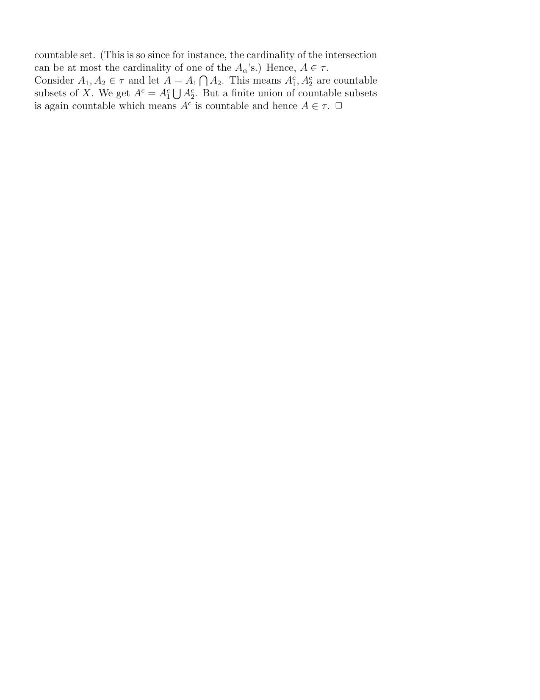
Chapter 1: backup solutions (Claude, not official)
Covered by the official file (ch1_maintext.pdf) and therefore not repeated here: Section 1.1 #2, #3, #4, #9 (i), (iii) to (viii); Section 1.2 #1, #2, #5; Section 1.3 #1(c), #3, #4, #6. The official 1.1 #9 gives only the verdict for (ii), (ix), (x) ("argument similar to question 6", "check the definitions"), and the official 1.3 #1 says of (a), (b) only "already proved as claims", so full proofs of those parts are given below. Also note: in the official 1.2 #5, the last sentence should read "But (X, τ) is not an indiscrete space".
(ii) τ2 consists of ℝ, Ø, and every interval (−r, r), for r any positive real number;
(ix) τ9 consists of ℝ, Ø, every interval [−r, r], and every interval (−r, r), for r any positive real number;
(x) τ10 consists of ℝ, Ø, every interval [−n, n], and every interval (−r, r), for n any positive integer and r any positive real number.
These are the three topologies. (The other seven fail; see the official file.) All three proofs rest on two observations.
Observation 1 (chain). In each of τ2, τ9, τ10, any two members are comparable under ⊆. Indeed Ø and ℝ are comparable with everything, and for intervals centred at 0: if r < s then (−r, r) ⊆ [−r, r] ⊆ (−s, s) ⊆ [−s, s], while (−r, r) ⊆ [−r, r]. Hence for any two members U, V, the intersection U ∩ V is simply the smaller of the two, which is again a member. So all three collections are closed under finite intersections (by induction, or directly: a finite chain has a smallest element).
Observation 2 (unions). Let {Uj : j ∈ J} be any subfamily of one of these collections and W = ⋃j∈J Uj. If some Uj = ℝ then W = ℝ. Discard all Uj = Ø (they do not change W); if nothing is left, W = Ø. Otherwise each remaining Uj is an interval (−rj, rj) or [−rj, rj] with rj > 0. Let s = supj rj ∈ (0, ∞].
- If s = ∞: for any x ∈ ℝ there is j with rj > |x|, so x ∈ (−rj, rj) ⊆ Uj. Thus W = ℝ.
- If s < ∞: every Uj ⊆ [−rj, rj] ⊆ [−s, s], so W ⊆ [−s, s]. If |x| < s, some rj > |x|, so x ∈ Uj; hence (−s, s) ⊆ W. Finally s ∈ W iff some Uj contains s iff some Uj has rj ≥ s and is closed, i.e. (since rj ≤ s) some Uj equals [−s, s]; and by symmetry −s ∈ W iff s ∈ W. So W = [−s, s] if [−s, s] is one of the Uj, and W = (−s, s) otherwise.
(ii) In τ2 there are no closed intervals, so a union is Ø, ℝ or (−s, s) with s a positive real, all in τ2. ℝ, Ø ∈ τ2 by definition, and finite intersections are in τ2 by Observation 1. So τ2 is a topology.
(ix) A union is Ø, ℝ, (−s, s) or [−s, s] with s > 0 real, all in τ9. With Observation 1, τ9 is a topology.
(x) A union is Ø, ℝ, (−s, s) (s > 0 real, in τ10), or [−s, s] where [−s, s] is itself one of the Uj, hence a member of τ10 (so s is a positive integer). With Observation 1, τ10 is a topology. ∎
f−1(⋃j∈J Bj) = ⋃j∈J f−1(Bj) (1)
and
f−1(B1 ∩ B2) = f−1(B1) ∩ f−1(B2) (2)
for any subsets Bj of Y, and any index set J.
(a) Prove that (1) is true.
[Hint. Start your proof by letting x be any element of the set on the left-hand side and show that it is in the set on the right-hand side. Then do the reverse.]
(b) Prove that (2) is true.
Recall f−1(B) = {x ∈ X : f(x) ∈ B}.
(a) Let x ∈ f−1(⋃j∈J Bj). Then f(x) ∈ ⋃j∈J Bj, so f(x) ∈ Bk for some k ∈ J. Then x ∈ f−1(Bk) ⊆ ⋃j∈J f−1(Bj). Conversely let x ∈ ⋃j∈J f−1(Bj). Then x ∈ f−1(Bk) for some k ∈ J, so f(x) ∈ Bk ⊆ ⋃j∈J Bj, so x ∈ f−1(⋃j∈J Bj). Each side is contained in the other, so they are equal. (If J = Ø both sides are Ø.) ∎
(b) x ∈ f−1(B1 ∩ B2) ⇔ f(x) ∈ B1 ∩ B2 ⇔ (f(x) ∈ B1 and f(x) ∈ B2) ⇔ (x ∈ f−1(B1) and x ∈ f−1(B2)) ⇔ x ∈ f−1(B1) ∩ f−1(B2). Every step is an equivalence, so the two sets have exactly the same elements. ∎
Let τ = {Ø} ∪ {U ⊆ ℝ : ℝ \ U is bounded}. We check the three axioms.
(i) Ø ∈ τ by definition; ℝ ∈ τ because ℝ \ ℝ = Ø is bounded.
(ii) Unions. Let {Uj : j ∈ J} ⊆ τ and W = ⋃ Uj. If every Uj is Ø (or J = Ø), then W = Ø ∈ τ. Otherwise there is some k with Uk ≠ Ø, so ℝ \ Uk is bounded. Since Uk ⊆ W, we get ℝ \ W ⊆ ℝ \ Uk, and a subset of a bounded set is bounded. So W ∈ τ.
(iii) Finite intersections. Let U, V ∈ τ. If U = Ø or V = Ø then U ∩ V = Ø ∈ τ. Otherwise ℝ \ U ⊆ [−a, a] and ℝ \ V ⊆ [−b, b] for some a, b ≥ 0, and by De Morgan ℝ \ (U ∩ V) = (ℝ \ U) ∪ (ℝ \ V) ⊆ [−c, c] with c = max(a, b). So U ∩ V ∈ τ. (Induction gives any finite intersection, as in Exercises 1.1 #4.)
Hence τ is a topology on ℝ (the cobounded topology). Note Ø had to be added by hand: its complement ℝ is not bounded. ∎
Definition used. A bornology on X is a collection B of subsets of X such that (B1) B covers X (every x ∈ X lies in some member of B; equivalently every singleton is in B, given B2); (B2) if A ∈ B and A′ ⊆ A then A′ ∈ B; (B3) if A, A′ ∈ B then A ∪ A′ ∈ B. (The course notes were not available to me; this is the standard definition.)
A warning about the wording. Read literally ("closed sets = Ø and every set whose complement is in B"), the open sets would be X together with the members of B, and that is not a topology in general: for X = ℝ and B = bounded sets, the sets (0, n) would all be open but their union (0, ∞) is neither bounded nor ℝ. It also would not specialize to (1), whose open sets are Ø and the sets with bounded complement. The same slip happened in (1) ("closed" should have been "open"). The intended statement, which does specialize to (1) and to the cofinite topology, is:
the open sets are Ø together with every U ⊆ X with X \ U ∈ B; equivalently, the closed sets are X together with the members of B.
We prove that. Let τ = {Ø} ∪ {U ⊆ X : X \ U ∈ B}.
(i) Ø ∈ τ by definition. For X: if X = Ø then X = Ø ∈ τ. If X ≠ Ø, pick x ∈ X; by (B1) some A ∈ B contains x, and by (B2) Ø ⊆ A gives Ø ∈ B. Since X \ X = Ø ∈ B, X ∈ τ.
(ii) Unions. Let {Uj} ⊆ τ and W = ⋃ Uj. If no Uj has complement in B, every Uj is Ø, so W = Ø ∈ τ. Otherwise pick k with X \ Uk ∈ B. Since Uk ⊆ W, X \ W ⊆ X \ Uk, so X \ W ∈ B by (B2). Thus W ∈ τ.
(iii) Finite intersections. Let U, V ∈ τ. If either is Ø, U ∩ V = Ø ∈ τ. Otherwise X \ U, X \ V ∈ B and X \ (U ∩ V) = (X \ U) ∪ (X \ V) ∈ B by (B3). So U ∩ V ∈ τ.
So τ is a topology on X; its closed sets are exactly X and the members of B. ∎
The two consequences.
- (1) follows. The bounded subsets of ℝ form a bornology: {x} ⊆ [x, x] is bounded (B1); a subset of a bounded set is bounded (B2); if A ⊆ [−a, a] and A′ ⊆ [−b, b] then A ∪ A′ ⊆ [−max(a,b), max(a,b)] (B3). With this B, τ is exactly the topology of (1).
- Cofinite topology follows. For any non-empty set X, the finite subsets of X form a bornology: singletons are finite (B1), subsets of finite sets are finite (B2), and a union of two finite sets is finite (B3). With this B, τ = {Ø} ∪ {U : X \ U finite}, which is the finite-closed topology of Definition 1.3.1. So that is indeed a topology.
Chapter 2 solutions
My worked solutions to the comprehensive-exam problem (and any class problem with no official key) follow; the instructor's official solutions to the main-textbook / worksheet problems are appended after.
Comps Fall 2012 #5 - solution
A collection $\mathcal{B}$ of subsets of a set $S$ is a basis if (i) every point of $S$ lies in some member of $\mathcal{B}$, and
(ii) if $p\in B_1\cap B_2$ with $B_1,B_2\in\mathcal{B}$, then some $B_3\in\mathcal{B}$ has $p\in B_3\subseteq B_1\cap B_2$.
(i) Covering: the constant polynomial $f\equiv 1$ is a polynomial with $U_f=\{(x,y): 1\neq 0\}=\mathbb{R}^2$. So every point of $\mathbb{R}^2$ lies in a member of the collection.
(ii) Intersections: for polynomials $f,g$, the product $fg$ is a polynomial, and $(fg)(p)\neq 0 \Leftrightarrow f(p)\neq 0$ and $g(p)\neq 0$ (a field has no zero divisors). Hence $U_f\cap U_g=\{p: f(p)\neq 0$ and $g(p)\neq 0\}=U_{fg}$, itself a member of the collection. So for any $p\in U_f\cap U_g$ we may take $B_3=U_{fg}$, giving $p\in U_{fg}\subseteq U_f\cap U_g$. Both axioms hold, so the collection is a basis for a topology on $\mathbb{R}^2$ (the resulting open sets are the complements of common zero-sets of families of polynomials - the Zariski topology on $\mathbb{R}^2$). ∎


Chapter 2: backup solutions (Claude, not official)
Covered by the official files and not repeated here: Section 2.1 #3, #5, #7 (ch2_sec21_22.pdf); Section 2.2 #1, #2, #5(i) to (iii); Section 2.3 #1, #2 (same file, Section 2.3 given as a sketch); Wikibook #1, #2 and the "is a base" half of #3 (ch2_wikibook.pdf). The official 2.2 #5(iv) is garbled (the rectangle's vertices are cut off) and 2.2 #5(v) takes "the minimum distance r" to the curve without showing r > 0, so those two parts are redone below. Small errata in the official file: in 2.2 #1(iv) the rectangle should be centred at (m, n), not (a + m, b + n); in 2.2 #5(i) the restriction m ≠ 0 is unnecessary and the distance needs an absolute value, d = |b − am − c| / √(1 + m²).
Conventions. As in Morris, the euclidean topology on ℝn has as a basis the open rectangles (a1, b1) × ⋯ × (an, bn). For p ∈ ℝn, ‖p‖ = √(p12 + ⋯ + pn2). For δ > 0 let C(p, δ) = ∏(pi − δ, pi + δ), an open rectangle containing p; every q ∈ C(p, δ) has ‖q − p‖2 < nδ2, i.e. ‖q − p‖ < √n·δ.
(iv) Let Bn be the closed unit n-ball given by Bn = {⟨x1, x2, . . . , xn⟩ ∈ ℝn : x12 + x22 + ⋯ + xn2 ⩽ 1}. Then Bn is a closed subset of ℝn.
We show T = ℝn \ Bn = {p : ‖p‖ > 1} is open. Let p ∈ T and put r = ‖p‖ − 1 > 0, δ = r/√n. Let q ∈ C(p, δ). Then ‖q − p‖ < √n·δ = r, and by the triangle inequality ‖q‖ ≥ ‖p‖ − ‖q − p‖ > ‖p‖ − r = 1. So q ∈ T. Thus p ∈ C(p, δ) ⊆ T with C(p, δ) an open rectangle. Hence T is a union of open rectangles, so T is open (Proposition 2.3.3) and Bn is closed. ∎
Let T = ℝ2 \ C and ⟨a, b⟩ ∈ T, so η = |ab − 1| > 0. Put M = |a| + |b| + 1 and δ = min(1, η/(2M)) > 0. Let ⟨x, y⟩ ∈ (a − δ, a + δ) × (b − δ, b + δ). Then |x| < |a| + 1 and
|xy − ab| = |x(y − b) + b(x − a)| ≤ |x||y − b| + |b||x − a| < (|a| + 1)δ + |b|δ = Mδ ≤ η/2.
Therefore |xy − 1| ≥ |ab − 1| − |xy − ab| > η − η/2 > 0, i.e. xy ≠ 1, so ⟨x, y⟩ ∈ T. Every point of T lies in an open rectangle contained in T, so T is open and C is closed. ∎
(The "is a base" half is in the official file.) Let τu be the topology generated by 𝓛 (the "upper limit topology") and τℓ the lower limit topology, generated by {[a, b) ∣ a < b}.
Neither contains the other. [0, 1) ∈ τℓ. If [0, 1) were in τu, then since 0 ∈ [0, 1) there would be (a, b] with 0 ∈ (a, b] ⊆ [0, 1). But 0 ∈ (a, b] forces a < 0, and then a/2 ∈ (a, b] (as a < a/2 < 0 ≤ b) while a/2 ∉ [0, 1). Contradiction; so τℓ ⊄ τu. Symmetrically (0, 1] ∈ τu but (0, 1] ∉ τℓ: a set [a, b) containing 1 has b > 1, so it contains (1 + b)/2 ∉ (0, 1]. So τu ⊄ τℓ. The two topologies are different and not comparable.
Both are strictly finer than the standard topology τ. For x ∈ (a, b) we have x ∈ (a, x] ⊆ (a, b) and x ∈ [x, b) ⊆ (a, b), so by the base comparison criterion τ ⊆ τu and τ ⊆ τℓ; the sets (0, 1] and [0, 1) are not open in τ (Exercises 2.1 #1), so both inclusions are strict.
But they are "the same space". The map φ(x) = −x is a bijection ℝ → ℝ with φ([a, b)) = (−b, −a] and φ((a, b]) = [−b, −a). Since φ sends base sets to base sets in both directions and images/preimages commute with unions, φ carries τℓ exactly onto τu. So (ℝ, τu) is homeomorphic to (ℝ, τℓ) (a mirror image of the Sorgenfrey line), even though τu ≠ τℓ as collections of subsets of ℝ. ∎
Wikibook definitions: 𝒯ℓ has base {[a, b) ∣ a < b}; with K = {1/n ∣ n ∈ ℕ}, 𝒯K has base all (a, b) together with all (a, b) \ K. We use the criterion from the wikibook: if 𝓑, 𝓑′ are bases of 𝒯, 𝒯′, then 𝒯 ⊆ 𝒯′ iff for every x and every B ∈ 𝓑 with x ∈ B there is B′ ∈ 𝓑′ with x ∈ B′ ⊆ B. Also, a set U is open in a topology with base 𝓑 iff every x ∈ U has some B ∈ 𝓑 with x ∈ B ⊆ U.
𝒯 ⊆ 𝒯ℓ, strictly. If x ∈ (a, b) then x ∈ [x, b) ⊆ (a, b). So 𝒯 ⊆ 𝒯ℓ. The set [0, 1) is in 𝒯ℓ (a base element) but not in 𝒯: any (a, b) ∋ 0 has a < 0, so it contains a/2 < 0, a point not in [0, 1).
𝒯 ⊆ 𝒯K, strictly. Every base element (a, b) of 𝒯 is a base element of 𝒯K, so 𝒯 ⊆ 𝒯K. Let V = (−1, 1) \ K ∈ 𝒯K. Then 0 ∈ V, but any (a, b) ∋ 0 has b > 0; choose n with 1/n < b, then 1/n ∈ (a, b) and 1/n ∉ V. So no open interval around 0 lies in V, and V ∉ 𝒯.
𝒯K ⊄ 𝒯ℓ. The same V = (−1, 1) \ K is not in 𝒯ℓ: any [a, b) ∋ 0 has a ≤ 0 < b, and contains 1/n for n with 1/n < b, which is not in V.
𝒯ℓ ⊄ 𝒯K. [0, 1) ∈ 𝒯ℓ. A 𝒯K-base element containing 0 is (a, b) or (a, b) \ K with a < 0 < b; either way it contains a/2 (negative, so not in K), and a/2 ∉ [0, 1). So [0, 1) ∉ 𝒯K.
Hence each of 𝒯ℓ, 𝒯K is strictly finer than 𝒯, and neither of 𝒯ℓ, 𝒯K contains the other. ∎
Background for the additional problems (Krebs, "Fall 2026 Math 5690 Additional Chapter 2 Notes"). Def. 0.2 to 0.4: for f ∈ ℝ[x1, …, xn], Z(f) = {p ∈ ℝn : f(p) = 0}; the Zariski topology on ℝn is the topology with basis 𝓑 = {Z(f)C : f ∈ ℝ[x1, …, xn]}. So the open sets are the unions ⋃α Z(fα)C, and the closed sets are exactly the intersections ⋂α Z(fα) = Z(S) := {p : f(p) = 0 for all f ∈ S}, S = {fα} any set of polynomials (S = Ø gives ℝn). Def. 0.5: a closed subset C of X is reducible if C = A ∪ B for some closed subsets A, B of X with A ≠ C and B ≠ C (then automatically A, B ⊊ C); otherwise C is irreducible. Note that under this definition Ø is irreducible (Ø = A ∪ B forces A = B = Ø = C). Def. 0.6: the Krull dimension of X is the largest non-negative integer n for which there are non-empty, closed, irreducible C0 ⊊ C1 ⊊ ⋯ ⊊ Cn in X, provided such a largest n exists.
Lemma 1. A nonzero one-variable real polynomial of degree d has at most d real roots. (Standard.)
Lemma 2. If a polynomial f(x, y) vanishes at every point of an open rectangle (a1, b1) × (a2, b2), then f is the zero polynomial.
Proof. Write f = c0(x) + c1(x)y + ⋯ + cm(x)ym. Fix x0 ∈ (a1, b1). The one-variable polynomial y ↦ f(x0, y) has infinitely many roots (all of (a2, b2)), so by Lemma 1 it is zero: ci(x0) = 0 for every i. This holds for every x0 ∈ (a1, b1), so each ci has infinitely many roots and is the zero polynomial. ∎
Lemma 3. A Zariski-closed set F ⊊ ℝ2 contains no open rectangle (so no non-empty euclidean-open set).
Proof. F is closed, so F = Z(S) for a set S of polynomials (see above). Since F ≠ ℝ2, some g ∈ S is not the zero polynomial (if every g ∈ S were zero, Z(S) = ℝ2), and F ⊆ Z(g). If F contained an open rectangle, g would vanish on it, so g = 0 by Lemma 2. Contradiction. ∎
Corollary 4. If A ⊆ ℝ2 contains an open rectangle and A ≠ ℝ2, then A is not Zariski-closed. If additionally ℝ2 \ A contains an open rectangle and A ≠ Ø, then A is not Zariski-open either (its complement would be a proper closed set containing a rectangle).
Neither open nor closed. U contains the open rectangle (−½, ½) × (−½, ½) (there x2 + y2 < ½), and U ≠ ℝ2 (⟨2, 0⟩ ∉ U). By Lemma 3, U is not closed. The complement ℝ2 \ U = {x2 + y2 ≥ 1} contains the open rectangle (2, 3) × (2, 3) and is not all of ℝ2 (it misses ⟨0, 0⟩); by Lemma 3 it is not closed, so U is not open. ∎
Note: the set-builder has "< 1", which is the open disc again (a typo for ≤ 1, since it is called the closed disc). The answer is the same for either reading.
Neither open nor closed. Take C = {x2 + y2 ≤ 1} (for the "<" reading, see (1)). C contains the rectangle (−½, ½)2 and C ≠ ℝ2, so C is not Zariski-closed by Lemma 3. Its complement {x2 + y2 > 1} contains (2, 3)2 and is not ℝ2, so it is not closed and C is not open. ∎ (So the closed disc, although closed in the euclidean topology, is not Zariski-closed: the Zariski topology is much coarser.)
Closed, not open. S = Z(x2 + y2 − 1), so S is Zariski-closed. The complement ℝ2 \ S contains the rectangle (2, 3)2 and is not ℝ2 (⟨1, 0⟩ ∈ S), so it is not closed (Lemma 3; equivalently, S ≠ Ø and ℝ2 \ S contains a rectangle). Hence S is not open. ∎
K = Z(y − x2) is closed (it is the complement of the basic open set Z(y − x2)C). By Def. 0.5 we must show K is not reducible: there are no closed A, B ⊆ ℝ2 with K = A ∪ B, A ≠ K, B ≠ K. Any such A, B satisfy A, B ⊊ K.
Claim: every closed A ⊊ K is finite. Write A = Z(S). Since A ≠ K there is a point ⟨t0, t02⟩ ∈ K \ A, hence some f ∈ S with f(t0, t02) ≠ 0. Then g(t) = f(t, t2) is a one-variable polynomial with g(t0) ≠ 0, so g is not the zero polynomial and has finitely many roots (Lemma 1). Every point of A ∩ K = A has the form ⟨t, t2⟩ with f(t, t2) = 0, i.e. g(t) = 0. So A is finite.
Now suppose K = A ∪ B with A, B closed, A ≠ K, B ≠ K, so A, B ⊊ K. By the claim A and B are finite, so K is finite. But K contains the infinitely many distinct points ⟨t, t2⟩, t ∈ ℝ. Contradiction. So K is irreducible. ∎
Suppose ℝ2 = A ∪ B with A, B proper closed subsets. As in Lemma 3, A ⊆ Z(f) and B ⊆ Z(g) for some nonzero polynomials f, g. Then every point p satisfies f(p) = 0 or g(p) = 0, so the polynomial fg vanishes at every point of ℝ2, and by Lemma 2 fg is the zero polynomial. But the product of two nonzero polynomials is nonzero (the product of their leading terms, in any monomial order, e.g. highest power of y then of x, is a nonzero term that cannot cancel). Contradiction. So ℝ2 is not reducible, i.e. irreducible in the sense of Def. 0.5. ∎
Consider {⟨0, 0⟩} ⊊ K ⊊ ℝ2, with K as in (4).
- {⟨0, 0⟩} = Z(x) ∩ Z(y) is closed and non-empty, and it is irreducible: if {⟨0, 0⟩} = A ∪ B with A, B ≠ {⟨0, 0⟩}, then A = B = Ø and A ∪ B = Ø, impossible.
- K is closed and irreducible by (4); ⟨0, 0⟩ ∈ K and K ≠ {⟨0, 0⟩} (⟨1, 1⟩ ∈ K).
- ℝ2 is closed and irreducible by (5); K ≠ ℝ2 (⟨0, 1⟩ ∉ K).
This is a chain of length 2 of non-empty, closed, irreducible sets, so by Def. 0.6 the Krull dimension of ℝ2 (the largest such length) is at least 2. ∎ (In fact it equals 2, but that is not asked.)
Answer: Ø and the singletons {a}, a ∈ ℝ.
Ø is closed, and under Def. 0.5 it is irreducible (Ø = A ∪ B forces A = B = Ø = C, so the condition A ≠ C fails). Note that Ø never appears in a Krull-dimension chain, since Def. 0.6 only uses non-empty sets. Singletons {a} are closed (Exercises 2.1 #5) and irreducible: if {a} = A ∪ B with A ≠ {a} and B ≠ {a}, then A = B = Ø and A ∪ B = Ø ≠ {a}.
Conversely let A be closed with at least two points a < b, and pick c with a < c < b. Put A1 = A ∩ (−∞, c] and A2 = A ∩ [c, ∞). Both are closed (intersections of closed sets, Exercises 2.1 #2), A = A1 ∪ A2, b ∉ A1 and a ∉ A2, so both are proper subsets of A. Hence A is reducible. So the closed irreducible subsets are exactly Ø and the singletons. (Consequently the Krull dimension of ℝ in the euclidean topology is 0.) ∎
Answer: 0 (X non-empty, as in Def. 0.1).
The closed sets are Ø and X. Both are irreducible under Def. 0.5: Ø as always, and X because X = A ∪ B with A, B closed and A, B ≠ X forces A = B = Ø, whose union is Ø ≠ X. Def. 0.6 only counts non-empty sets, so the only set available for a chain is X. The chain C0 = X has length 0, and no chain of length 1 exists (it would need two distinct non-empty closed sets). So the Krull dimension is 0. ∎
Answer: 1. The closed sets are ℝ and all bounded subsets of ℝ (including Ø).
- Ø and singletons are bounded, hence closed, and irreducible (as in (7)).
- A bounded set A with at least two points is reducible: pick a ∈ A; A = {a} ∪ (A \ {a}), both bounded hence closed, both proper subsets of A.
- ℝ is irreducible: its proper closed subsets are exactly the bounded sets, and the union of two bounded sets is bounded, hence ≠ ℝ.
So the irreducible closed sets are Ø, the singletons, and ℝ; the non-empty ones (the only ones allowed in Def. 0.6) are the singletons and ℝ. A chain C0 ⊊ C1 ⊊ ⋯ of these can contain at most one singleton (two distinct singletons are not nested) and at most one copy of ℝ, so every chain has length ≤ 1; and {0} ⊊ ℝ has length 1. The Krull dimension is 1. ∎
Let 𝔅 be a bornology on a non-empty set X (it covers X, is closed under subsets and under finite unions), and give X the topology whose closed sets are X and the members of 𝔅 (open sets: Ø and complements of members of 𝔅; see Chapter 1 HW from class (2)).
Claim. If X ∉ 𝔅, the Krull dimension of X is 1. If X ∈ 𝔅 (the special case), the Krull dimension is 0.
Proof. Every singleton {x} is in 𝔅 (x lies in some member, and 𝔅 is closed under subsets), so singletons are closed and, as in (7), irreducible; Ø ∈ 𝔅 is closed and irreducible too but is excluded from chains by Def. 0.6. A member A ∈ 𝔅 with at least two points is reducible: A = {a} ∪ (A \ {a}), both in 𝔅, both proper.
- X ∉ 𝔅. Then the proper closed subsets of X are exactly the members of 𝔅, and a union of two of them is in 𝔅, hence ≠ X. So X is irreducible. The non-empty irreducible closed sets are the singletons and X; exactly as in (9) the longest chains are {x} ⊊ X (note X ≠ {x} because {x} ∈ 𝔅 but X ∉ 𝔅). Krull dimension 1.
- X ∈ 𝔅 (special case). Then 𝔅 contains every subset of X, every subset is closed, and the topology is discrete. Now X itself is a member of 𝔅; if X has at least two points it is reducible, as is every closed set with two or more points. The non-empty irreducible closed sets are only the singletons, no two of which are nested, so the Krull dimension is 0.
Examples: (9) is the case X = ℝ, 𝔅 = bounded sets (ℝ is unbounded, dimension 1). With 𝔅 = finite subsets we get the cofinite topology: dimension 1 if X is infinite, but if X is finite then X ∈ 𝔅, the cofinite topology is discrete, and the dimension is 0. ∎
Chapter 2, additional problem (11): backup solution (Claude, not official)
Terminology. Call a set F1×⋯×Fn with every Fi finite or equal to X a box. So T is the set of complements of boxes.
(a) A warning first: as literally written, T is NOT a topology when n ≥ 2 and X has at least 2 points.
T does contain ∅ = (X×⋯×X)c and Xn = (∅×⋯×∅)c, and it is closed under arbitrary unions: an intersection of boxes is the box of the factorwise intersections, and an intersection of sets that are each finite or X is finite or X. But T is not closed under finite intersections. Pick a, b ∈ X and let
U = Z({a}, X, …, X)c, V = Z(X, {b}, X, …, X)c, so U ∩ V = Cc, where C = ({a}×X×⋯×X) ∪ (X×{b}×X×⋯×X).
If C were a box G1×⋯×Gn: the points (a, y, z3, …, zn) lie in C for all y, zi ∈ X, so G2 = G3 = ⋯ = Gn = X, and the points (y, b, …) give G1 = X. Then C = Xn. But choosing c ≠ a and d ≠ b (possible since |X| ≥ 2), the point (c, d, …) is not in C. Contradiction, so U ∩ V ∉ T. (For n = 1, T is exactly the cofinite topology, which is fine.)
The intended statement (presumably): take as closed sets all finite unions of boxes, i.e. T* = { Cc : C a finite union of boxes }. This is the smallest topology containing T. We prove that T* is a topology.
Proof that T* is a topology.
(1) ∅ and Xn are open: Xn is a box, and ∅ is the empty union (or the box ∅×⋯×∅).
(2) Finite intersections of open sets: their complement is a finite union of finite unions of boxes, which is again a finite union of boxes.
(3) Arbitrary unions of open sets: we must show that an arbitrary intersection ⋂α Cα of closed sets is closed. First, a finite intersection of closed sets is closed: distribute, and use box ∩ box = box. Next we use the following lemma.
Lemma (descending chain condition). There is no infinite strictly decreasing chain C1 ⊋ C2 ⊋ ⋯ of closed sets.
Given the lemma, choose a minimal set D among all finite intersections Cα1 ∩ ⋯ ∩ Cαk. One exists, since otherwise we could build an infinite strictly decreasing chain. For any α, D ∩ Cα is a finite intersection contained in D, so by minimality D ∩ Cα = D, i.e. D ⊆ Cα. Hence ⋂α Cα = D, which is closed. ∎
Proof of the lemma. If X is finite then Xn is finite and there is nothing to prove, so assume X is infinite.
Flats. For S ⊆ {1,…,n} and c ∈ Xn, the flat L(S, c) = { x : xi = ci for all i ∉ S }. Its dimension is |S|: the coordinates in S are free. A flat is a box (built from singletons and X), and every box is a finite union of flats (expand each finite factor into its points). So the closed sets are exactly the finite unions of flats.
Fact A. If a flat L is contained in a finite union M1 ∪ ⋯ ∪ Mr of flats, then L ⊆ Mj for some j. Proof: suppose L ⊄ Mj for every j. Then L ∩ Mj is either empty or a flat that pins some coordinate that is free in L to a single value. Only finitely many (coordinate, value) pairs get pinned this way, and X is infinite, so we can choose x ∈ L whose free coordinates avoid all of them. Then x ∉ Mj for every j, contradicting L ⊆ ⋃Mj. ∎
Fact B. If L′ ⊆ L are flats, then every free coordinate of L′ is free in L, because a free coordinate of L′ takes infinitely many values and so cannot be pinned in L. Hence dim L′ ≤ dim L, with equality only if L′ = L.
By Fact A, the maximal flats contained in a closed set C are finitely many, and C is their union. Let mk(C) be the number of maximal flats of C of dimension k, and v(C) = (mn, mn−1, …, m0) ∈ ℕn+1. Claim: if C′ ⊊ C are closed, then v(C′) < v(C) in lexicographic order. The lexicographic order on ℕn+1 has no infinite strictly decreasing sequence, so the lemma follows.
Proof of the claim. Every maximal flat L′ of C′ lies in C, so by Fact A it lies in a maximal flat L of C, with dim L′ ≤ dim L. Not every maximal flat of C is a maximal flat of C′, since otherwise C ⊆ C′. Let k be the largest dimension of a maximal flat of C that is not a maximal flat of C′. Then for j > k, every j-dimensional maximal flat of C is a maximal flat of C′. Now let L′ be a maximal flat of C′ with dim L′ = j ≥ k, contained in the maximal flat L of C. If dim L > j ≥ k, then L is a maximal flat of C′ properly containing L′, contradicting the maximality of L′. So dim L = j, and L′ = L by Fact B. Hence mj(C′) = mj(C) for j > k, and the k-dimensional maximal flats of C′ form a proper subset of those of C, so mk(C′) < mk(C). ∎
(b) Krull dimension n when X is infinite (topology T*, Krebs' Def. 0.5 and 0.6: chains of non-empty, closed, irreducible sets).
Step 1: the non-empty closed irreducible sets are exactly the flats.
A flat L is irreducible: if L = A ∪ B with A, B closed, then A and B are finite unions of flats, so by Fact A, L lies inside some flat contained in A or in B. Thus L ⊆ A (so A = L) or L ⊆ B (so B = L), and L is not reducible.
Conversely, let C ≠ ∅ be closed and irreducible, and write C = L1 ∪ ⋯ ∪ Lr as the union of its maximal flats (r ≥ 1). If r ≥ 2, put A = L1 and B = L2 ∪ ⋯ ∪ Lr, both closed. B ≠ C because L1 ⊄ B (Fact A plus maximality), and A ≠ C because L2 ⊄ L1. So C would be reducible. Hence r = 1 and C is a flat.
Step 2: a chain of length n. Fix a ∈ X and let Ck = { x : xi = a for all i > k } for k = 0, …, n. Then C0 = {(a, …, a)} ⊊ C1 ⊊ ⋯ ⊊ Cn = Xn, strictly, because X has points other than a. Each Ck is a non-empty flat, hence closed and irreducible. So the Krull dimension is at least n.
Step 3: no longer chain exists. In any chain C0 ⊊ ⋯ ⊊ Cm of non-empty closed irreducible sets, each Ci is a flat (Step 1), and by Fact B the dimensions strictly increase. Dimensions lie in {0, …, n}, so m ≤ n.
Therefore Xn has Krull dimension exactly n. ∎
Remark. Fact A is where "X infinite" is used. If X is finite, every subset is a finite union of points, so the topology is discrete, the only non-empty irreducible closed sets are points, and the Krull dimension is 0.
Chapter 3 solutions
My worked solutions to the comprehensive-exam problem (and any class problem with no official key) follow; the instructor's official solutions to the main-textbook / worksheet problems are appended after.
Comps Spring 2013 #3 - solution
Recall $\partial H=\overline{H}\cap\overline{S\setminus H}$, and that $S$ is disconnected iff it has a nonempty proper subset that is both open and closed (clopen). ($\Rightarrow$, contrapositive) Suppose some nonempty proper $H$ has $\partial H=\emptyset$, i.e. $\overline{H}\cap\overline{S\setminus H}=\emptyset$. From $\overline{H}\cap\overline{S\setminus H}=\emptyset$ we get $\overline{H}\subseteq S\setminus\overline{S\setminus H}\subseteq S\setminus(S\setminus H)=H$, so $\overline{H}=H$ ($H$ closed); likewise $\overline{S\setminus H}=S\setminus H$, so $S\setminus H$ is closed, i.e. $H$ is open. Thus $H$ is a nonempty proper clopen set and $S$ is disconnected. ($\Leftarrow$, contrapositive) Suppose $S$ is disconnected: $S=U\cup V$ with $U,V$ disjoint, nonempty, open. Take $H=U$; it is nonempty and proper. Since $U$ is open and $U=S\setminus V$ is closed, $U$ is clopen, so $\overline{U}=U$ and $\overline{S\setminus U}=\overline{V}=V$. Then $\partial H=\overline{U}\cap\overline{V}=U\cap V=\emptyset$. So the boundary condition fails for this $H$. Contrapositively, if every nonempty proper $H$ has $\partial H\neq\emptyset$ then $S$ is connected, and conversely. ∎
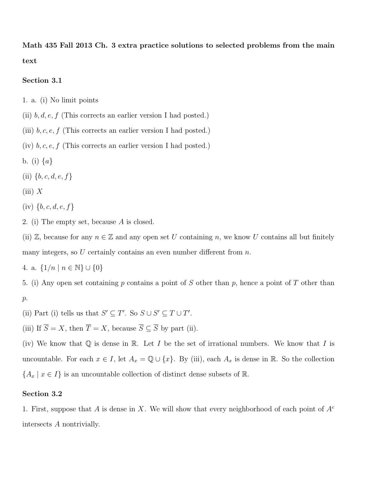
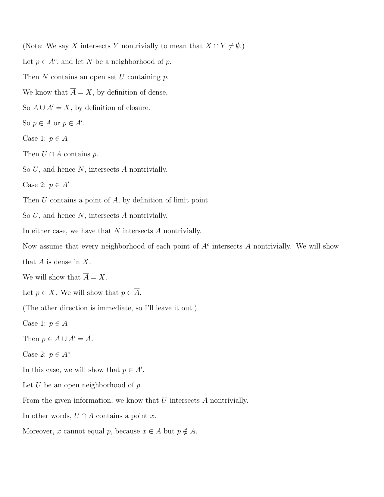
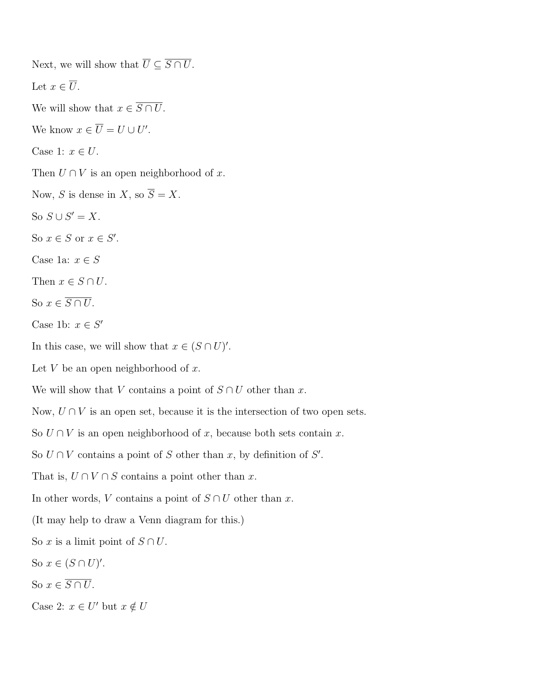
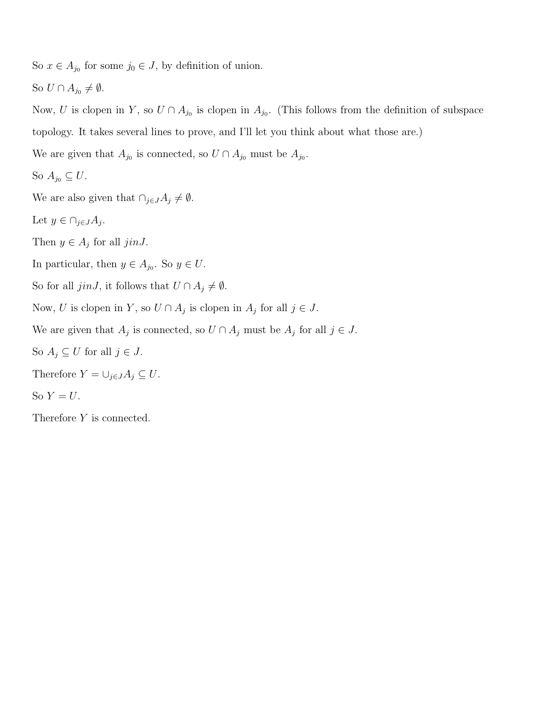
Solutions
• X = ℝ cofinite, A = ℤ. A is not open, because its complement is infinite. A is not closed, because it's infinite and not all of ℝ. Closure: the only closed sets containing an infinite set are ℝ itself, so A = ℝ.
• X = ℝ2 Zariski, A = the unit circle. A = Z(x2 + y2 − 1), so A is closed and A = A. A is not open, since its complement is not a zero set (the complement is not contained in the zero set of any nonzero polynomial). ∎
Euclidean: let U be open with 0 ∈ U. Then (−ε, ε) ⊆ U for some ε > 0. Pick n > 1/ε. Then 1/n ∈ (−ε, ε) ⊆ U, 1/n ∈ A, and 1/n ≠ 0. So every open set containing 0 contains a point of A other than 0, and 0 is a limit point of A.
Discrete: {0} is open. It contains no point of A other than 0 (in fact 0 ∉ A). So 0 is not a limit point of A. (In the discrete topology no point is a limit point of any set, because {x} is always open.) ∎
(ii) Answer: the limit points of A are exactly the points of the x-axis, {(a, 0) : a ∈ ℝ}. Part (i) is the case a = 0.
Every (a, 0) is a limit point. Let U be Zariski-open with (a, 0) ∈ U, so U = ℝ2 \ Z(S) for some set S of polynomials. Since (a, 0) ∉ Z(S), some f ∈ S has f(a, 0) ≠ 0. Suppose U contained no point of A other than (a, 0). Then every point of A except possibly (a, 0) lies in Z(S). In particular f(1/n, 0) = 0 for all n, with at most one exception. Put g(x) = f(x, 0), a polynomial in one variable. It has infinitely many roots 1/n, so g is the zero polynomial. Then f(a, 0) = g(a) = 0, a contradiction. So every open set containing (a, 0) meets A in a point other than (a, 0). For a = 0 this proves (i).
No point off the x-axis is a limit point. Let p = (a, b) with b ≠ 0. The x-axis is Z(y), which is closed, so U = ℝ2 \ Z(y) = {(x, y) : y ≠ 0} is open. It contains p, and U ∩ A = Ø because every point of A has y = 0. So p is not a limit point of A. ∎
Solutions
Every x ∈ [a, b] is a limit point. Let U be open with x ∈ U. Then there is ε > 0 with (x − ε, x + ε) ⊆ U. If x < b, let δ = min(ε, b − x) > 0 and y = x + δ/2. Then x < y < b and y > a (since x ≥ a), and y ∈ (x − ε, x + ε) ⊆ U, so y ∈ U ∩ (a, b) and y ≠ x. If x = b, let δ = min(ε, b − a) > 0 and y = b − δ/2; then a < y < b and y ∈ U, so again y ∈ U ∩ (a, b), y ≠ x. So every open set containing x meets (a, b) in a point other than x.
No x outside [a, b] is a limit point. If x < a, then U = (x − 1, a) is open, contains x, and U ∩ (a, b) = Ø. If x > b, use U = (b, x + 1). ∎
(i) (0, 1) is open and (0, 1) ⊆ [0, 1], so (0, 1) ⊆ Int([0, 1]) ⊆ [0, 1]. It remains to show 0, 1 ∉ Int([0, 1]). Int([0,1]) is open, so if 0 ∈ Int([0,1]) there is ε > 0 with (−ε, ε) ⊆ Int([0,1]) ⊆ [0, 1]; but −ε/2 is in (−ε, ε) and not in [0, 1], a contradiction. Similarly, if 1 ∈ Int([0,1]) then some (1 − ε, 1 + ε) ⊆ [0, 1], contradicted by 1 + ε/2. So Int([0, 1]) = (0, 1).
(ii) (3, 4) is itself open, so it is the largest open subset of itself. This is the special case of (iii).
(iii) A is open and A ⊆ A, so A ⊆ Int(A). Always Int(A) ⊆ A. Hence Int(A) = A.
(iv) Int({3}) is an open subset of {3}, so it is Ø or {3}. {3} is not open in ℝ: any open set containing 3 contains some (3 − ε, 3 + ε), which has points other than 3. So Int({3}) = Ø.
(v) The only open sets are Ø and X. If A is a proper subset, X ⊄ A, so the only open set inside A is Ø. Hence Int(A) = Ø.
(vi) Suppose Int(A) ≠ Ø and pick x ∈ Int(A). Since Int(A) is open, some interval (x − ε, x + ε) ⊆ Int(A) ⊆ A. But a non-trivial interval is uncountable, and a subset of a countable set is countable. Contradiction, so Int(A) = Ø. ∎
X \ C ⊆ Int(A). X \ C is open, since C is closed. Also X \ A ⊆ C, so X \ C ⊆ X \ (X \ A) = A. So X \ C is an open set contained in A, hence X \ C ⊆ Int(A).
Int(A) ⊆ X \ C. Int(A) is open, so X \ Int(A) is closed. Since Int(A) ⊆ A, we get X \ A ⊆ X \ Int(A). So X \ Int(A) is a closed set containing X \ A, and therefore C ⊆ X \ Int(A), because C is the smallest such set. Taking complements, Int(A) ⊆ X \ C.
So Int(A) = X \ (X \ A). ∎
(i) Use the basis criterion: ℬ must cover ℝ, and for B1, B2 ∈ ℬ and x ∈ B1 ∩ B2, some B ∈ ℬ must satisfy x ∈ B ⊆ B1 ∩ B2.
Covering: for x ∈ ℝ, choose a rational q > x (ℚ is unbounded). Then x ∈ [x, q) ∈ ℬ.
Intersections: let x ∈ [a1, b1) ∩ [a2, b2) with b1, b2 ∈ ℚ. Put a = max(a1, a2) and b = min(b1, b2). Then the intersection is exactly [a, b), with b ∈ ℚ, and a ≤ x < b gives a < b. So [a, b) ∈ ℬ and x ∈ [a, b) ⊆ B1 ∩ B2. Hence ℬ is a basis for a topology τ1.
(ii) Every Euclidean open set is a union of open intervals, so it suffices to show each (c, d) is τ1-open. For x ∈ (c, d), choose a rational q with x < q < d (ℚ is dense). Then x ∈ [x, q) ⊆ (c, d) with [x, q) ∈ ℬ. So (c, d) is a union of members of ℬ and lies in τ1. Hence τ ⊆ τ1.
The containment is strict: [0, 1) ∈ ℬ ⊆ τ1, but [0, 1) is not Euclidean-open, since every (−ε, ε) around 0 contains negative numbers. So τ1 ⊃ τ properly.
(iii) Let a < b be any reals (b need not be rational).
Open: for x ∈ [a, b), pick a rational q with x < q < b. Then x ∈ [a, q) ⊆ [a, b) with [a, q) ∈ ℬ. So [a, b) is a union of basis sets and is open.
Closed: ℝ \ [a, b) = (−∞, a) ∪ [b, ∞). (−∞, a) is Euclidean-open, hence τ1-open by (ii). [b, ∞) = ⋃ { [b, q) : q ∈ ℚ, q > b }, a union of basis sets, hence open. So the complement is open and [a, b) is closed. So [a, b) is clopen.
(iv) ℚ is countable, so it suffices to show ℚ is dense in (ℝ, τ1), i.e. every non-empty open set meets ℚ. A non-empty τ1-open set U contains some basis set [a, b) with a < b, and [a, b) ⊇ (a, b) contains a rational number. So U ∩ ℚ ≠ Ø for every non-empty open U, and so ℚ = ℝ. (If x ∉ ℚ, every open U ∋ x meets ℚ in a point other than x, so x is a limit point of ℚ.) Hence the Sorgenfrey line is separable. ∎
Proof. Let U be clopen in X. We show U = Ø or U = X. Suppose U ≠ Ø and U ≠ X.
• U is open and non-empty, so X \ U is finite (open sets in the finite-closed topology are Ø and the complements of finite sets).
• U is closed and U ≠ X, so U is finite (closed sets are X and the finite sets).
Then X = U ∪ (X \ U) is a union of two finite sets, so it is finite. This contradicts X being infinite. Hence the only clopen sets are Ø and X, and X is connected. ∎
Chapter 3: backup solutions (Claude, not official)
These fill the gaps left in Krebs' "selected problems" file for Chapter 3 after checking it against the current edition. (3.1 #3; 3.2 #5, 6, 10, 11; 3.3 #5 and additional problems (1) to (5) are in the earlier backup files and are not repeated here.)
(i) {a},
(ii) {b, c},
(iii) {a, c, d},
(iv) {b, d, e}.
(b) Hence, find the closure of each of the above sets.
(c) Now find the closure of each of the above sets using the method of Example 3.1.11.
Why this is here: the official file answers (a) and (b) only, and it was written for an older edition in which X also contained a point f; the current Example 3.1.2 has X = {a, b, c, d, e}, so every "f" in the official answers must be deleted. The official 1(a)(iii) also omits d (Krebs' note). Part (c) has no official solution.
Example 3.1.2: X = {a, b, c, d, e}, τ = {X, Ø, {a}, {c, d}, {a, c, d}, {b, c, d, e}}. The open sets containing each point are:
a: {a}, {a, c, d}, X. b: {b, c, d, e}, X. c and d: {c, d}, {a, c, d}, {b, c, d, e}, X. e: {b, c, d, e}, X.
In each case the first set listed is contained in all the others. So p is a limit point of A iff that smallest open set Mp (Ma = {a}, Mb = Me = {b, c, d, e}, Mc = Md = {c, d}) contains a point of A other than p: if Mp does, every larger open set does too; if it does not, Mp itself shows p is not a limit point.
(a)
(i) A = {a}. Ma = {a} has no point of A other than a; Mb, Me, Mc, Md do not contain a. No limit points (A′ = Ø).
(ii) A = {b, c}. a: {a} misses A. b: Mb contains c ≠ b, yes. c: {c, d} contains no point of A other than c, no. d: {c, d} contains c, yes. e: Me contains b, yes. A′ = {b, d, e}.
(iii) A = {a, c, d}. a: {a}, no. b: Mb contains c, yes. c: {c, d} contains d, yes. d: {c, d} contains c, yes. e: Me contains c, yes. A′ = {b, c, d, e}.
(iv) A = {b, d, e}. a: no. b: Mb contains d, yes. c: {c, d} contains d, yes. d: {c, d} contains no point of A other than d, no. e: Me contains b, yes. A′ = {b, c, e}.
(b) A = A ∪ A′:
(i) {a} = {a}. (ii) {b, c} = {b, c, d, e}. (iii) {a, c, d} = X. (iv) {b, d, e} = {b, c, d, e}.
(c) The closed sets are the complements of the open sets: X, Ø, {b, c, d, e}, {a, b, e}, {a}, {b, e} (complements of Ø, X, {a}, {c, d}, {b, c, d, e}, {a, c, d} respectively). The closure is the smallest closed set containing the given set (Remark 3.1.10):
(i) {a} is itself closed, so {a} = {a}.
(ii) Closed sets containing b and c: X and {b, c, d, e}. Smallest: {b, c} = {b, c, d, e}.
(iii) Closed sets containing a, c and d: only X. So {a, c, d} = X.
(iv) Closed sets containing b, d and e: X and {b, c, d, e}. So {b, d, e} = {b, c, d, e}.
These agree with (b). ∎
(i) A = {1, 2, 3, . . . , 10},
Why this is here: the official answer (Ø) is right, but its reason, "because A is closed", only shows A′ ⊆ A (Proposition 3.1.6), not A′ = Ø. A complete argument:
A′ = Ø. Let n ∈ ℤ. The set U = ℤ \ (A \ {n}) has finite complement A \ {n}, so it is open, and it contains n. Every point of A in U is not in A \ {n}, so it equals n. So U is an open set containing n and no point of A other than n, and n is not a limit point of A. As n was arbitrary, A has no limit points. ∎
(i) {1, 1/2, 1/3, 1/4, . . . , 1/n, . . . };
(ii) the set ℤ of all integers;
(iii) the set P of all irrational numbers.
Why this is here: the official file gives only the answer to (i), with no proof, and nothing for (ii) and (iii).
(i) Let S = {1/n : n ∈ ℕ}. S = S ∪ {0}.
0 is a limit point: an open U ∋ 0 contains some (−ε, ε); choosing n > 1/ε gives 1/n ∈ U ∩ S with 1/n ≠ 0.
No other point outside S is a limit point: if x < 0, (−∞, 0) is open, contains x and misses S; if x > 1, (1, ∞) does the same. If 0 < x ≤ 1 and x ∉ S, then 1/(n+1) < x < 1/n for some n ∈ ℕ (take n the largest integer with n < 1/x, which exists as 1/x ≥ 1 is not an integer), and the open interval (1/(n+1), 1/n) contains x and no point of S. So S′ ⊆ S ∪ {0}, 0 ∈ S′, and S = S ∪ S′ = S ∪ {0}.
(ii) ℤ = ℤ. ℝ \ ℤ = ⋃n∈ℤ (n, n + 1) is a union of open intervals, hence open, so ℤ is closed and equals its own closure.
(iii) P = ℝ. By Proposition 3.1.15 it suffices to show every non-empty open set U meets P. U contains an interval (a, b) with a < b. Pick a rational q ∈ (a, b) (as in Example 3.1.12) and an integer m with √2/m < b − q. Then q + √2/m ∈ (a, b), and it is irrational (if it were rational, √2 = m((q + √2/m) − q) would be rational). So U ∩ P ≠ Ø, and P is dense in ℝ. ∎
(i) τ1 consists of ℝ, Ø, and every interval (a, b), for a and b any real numbers with a < b ;
(ii) τ2 consists of ℝ, Ø, and every interval (−r, r), for r any positive real number;
(iii) τ3 consists of ℝ, Ø, and every interval (−r, r), for r any positive rational number;
(iv) τ4 consists of ℝ, Ø, and every interval [−r, r], for r any positive rational number;
(v) τ5 consists of ℝ, Ø, and every interval (−r, r), for r any positive irrational number;
(vi) τ6 consists of ℝ, Ø, and every interval [−r, r], for r any positive irrational number;
(vii) τ7 consists of ℝ, Ø, and every interval [−r, r), for r any positive real number;
(viii) τ8 consists of ℝ, Ø, and every interval (−r, r], for r any positive real number;
(ix) τ9 consists of ℝ, Ø, every interval [−r, r], and every interval (−r, r), for r any positive real number;
(x) τ10 consists of ℝ, Ø, every interval [−n, n], and every interval (−r, r), for n any positive integer and r any positive real number.
Why this is here: the official answer ((ii), (ix), (x)) is right, but its reason, "in each case the only open sets are ℝ and Ø", is false: each of these topologies has uncountably many open sets. Correct argument:
Answer: all three topological spaces, (ℝ, τ2), (ℝ, τ9), (ℝ, τ10), are connected.
Which collections are topologies (this is Exercises 1.1 #9, included so the answer is self-contained). In (ii), (ix), (x), every member other than Ø is ℝ or an interval centred at 0. Given any family of members, let s be the supremum of the radii of its members (s = ∞ if the family contains ℝ or the radii are unbounded). The union is ℝ if s = ∞; otherwise it is [−s, s] if some member of the family is [−s, s], and (−s, s) if not (every point with |x| < s lies in a member of radius > |x|, and every member lies in [−s, s], inside (−s, s) unless it is [−s, s]). In (ii) only open intervals occur, so the union is (−s, s) ∈ τ2. In (ix), [−s, s] and (−s, s) are both in τ9. In (x), a closed member [−s, s] can only occur when s is a positive integer, so the union is again in τ10. The intersection of two members is the one of smaller radius, or, when the radii are equal, the open one; again a member. (An empty union is Ø.) So τ2, τ9, τ10 are topologies. The other seven are not, because each fails to be closed under unions:
(i) (0, 1) ∪ (2, 3) is not an interval. (iii) ⋃{(−r, r) : r ∈ ℚ, 0 < r < √2} = (−√2, √2) ∉ τ3. (iv) ⋃{[−r, r] : r ∈ ℚ, 0 < r < √2} = (−√2, √2) ∉ τ4. (v), (vi) Using the irrationals rn = 1 − √2/(2n) ↑ 1, the union of the (−rn, rn) or of the [−rn, rn] is (−1, 1), not in τ5 (1 is rational) nor in τ6. (vii) ⋃{[−r, r) : 0 < r < 1} = (−1, 1), which is not of the form [−r, r). (viii) Likewise ⋃{(−r, r] : 0 < r < 1} = (−1, 1) ∉ τ8.
Connectedness. In each of τ2, τ9, τ10, every non-empty open set contains 0. Suppose U were a clopen subset with U ≠ Ø and U ≠ ℝ. Then U and ℝ \ U are both open and non-empty, so both contain 0, which is impossible since they are disjoint. Hence the only clopen sets are Ø and ℝ, and each of the three spaces is connected. ∎
Chapter 4 solutions
My worked solutions to the comprehensive-exam problem (and any class problem with no official key) follow; the instructor's official solutions to the main-textbook / worksheet problems are appended after.
Comps Fall 2011 #1 - solution
(a) Two topological spaces $X,Y$ are homeomorphic if there exists a bijection $f:X\to Y$ such that both $f$ and its inverse $f^{-1}$ are continuous (equivalently, $f$ is a continuous open bijection).
(b) YES, $(0,1)\cong\mathbb{R}$. A homeomorphism is $f:(0,1)\to\mathbb{R}$, $f(t)=\tan(\pi t-\frac{\pi}{2})$ (strictly increasing, onto $\mathbb{R}$).
(c) NO, $\mathbb{R}^2\ncong\mathbb{R}$. Removing one point from $\mathbb{R}$ disconnects it ($\mathbb{R}\setminus\{0\}$ has two components), while removing any one point from $\mathbb{R}^2$ leaves a (path-)connected space. A homeomorphism would carry the removed point of one to a point of the other and preserve connectedness of the complement - impossible. So no homeomorphism exists.
(d) NO, $S\ncong\mathbb{R}$. The circle $S$ is compact (closed and bounded in $\mathbb{R}^2$), but $\mathbb{R}$ is not compact, and compactness is a homeomorphism invariant. (Equivalently, removing a point from $S$ leaves it connected, but not so for $\mathbb{R}$.) ∎


Chapter 4: backup solutions (Claude, not official)
Covered by the official files and not repeated here: Section 4.1 #1, #2, #3(i), #4, #8, #9; Section 4.2 #1(i), #2; Section 4.3 #4 (sketch), #5(i) (sketch) (ch4_maintext.pdf); Additional problem (1) (ch4_zariski.pdf, item (6)). The official 4.2 #5 solves an older-edition version with X1 = (0, 1) ∪ (2, 3) (map x ↦ x − 1); the current book has (3, 4), so it is redone below.
Tools used several times.
Lemma A (restriction). If f : (X, τ) → (Y, τ1) is a homeomorphism and S ⊆ X, then f restricted to S is a homeomorphism of the subspace S onto the subspace f(S).
Proof. It is a bijection S → f(S). If U is open in S, U = V ∩ S with V ∈ τ, and f(U) = f(V) ∩ f(S) (f is injective), which is open in f(S) since f(V) ∈ τ1. If W is open in f(S), W = G ∩ f(S) with G ∈ τ1, and the preimage of W in S is f−1(G) ∩ S, open in S. ∎
Lemma B (ε-δ criterion). Let A ⊆ ℝm, B ⊆ ℝk carry the subspace topologies, and let f : A → B be a bijection such that both f and f−1 are ε-δ continuous (for every p and ε > 0 there is δ > 0 with ‖q − p‖ < δ ⇒ ‖f(q) − f(p)‖ < ε). Then f is a homeomorphism.
Proof. Open balls B(p, r) are open in ℝn and form a basis (Exercises 2.2 #1, #2 and 2.3 #1(ii); the same argument works in ℝn). Hence a set U ⊆ A is open in A iff for every p ∈ U there is r > 0 with B(p, r) ∩ A ⊆ U. [If U = V ∩ A with V open, some B(p, r) ⊆ V; conversely U = (⋃p B(p, rp)) ∩ A.] Now let W be open in B and p ∈ f−1(W). Choose ε with B(f(p), ε) ∩ B ⊆ W and then δ for f at p; then B(p, δ) ∩ A ⊆ f−1(W). So f−1(W) is open in A: condition (iii) of Definition 4.2.1. Applying the same to f−1 gives that f(U) = (f−1)−1(U) is open in B for U open in A: condition (iv). ∎
Lemma M (monotone maps of intervals). If I, J ⊆ ℝ are intervals and f : I → J is a strictly monotone bijection, then f is a homeomorphism.
Proof. First let f be strictly increasing. The sets (u, v) ∩ I, u < v, form a basis of the subspace I (open intervals form a basis of ℝ). Let W = (u, v) ∩ I and y = f(x) with x ∈ W. If I ∩ (u, x) ≠ Ø pick x1 in it and put y1 = f(x1); otherwise put y1 = y − 1. Similarly, if I ∩ (x, v) ≠ Ø pick x2 in it and put y2 = f(x2); otherwise y2 = y + 1. Then y1 < y < y2. Let z ∈ (y1, y2) ∩ J, z = f(t) with t ∈ I. If t ≤ u: in the first case t < x1 gives z = f(t) < f(x1) = y1, impossible; in the second case t ≤ u < x with t, x ∈ I, so (u, x) ⊆ [t, x] ⊆ I (I is an interval), contradicting I ∩ (u, x) = Ø. So t > u, and symmetrically t < v; thus z ∈ f(W). Hence y ∈ (y1, y2) ∩ J ⊆ f(W), so f(W) is open in J. Every open set of I is a union of such W, so f maps open sets to open sets. f−1 : J → I is also a strictly increasing bijection, so it too maps open sets to open sets, i.e. preimages under f of open sets are open. If f is strictly decreasing, write f = n ∘ g where g = −f : I → −J is strictly increasing and n(y) = −y; n is a homeomorphism −J → J because it maps each basic set (u, v) ∩ (−J) onto (−v, −u) ∩ J and n−1 = n. Compose (Example 4.2.2). ∎
(i) [a, b), where a < b;
(ii) (a, b], where a < b;
(iii) (−∞, a];
(iv) (−∞, a);
(v) (a, ∞);
(vi) [a, ∞).
[Hint: see Examples 4.1.4 and 4.1.5.]
General fact. If 𝓑 is a basis for (X, τ) and Y ⊆ X, then 𝓑Y = {B ∩ Y : B ∈ 𝓑} is a basis for τY: each B ∩ Y is open in Y, and if U = V ∩ Y with V = ⋃ Bj, then U = ⋃ (Bj ∩ Y). So a basis for Y ⊆ ℝ is {(c, d) ∩ Y : c < d}, and we may drop Ø. Computing these intersections gives:
- (ii) Y = (a, b]: {(c, d) : a ≤ c < d ≤ b} ∪ {(c, b] : a ≤ c < b}.
- (iii) Y = (−∞, a]: {(c, d) : c < d ≤ a} ∪ {(c, a] : c < a}.
- (iv) Y = (−∞, a): {(c, d) : c < d ≤ a}.
- (v) Y = (a, ∞): {(c, d) : a ≤ c < d}.
- (vi) Y = [a, ∞): {(c, d) : a ≤ c < d} ∪ {[a, d) : a < d}.
Justification for (ii) (the others are identical): a non-empty (c, d) ∩ (a, b] equals (max(a, c), min(b, d)) if d ≤ b, and (max(a, c), b] if d > b, which are of the listed forms. Conversely each listed set is such an intersection: (c, d) = (c, d) ∩ (a, b] when a ≤ c < d ≤ b, and (c, b] = (c, b + 1) ∩ (a, b]. So the list is exactly the non-empty members of 𝓑Y, a basis. For (vi) note [a, d) = (a − 1, d) ∩ [a, ∞) and for (iii) (c, a] = (c, a + 1) ∩ (−∞, a]. In (iv) and (v), Y is open in ℝ, so the intersections are ordinary open intervals inside Y. ∎
(⇒) Z closed in Y means Y \ Z ∈ τY, so Y \ Z = U ∩ Y for some U ∈ τ. Let A = X \ U, closed in X. Then A ∩ Y = Y \ U = Y \ (U ∩ Y) = Y \ (Y \ Z) = Z.
(⇐) If Z = A ∩ Y with A closed in X, then U = X \ A ∈ τ and Y \ Z = Y \ A = U ∩ Y ∈ τY. So Z is closed in Y. ∎
Let (X, τ) be discrete and Y ⊆ X. For any S ⊆ Y, S ⊆ X so S ∈ τ, and S = S ∩ Y ∈ τY. So every subset of Y is open in Y: τY is discrete. ∎
τ = {X, Ø}, so τY = {X ∩ Y, Ø ∩ Y} = {Y, Ø}, the indiscrete topology on Y. ∎
[Hint: Remember Y ∈ τY.]
(⇒) Y = X ∩ Y ∈ τY ⊆ τ.
(⇐) Let W ∈ τY; W = U ∩ Y with U ∈ τ. Since U, Y ∈ τ, their intersection W ∈ τ. So τY ⊆ τ. ∎
[Hint: In the statement and proof of Proposition 3.3.3 replace ℝ everywhere by [a, b].]
Suppose S is a clopen subset of [a, b] with S ≠ Ø and S ≠ [a, b]. Then [a, b] \ S is also clopen, non-empty and proper. Pick x ∈ S and y ∈ [a, b] \ S; interchanging S and its complement if necessary, we may assume x < y. Let Z = S ∩ [x, y], which is non-empty (x ∈ Z) and bounded above by y; let z = sup Z. Then x ≤ z ≤ y, so z ∈ [a, b].
z ∈ S. If not, z lies in the open set [a, b] \ S of [a, b], so there is ε > 0 with (z − ε, z + ε) ∩ [a, b] ⊆ [a, b] \ S. As z = sup Z there is w ∈ Z with z − ε < w ≤ z; w ∈ [a, b], so w ∉ S, contradicting w ∈ Z ⊆ S.
Contradiction. Since y ∉ S, z ≠ y, so z < y. S is open in [a, b], so there is ε > 0 with (z − ε, z + ε) ∩ [a, b] ⊆ S. Choose t with z < t < min(z + ε, y). Then a ≤ x ≤ z < t < y ≤ b, so t ∈ [a, b] ∩ (z − ε, z + ε) ⊆ S, and t ∈ [x, y]; thus t ∈ Z with t > z = sup Z. Contradiction. Hence [a, b] has no proper non-empty clopen subset: it is connected. ∎
(i) Prove that neither ℚ nor 𝕀 is a discrete space.
(ii) Is ℚ or 𝕀 a connected space?
(iv) Does ℚ or 𝕀 have the finite-closed topology?
(i) If {0} were open in ℚ, then {0} = U ∩ ℚ with U open in ℝ, so (−ε, ε) ⊆ U for some ε > 0. Choose n ∈ ℕ with 1/n < ε; then 1/n ∈ U ∩ ℚ = {0}, contradiction. So ℚ is not discrete. Similarly if {√2} = U ∩ 𝕀 with (√2 − ε, √2 + ε) ⊆ U, choose n ∈ ℕ with √2/n < ε; then √2(1 + 1/n) is irrational (a nonzero rational times √2), lies in (√2 − ε, √2 + ε) ∩ 𝕀, and differs from √2. Contradiction; 𝕀 is not discrete.
(ii) Neither is connected. In ℚ: A = ℚ ∩ (−∞, √2) and B = ℚ ∩ (√2, ∞) are open in ℚ, disjoint, non-empty (0 ∈ A, 2 ∈ B), and A ∪ B = ℚ since √2 ∉ ℚ. So A = ℚ \ B is clopen, proper and non-empty. In 𝕀: A = 𝕀 ∩ (−∞, 0) and B = 𝕀 ∩ (0, ∞) are open, disjoint, non-empty (−√2 ∈ A, √2 ∈ B), and cover 𝕀 since 0 ∉ 𝕀. So A is a proper non-empty clopen subset.
(iv) Neither has the finite-closed topology. In the finite-closed topology every non-empty open set has finite complement. But the sets A in (ii) are non-empty and open, while their complements B are infinite (B ∩ ℚ contains 2, 3, 4, …; B ∩ 𝕀 contains n√2 for all n ∈ ℕ). ∎
(iii) If c, d, e, and f are any real numbers with c < d and e < f, prove that [c, d) ≅ [e, f) ≅ (c, d] ≅ (e, f].
(iv) Deduce that for any real numbers a and b with a < b, [0, 1) ≅ (−∞, a] ≅ [a, ∞) ≅ [a, b) ≅ (a, b].
All maps below are strictly monotone bijections between intervals, hence homeomorphisms by Lemma M; ≅ is an equivalence relation (Remark 4.2.3).
(ii) x ↦ x + (b − a) is an increasing bijection (−∞, a] → (−∞, b]. x ↦ a + b − x is a decreasing bijection (−∞, b] → [a, ∞) (it sends x ≤ b to a + b − x ≥ a, with inverse y ↦ a + b − y). x ↦ x + (b − a) is an increasing bijection [a, ∞) → [b, ∞).
(iii) x ↦ e + (f − e)(x − c)/(d − c) is an increasing bijection [c, d) → [e, f). x ↦ c + (d − c)(f − x)/(f − e) is a decreasing bijection [e, f) → (c, d] (e ↦ d, and x → f gives values → c, with c not attained). x ↦ e + (f − e)(x − c)/(d − c) is an increasing bijection (c, d] → (e, f].
(iv) By (iii), [0, 1) ≅ [a, b) ≅ (a, b]. The map x ↦ x/(1 − x) is a strictly increasing bijection [0, 1) → [0, ∞) (inverse y ↦ y/(1 + y); increasing because x/(1 − x) = 1/(1 − x) − 1), so [0, 1) ≅ [0, ∞), and by (ii) [0, ∞) ≅ [a, ∞) ≅ (−∞, a]. ∎
(ii) Let D1 and D2 be the closed discs in ℝ2 given by D1 = {⟨x, y⟩ : x2 + y2 ⩽ c1} and D2 = {⟨x, y⟩ : x2 + y2 ⩽ c2} where c1 and c2 are positive real numbers. Prove that the topological space D1 ≅ D2, where D1 and D2 have their subspace topologies.
(iii) Prove that X1 ≅ D1.
(i) Let α = a2/a1, β = b2/b1 and f(x, y) = (αx, βy). Then |x| ≤ a1 ⇔ |αx| ≤ a2 and |y| ≤ b1 ⇔ |βy| ≤ b2, so f is a bijection X1 → X2 with inverse (u, v) ↦ (u/α, v/β). Both satisfy ‖f(p) − f(q)‖ ≤ L‖p − q‖ (L = max(α, β), resp. max(1/α, 1/β)), so both are ε-δ continuous (δ = ε/L). By Lemma B, X1 ≅ X2.
(ii) Let k = √(c2/c1) and g(p) = kp. Since ‖kp‖2 = k2‖p‖2, ‖p‖2 ≤ c1 ⇔ ‖kp‖2 ≤ c2, so g is a bijection D1 → D2 with inverse p ↦ p/k; ‖g(p) − g(q)‖ = k‖p − q‖. By Lemma B, D1 ≅ D2.
(iii) By (i), X1 ≅ Q = [−1, 1] × [−1, 1] (take a2 = b2 = 1), and by (ii), D1 ≅ D = {‖p‖ ≤ 1} (take c2 = 1). By transitivity it suffices to show Q ≅ D. Write ‖p‖∞ = max(|p1|, |p2|); then Q = {‖p‖∞ ≤ 1} and ‖p‖∞ ≤ ‖p‖ ≤ √2‖p‖∞. Define
h(p) = (‖p‖∞/‖p‖) p for p ≠ 0, h(0) = 0; k(q) = (‖q‖/‖q‖∞) q for q ≠ 0, k(0) = 0.
(h pushes each square ‖p‖∞ = t radially onto the circle ‖q‖ = t.) Facts: h(p) is a positive multiple of p, with ‖h(p)‖ = ‖p‖∞; and ‖h(p)‖∞ = (‖p‖∞/‖p‖)‖p‖∞. Hence for p ≠ 0, with q = h(p): ‖q‖/‖q‖∞ = ‖p‖/‖p‖∞, so k(q) = (‖p‖/‖p‖∞)(‖p‖∞/‖p‖)p = p. Symmetrically h(k(q)) = q. So h and k are mutually inverse bijections of ℝ2. Also ‖h(p)‖ = ‖p‖∞, so h(Q) ⊆ D, and ‖k(q)‖∞ = ‖q‖ (same computation), so k(D) ⊆ Q; hence h restricts to a bijection Q → D with inverse k.
Continuity. Away from 0, h and k are built from the functions ‖·‖ and ‖·‖∞ (each satisfies |N(p) − N(q)| ≤ N(p − q) ≤ √2‖p − q‖, so is continuous), by quotients with non-vanishing denominators and multiplication by the coordinates, so they are ε-δ continuous at every p ≠ 0 by the usual limit laws. At 0: ‖h(p) − h(0)‖ = ‖p‖∞ ≤ ‖p‖, and ‖k(q) − k(0)‖ = ‖q‖2/‖q‖∞ ≤ √2‖q‖; take δ = ε, resp. δ = ε/√2. By Lemma B, h : Q → D is a homeomorphism. Hence X1 ≅ Q ≅ D ≅ D1. ∎
Yes. Define f : X1 → X2 by f(x) = x for x ∈ (0, 1) and f(x) = x − 2 for x ∈ (3, 4). f maps (0, 1) onto (0, 1) and (3, 4) onto (1, 2), so it is a bijection; f−1(y) = y on (0, 1), y + 2 on (1, 2).
X1 and X2 are open in ℝ, so by Exercise 4.1 #10 (and since V ∩ Xi is open in ℝ for V open) the open sets of Xi are exactly the open subsets of ℝ contained in Xi. Let U be open in X1. Then U ∩ (0, 1) and U ∩ (3, 4) are open in ℝ, and f(U) = (U ∩ (0, 1)) ∪ ((U ∩ (3, 4)) − 2), where a translate of an open set is open (it is a union of translated open intervals). So f(U) is open in ℝ and contained in X2, hence open in X2. The same argument with f−1 (translation by +2 on (1, 2)) shows f−1(W) is open in X1 for W open in X2. So f is a homeomorphism. ∎
Show that
(i) Z is not homeomorphic to any interval, and
(ii) Z is not homeomorphic to X or Y, the spaces described in Exercises 3 and Exercise 4 above.
Notation: C1 = {x2 + y2 = 1}, C2 = {(x − 3/2)2 + y2 = 1}, so Z = C1 ∪ C2. Subtracting the equations gives 3x − 9/4 = 0, so C1 ∩ C2 = {P, P′} with P = ⟨3/4, √7/4⟩, P′ = ⟨3/4, −√7/4⟩. X = C1 is the circle of Exercise 3; Y = C1 ∪ {(x − 2)2 + y2 = 1} is Exercise 4.
Facts used. (F1) A circle minus one point is homeomorphic to (0, 1) (Exercise 4.3 #3(i) for the point ⟨1, 0⟩; for another point first rotate, a rotation being a homeomorphism of the circle by Lemma B since it preserves distances), hence connected. (F2) If A, B are connected subspaces with A ∩ B ≠ Ø, A ∪ B is connected (Exercise 4.1 #11: if S is clopen in A ∪ B, S ∩ A is clopen in A so is Ø or A, likewise S ∩ B; a common point forces both to be Ø or both to be everything). (F3) Connectedness is preserved by homeomorphisms (Proposition 4.3.2), and a homeomorphism restricts to homeomorphisms of subspaces (Lemma A).
Claim 1: Z \ {z} is connected for every z ∈ Z. Say z ∈ C1 (the other case is symmetric). If z ∉ C2, Z \ {z} = (C1 \ {z}) ∪ C2, both connected, meeting in {P, P′}. If z = P (or P′), Z \ {z} = (C1 \ {P}) ∪ (C2 \ {P}), both connected by (F1), meeting at P′. Apply (F2).
Z ≇ Y. Y \ {⟨1, 0⟩} is disconnected: its points on the first circle have x < 1 and those on the second circle have x > 1, so (Y \ {⟨1, 0⟩}) ∩ {x < 1} is a non-empty proper subset that is open, with open complement (Y \ {⟨1, 0⟩}) ∩ {x > 1}. If f : Z → Y were a homeomorphism, with z = f−1(⟨1, 0⟩), then f would restrict to a homeomorphism of Z \ {z} (connected, Claim 1) onto Y \ {⟨1, 0⟩} (disconnected), contradicting (F3).
Claim 2: X \ {a, b} is disconnected for all distinct a, b ∈ X. By (F1) there is a homeomorphism g : X \ {a} → (0, 1); let c = g(b). By Lemma A, X \ {a, b} ≅ (0, 1) \ {c}, which is disconnected ((0, c) is a proper non-empty clopen subset of it).
Claim 3: there are distinct a, b ∈ Z with Z \ {a, b} connected. Take a = ⟨−1, 0⟩ ∈ C1 \ C2 and b = ⟨5/2, 0⟩ ∈ C2 \ C1. Then Z \ {a, b} = (C1 \ {a}) ∪ (C2 \ {b}), both connected by (F1), meeting at P. By (F2) it is connected.
Z ≇ X. If f : Z → X were a homeomorphism, with a, b as in Claim 3, then f would restrict to a homeomorphism Z \ {a, b} → X \ {f(a), f(b)}, connected onto disconnected (Claim 2). Contradiction with (F3). ∎
(For (i), covered officially: every interval with more than one point has a point whose removal disconnects it, while Z has none by Claim 1; and Z is not a single point.)
(ii)* In Exercises 1.1 #5, is (X, τ1) ≅ (X, τ2)?
(iii)* In Exercises 1.1 # 9, is (X, τ2) ≅ (X, τ9)?
Recall: 1.1 #5 (i) τ1 = {ℝ, Ø} ∪ {(−n, n) : n ∈ ℕ}; 1.1 #5 (ii) τ2 = {ℝ, Ø} ∪ {[−n, n] : n ∈ ℕ}; 1.1 #9 (ii) σ2 = {ℝ, Ø} ∪ {(−r, r) : r > 0}; 1.1 #9 (ix) σ9 = {ℝ, Ø} ∪ {[−r, r], (−r, r) : r > 0}.
Key remark. If f : (X, τ) → (Y, τ′) is a homeomorphism then V ↦ f(V) is a bijection τ → τ′ (inverse W ↦ f−1(W)), and since f is a bijection, V ⊆ V′ ⇔ f(V) ⊆ f(V′). Also f(Ø) = Ø and f(X) = Y.
(i) Not homeomorphic. τ1 is countable. σ2 is uncountable: the sets (−r, r), r > 0, are pairwise distinct. A homeomorphism would give a bijection between them. ∎
(ii) Yes, (ℝ, τ1) ≅ (ℝ, τ2). Split ℝ into "layers" L1 = (−1, 1), Ln = (−n, −(n−1)] ∪ [n−1, n) for n ≥ 2, and L′1 = [−1, 1], L′n = [−n, −(n−1)) ∪ (n−1, n] for n ≥ 2. Then (−n, n) = L1 ∪ ⋯ ∪ Ln, [−n, n] = L′1 ∪ ⋯ ∪ L′n, and each family partitions ℝ. Define f : ℝ → ℝ:
- on L1: f(±1/m) = ±1/(m − 1) for integers m ≥ 2, and f(x) = x for every other x ∈ (−1, 1). This is a bijection (−1, 1) → [−1, 1]: the points ±1/m (m ≥ 2) are sent bijectively onto ±1/k (k ≥ 1), which now include ±1, and all other points are fixed.
- on Ln, n ≥ 2: f(x) = −(2n − 1) − x for x ∈ (−n, −(n−1)], and f(x) = (2n − 1) − x for x ∈ [n−1, n). These reflections map (−n, −(n−1)] onto [−n, −(n−1)) and [n−1, n) onto (n−1, n], i.e. Ln bijectively onto L′n.
So f is a bijection ℝ → ℝ with f(Ln) = L′n for all n. Hence f(Ø) = Ø, f(ℝ) = ℝ, f((−n, n)) = [−n, n], so f maps τ1 onto τ2, and f−1([−n, n]) = (−n, n), so preimages of τ2-open sets are τ1-open. f is a homeomorphism. ∎
(iii) No, (ℝ, σ2) ≇ (ℝ, σ9). In σ9, the sets (−1, 1) ⊊ [−1, 1] have no member of σ9 strictly between them (a member V with (−1, 1) ⊆ V ⊆ [−1, 1] is neither Ø nor ℝ, so it is (−r, r) or [−r, r]; the inclusions force r = 1, so V is (−1, 1) or [−1, 1]). Suppose f : (ℝ, σ2) → (ℝ, σ9) were a homeomorphism. Then A = f−1((−1, 1)) and B = f−1([−1, 1]) are in σ2, A ⊊ B, and neither is Ø or ℝ (as f(Ø) = Ø, f(ℝ) = ℝ). So A = (−r, r), B = (−s, s) with r < s. Then C = (−(r+s)/2, (r+s)/2) ∈ σ2 satisfies A ⊊ C ⊊ B, so f(C) ∈ σ9 satisfies (−1, 1) ⊊ f(C) ⊊ [−1, 1], which is impossible. ∎
(Zariski topology on ℝm: the closed sets are Z(S) = {p : f(p) = 0 ∀ f ∈ S}, S a set of polynomials in m variables. If the topology is instead defined by the basis Uf = {p : f(p) ≠ 0}, as in class, the two agree: the complement of an open set ⋃α Ufα is Z({fα}), and conversely the complement of Z(S) is ⋃f ∈ S Uf. Take n ≥ 2.) Give A the subspace topology; by Exercise 4.1 #5 its closed sets are the sets F ∩ A with F Zariski-closed in ℝn. Define φ : ℝn−1 → A, φ(a) = (a, 0). It is a bijection (inverse: drop the last coordinate).
Because φ is a bijection, φ(ℝn−1 \ E) = A \ φ(E) and φ−1(A \ G) = ℝn−1 \ φ−1(G); so φ is a homeomorphism iff φ maps closed sets to closed sets and φ−1 of closed sets are closed. We check both.
Preimages of closed sets are closed. A closed set of A is Z(S) ∩ A. For f ∈ S let f̄(x1, …, xn−1) = f(x1, …, xn−1, 0), a polynomial in n − 1 variables, and S̄ = {f̄ : f ∈ S}. Then a ∈ φ−1(Z(S) ∩ A) ⇔ f(a, 0) = 0 ∀ f ∈ S ⇔ a ∈ Z(S̄). So φ−1(Z(S) ∩ A) = Z(S̄) is closed in ℝn−1.
Images of closed sets are closed. Let E = Z(T) ⊆ ℝn−1, T a set of polynomials in x1, …, xn−1. Regard each g ∈ T as a polynomial ĝ in n variables not involving xn, and let T̂ = {ĝ}. Then (a, t) ∈ Z(T̂) ⇔ a ∈ Z(T), so Z(T̂) ∩ A = {(a, 0) : a ∈ Z(T)} = φ(E), which is closed in A.
Hence φ is a homeomorphism and A ≅ ℝn−1 (Zariski). For n = 2 this recovers problem (1), since the Zariski topology on ℝ is the finite-closed topology (a nonzero one-variable polynomial has finitely many roots, and a finite set {r1, …, rk} is Z((x − r1)⋯(x − rk))). ∎
(Irreducible: non-empty, and not the union of two proper closed subsets.) Let f : X → Y be a homeomorphism. Y ≠ Ø since X ≠ Ø. Suppose Y = A ∪ B with A, B closed in Y and A ≠ Y ≠ B. Then f−1(A) is closed in X, because X \ f−1(A) = f−1(Y \ A) is open (condition (iii) of Definition 4.2.1); likewise f−1(B). Also X = f−1(Y) = f−1(A) ∪ f−1(B). And f−1(A) ≠ X: since f is onto, f(f−1(A)) = A ≠ Y = f(X). Likewise f−1(B) ≠ X. So X is a union of two proper closed subsets, contradicting irreducibility of X. Hence Y is irreducible. ∎ (Only continuity and surjectivity of f were used: a continuous image of an irreducible space is irreducible.)
By Exercise 4.1 #5 the closed sets of A are the sets Z(S) ∩ A, and the closed sets of B are the sets Z(S) ∩ B, where S is any set of polynomials in x, y, z. Define ψ : A → B, ψ(x, y, 0) = (x, y, x2 + y2). It is a bijection with inverse (x, y, z) ↦ (x, y, 0). As in problem (2), since ψ is a bijection, it suffices to show that ψ−1 of each closed set of B is closed in A and that ψ of each closed set of A is closed in B (images and preimages of complements are complements).
Preimages of closed sets are closed. Let F = Z(S) ∩ B. For f ∈ S let f′(x, y, z) = f(x, y, x2 + y2). This is a polynomial in x, y, z that does not involve z. Let S′ = {f′ : f ∈ S}. Then (x, y, 0) ∈ ψ−1(F) ⇔ f(x, y, x2 + y2) = 0 for all f ∈ S ⇔ f′(x, y, 0) = 0 for all f ∈ S ⇔ (x, y, 0) ∈ Z(S′). So ψ−1(F) = Z(S′) ∩ A, which is closed in A.
Images of closed sets are closed. Let E = Z(T) ∩ A. For g ∈ T let g*(x, y, z) = g(x, y, 0). This is a polynomial that does not involve z. Let T* = {g* : g ∈ T}. A point (x, y, x2 + y2) of B is in Z(T*) ⇔ g(x, y, 0) = 0 for all g ∈ T ⇔ (x, y, 0) ∈ E ⇔ (x, y, x2 + y2) ∈ ψ(E). So ψ(E) = Z(T*) ∩ B, which is closed in B.
Hence ψ is a homeomorphism, so A ≅ B. ∎ (Combined with problem (2), both are homeomorphic to ℝ2 in the Zariski topology.)
Choice: the letters I and T, with
I = {(x, 0) : 0 ≤ x ≤ 1} (a segment), T = H ∪ V, where H = {(x, 1) : −1 ≤ x ≤ 1} (the bar) and V = {(0, y) : 0 ≤ y ≤ 1} (the stem).
Answer: I and T are not homeomorphic.
Invariant. Call a space 3-splittable if it is the union of three nonempty, pairwise disjoint open subsets. If f : P → Q is a homeomorphism and P = U1 ∪ U2 ∪ U3 is such a splitting, then Q = f(U1) ∪ f(U2) ∪ f(U3) is one too, since f is a bijection and maps open sets to open sets. So being 3-splittable is preserved by homeomorphisms.
T minus its junction point is 3-splittable. Let c = (0, 1) and T′ = T \ {c}. Put U1 = T′ ∩ {x < 0}, U2 = T′ ∩ {x > 0}, U3 = T′ ∩ {y < 1}. The open half-planes are open in ℝ2 (each point has a small disk inside), so each Ui is open in T′. Concretely, U1 = [−1, 0) × {1}, U2 = (0, 1] × {1}, and U3 = {0} × [0, 1). These are nonempty and pairwise disjoint, and their union is T′, because every point of T′ is either on the bar with x ≠ 0 or on the stem with y < 1.
No I minus a point is 3-splittable. The map (x, 0) ↦ x is a homeomorphism I → [0, 1] (it and its inverse preserve distances; use Lemma B). Let q ∈ I. By Lemma A, I \ {q} ≅ [0, 1] \ {t} for some t ∈ [0, 1]. Now [0, 1] \ {t} = J1 ∪ J2 with J1 = [0, t) and J2 = (t, 1]. These are intervals, possibly empty, and intervals are connected (Section 4.3). Suppose [0, 1] \ {t} = U1 ∪ U2 ∪ U3 is a 3-splitting. Each Ui is open, and its complement (the union of the other two) is open too, so Ui ∩ Jk is clopen in Jk. Since Jk is connected, Ui ∩ Jk is either Ø or Jk. A nonempty Ui meets some Jk, so it contains that whole Jk. The Ui are pairwise disjoint, so different Ui contain different Jk. There are at most two Jk, so at most two of the Ui are nonempty, a contradiction. So I \ {q} is not 3-splittable, for every q.
Conclusion. Suppose f : T → I were a homeomorphism. By Lemma A, f would restrict to a homeomorphism T′ = T \ {c} → I \ {f(c)}. The first space is 3-splittable and the second is not, which contradicts the invariance shown above. Hence I ≇ T. ∎
No. We show that in Y any two nonempty open sets intersect, while X has two disjoint nonempty open sets. A homeomorphism maps open sets to open sets and, being a bijection, maps disjoint nonempty sets to disjoint nonempty sets, so this property is preserved and X ≇ Y.
In X. The open disks D1 = {(x − 0)2 + y2 < 1} and D2 = {(x − 3)2 + y2 < 1} are basic open sets. They are nonempty and disjoint, since a common point would be within distance 1 of both (0, 0) and (3, 0), and that is impossible because those points are distance 3 apart.
Lemma P. A nonzero polynomial h ∈ ℝ[x, y] is nonzero at some point of ℝ2.
Proof. Write h = Σk ak(x) yk with some am ≠ 0 as a polynomial. A nonzero one-variable polynomial has finitely many roots, so there is an x0 with am(x0) ≠ 0. Then h(x0, y) is a nonzero polynomial in y, so it has finitely many roots, and there is a y0 with h(x0, y0) ≠ 0. ∎
In Y. Let U1 = ℝ2 \ Z(S1) and U2 = ℝ2 \ Z(S2) be nonempty Zariski-open sets. Pick p1 ∈ U1. Then p1 ∉ Z(S1), so some f ∈ S1 has f(p1) ≠ 0; in particular f is a nonzero polynomial. Likewise some g ∈ S2 is a nonzero polynomial. The product fg is a nonzero polynomial: its leading term (in total degree, then in powers of x) is the product of the leading terms of f and g, which is nonzero. By Lemma P there is a point p with f(p)g(p) ≠ 0. Then f(p) ≠ 0, so p ∉ Z(S1), i.e. p ∈ U1; likewise p ∈ U2. So U1 ∩ U2 ≠ Ø.
Now suppose h : X → Y were a homeomorphism. Then h(D1) and h(D2) would be nonempty open sets of Y, and they would be disjoint because h is injective. This contradicts the result for Y. Hence X ≇ Y. ∎ (Equivalently: X is Hausdorff and Y is not; or Y is irreducible and X is not, which links to problem (3).)
Pick p ∈ U. We show that {p}, which is open in the discrete topology, is not open in the subspace topology. Suppose it were. Then {p} = V ∩ U for some V open in ℝ. Since U is also open in ℝ, {p} = V ∩ U is open in ℝ. But every open set of ℝ that contains p contains an interval (p − ε, p + ε) with ε > 0, and so it contains p + ε/2 ≠ p. This is a contradiction. So {p} is not open in U, and the subspace topology on U is not discrete. ∎ (Note that U ≠ Ø is needed: on Ø the two topologies coincide.)
Take q = 0 ∈ ℚ (any rational works). We show {q} is not open in the subspace ℚ. Suppose {q} = V ∩ ℚ with V open in ℝ. Since q ∈ V, there is ε > 0 with (q − ε, q + ε) ⊆ V. Choose an integer n > 1/ε. Then q + 1/n is rational, lies in (q − ε, q + ε) ⊆ V, and is not q. So q + 1/n ∈ V ∩ ℚ = {q}, a contradiction. Hence {q} is open in the discrete topology on ℚ but not in the subspace topology, so the two topologies differ. ∎ (Here, unlike in (6), ℚ is not open in ℝ, so the nonempty open sets of the subspace ℚ are not open in ℝ. The proof only needs density: every interval around q contains other rationals.)
Chapter 5 solutions
My worked solutions to the comprehensive-exam problem (and any class problem with no official key) follow; the instructor's official solutions to the main-textbook / worksheet problems are appended after.
Comps Spring 2010 #3 - solution
We show the complement $X\setminus A$ is open. Let $x\in X\setminus A$, so $f(x)\neq g(x)$ in $Y$. Since $Y$ is Hausdorff, choose disjoint open sets $U\ni f(x)$ and $V\ni g(x)$ in $Y$. By continuity, $f^{-1}(U)$ and $g^{-1}(V)$ are open in $X$, and $W:=f^{-1}(U)\cap g^{-1}(V)$ is an open neighborhood of $x$. For any $z\in W$ we have $f(z)\in U$ and $g(z)\in V$; as $U\cap V=\emptyset$, $f(z)\neq g(z)$, so $z\notin A$. Thus $W\subseteq X\setminus A$, and $X\setminus A$ is open. Hence $A$ is closed. (Equivalently: the map $h:X\to Y\times Y$, $h(x)=(f(x),g(x))$, is continuous, and $A=h^{-1}(\Delta)$ where the diagonal $\Delta=\{(y,y)\}$ is closed in $Y\times Y$ precisely because $Y$ is Hausdorff.) ∎


Chapter 5: backup solutions (Claude, not official)
The official solutions file for Sections 5.1 and 5.2 is missing (Krebs), so every assigned main-text problem is solved here. The student solution for Hatcher p.17 #13 covers only x + y, so only the xy part is solved here. Hatcher p.17 #15 has no official solution.
Facts from Morris used below: Definition 5.1.3 (f is continuous iff f−1(U) ∈ τ for every U ∈ τ1); Proposition 5.1.9 (f is continuous iff the inverse image of every closed set is closed); Definition 3.2.1 (N is a neighbourhood of p iff there is an open U with p ∈ U ⊆ N); Corollary 3.2.8 (U is open iff it contains a neighbourhood of each of its points); Remark 3.1.10 (A is the smallest closed set containing A); a basis ℬ for τ is a subfamily of τ such that every open set is a union of members of ℬ.
(ii) Let f : (X, τ) → (X, τ) be the identity function. Show that f is continuous.
(i) Say f(x) = c for all x ∈ X. Let U ∈ τ1. If c ∈ U then every x satisfies f(x) ∈ U, so f−1(U) = X ∈ τ. If c ∉ U then no x satisfies f(x) ∈ U, so f−1(U) = Ø ∈ τ. Either way f−1(U) ∈ τ, so f is continuous. ∎
(ii) For U ∈ τ, f−1(U) = {x ∈ X : x ∈ U} = U ∈ τ. So f is continuous. ∎
f(x) = { −1, x ⩽ 0
1, x > 0.
(i) Prove that f is not continuous using the method of Example 5.1.6.
(ii) Find f−1{1} and, using Proposition 5.1.9, deduce that f is not continuous.
(i) (The method of Example 5.1.6: exhibit one open set whose inverse image is not open.) Take U = (−2, 0), an open set in ℝ. Since f only takes the values −1 and 1, and −1 ∈ U while 1 ∉ U, we get f−1(U) = {x : f(x) = −1} = (−∞, 0]. This set is not open: 0 ∈ (−∞, 0], but for every δ > 0 the interval (−δ, δ) contains δ/2 ∉ (−∞, 0], so no open interval around 0 lies inside (−∞, 0] (and every open set of ℝ containing 0 contains such an interval). Hence f is not continuous. ∎
(ii) f−1{1} = {x : x > 0} = (0, ∞). The set {1} is closed in ℝ, since ℝ ∖ {1} = (−∞, 1) ∪ (1, ∞) is open. But (0, ∞) is not closed: its complement (−∞, 0] is not open, as shown in (i). So the inverse image of the closed set {1} is not closed, and by Proposition 5.1.9 f is not continuous. ∎
f(x) = { x, x ⩽ 1
x + 2, x > 1.
Is f continuous? (Justify your answer.)
No. Take the open set U = (0, 2). If x ⩽ 1, then f(x) = x ∈ (0, 2) iff 0 < x < 2, i.e. (with x ⩽ 1) iff x ∈ (0, 1]. If x > 1, then f(x) = x + 2 > 3, so f(x) ∉ U. Hence f−1(U) = (0, 1].
(0, 1] is not open in ℝ: 1 ∈ (0, 1], but every interval (1 − δ, 1 + δ) with δ > 0 contains 1 + δ/2 ∉ (0, 1]. So the inverse image of an open set is not open, and f is not continuous. ∎
(⇒) A basis is a subfamily of the topology, so each U ∈ ℬ1 is in τ1; if f is continuous then f−1(U) ∈ τ.
(⇐) Suppose f−1(U) ∈ τ for every U ∈ ℬ1. Let V ∈ τ1. Since ℬ1 is a basis, V = ⋃j∈J Uj for some family {Uj : j ∈ J} ⊆ ℬ1 (possibly empty, when V = Ø). Inverse images commute with unions:
f−1(V) = {x : f(x) ∈ ⋃j Uj} = ⋃j∈J f−1(Uj).
Each f−1(Uj) ∈ τ, and a union of members of τ is in τ (the empty union is Ø ∈ τ). So f−1(V) ∈ τ for all V ∈ τ1, and f is continuous. ∎
In the discrete topology every subset of X is open. So for every U ∈ τ1, the subset f−1(U) of X lies in τ. Hence f is continuous. ∎
The indiscrete topology is τ1 = {Ø, Y}. Now f−1(Ø) = Ø ∈ τ and f−1(Y) = X ∈ τ (every f(x) lies in Y). So the inverse image of every open set is open, and f is continuous. ∎
(g is well defined as a map into B because g(a) = f(a) ∈ f(A) = B for a ∈ A.) Let V ∈ τ3. By the definition of the induced topology, V = W ∩ B for some W ∈ τ1. Then
g−1(V) = {a ∈ A : f(a) ∈ W ∩ B} = {a ∈ A : f(a) ∈ W} = A ∩ f−1(W),
where the middle equality holds because f(a) ∈ B automatically for a ∈ A. Since f is continuous, f−1(W) ∈ τ, so A ∩ f−1(W) ∈ τ2 by the definition of the induced topology on A. Hence g−1(V) ∈ τ2 for every V ∈ τ3, and g is continuous. ∎
(⇒) Let f be continuous, x ∈ X, and N a neighbourhood of f(x). By Definition 3.2.1 there is U ∈ τ′ with f(x) ∈ U ⊆ N. Put M = f−1(U). Then M ∈ τ (continuity) and x ∈ M, so M is a neighbourhood of x (take the open set M itself in Definition 3.2.1). Also f(M) = f(f−1(U)) ⊆ U ⊆ N.
(⇐) Assume the neighbourhood condition. Let U ∈ τ′; we show f−1(U) ∈ τ. If f−1(U) = Ø it is open. Otherwise let x ∈ f−1(U). Then f(x) ∈ U and U is open, so U is a neighbourhood of f(x). By hypothesis there is a neighbourhood M of x with f(M) ⊆ U, i.e. M ⊆ f−1(U). Thus f−1(U) contains a neighbourhood of each of its points, so by Corollary 3.2.8 f−1(U) ∈ τ. Hence f is continuous. ∎
Let Z = f−1({0}). The set {0} is closed in ℝ (its complement (−∞, 0) ∪ (0, ∞) is open), so by Proposition 5.1.9 Z is closed in ℝ. By hypothesis ℚ ⊆ Z. Since ℚ is the smallest closed set containing ℚ (Remark 3.1.10), ℚ ⊆ Z. But ℚ is dense in ℝ, i.e. ℚ = ℝ (Morris, Example 3.1.12 and Definition 3.1.13). Hence Z = ℝ, i.e. f(x) = 0 for all x ∈ ℝ. ∎
Direct version. Suppose f(x0) ≠ 0 for some x0. The set V = ℝ ∖ {0} is open and contains f(x0), so f−1(V) is open and contains x0; hence it contains an interval (x0 − δ, x0 + δ), δ > 0. That interval contains a rational q, and then f(q) ∈ V, i.e. f(q) ≠ 0, a contradiction.
f(A) ⊆ f(A).
[Hint: Use Proposition 5.1.9.]
(⇒) Let f be continuous and A ⊆ X. The set f(A) is closed in Y, so by Proposition 5.1.9 the set F = f−1(f(A)) is closed in X. Since f(A) ⊆ f(A), every a ∈ A satisfies f(a) ∈ f(A), so A ⊆ F. As A is the smallest closed set containing A (Remark 3.1.10), A ⊆ F. Applying f: f(A) ⊆ f(F) ⊆ f(A).
(⇐) Assume f(A) ⊆ f(A) for every A ⊆ X. Let S be a closed subset of Y, and put A = f−1(S). Then f(A) ⊆ S, and S is a closed set containing f(A), so f(A) ⊆ S. Therefore
f(A) ⊆ f(A) ⊆ S, so A ⊆ f−1(S) = A.
Since always A ⊆ A, we get A = A, so A = f−1(S) is closed (A is closed, Remark 3.1.10). The inverse image of every closed set is closed, so f is continuous by Proposition 5.1.9. ∎
Let (X, τ) be path-connected, f : (X, τ) → (Y, τ1) continuous, and give Z = f(X) the induced topology τZ. We show (Z, τZ) is path-connected. (If f is onto, Z = Y and τZ = τ1.)
First, the map h : (X, τ) → (Z, τZ), h(x) = f(x), is continuous: if V ∈ τZ then V = W ∩ Z with W ∈ τ1, and h−1(V) = {x : f(x) ∈ W} = f−1(W) ∈ τ (since f(x) ∈ Z always).
Now let a′, b′ ∈ Z (distinct). Choose a, b ∈ X with f(a) = a′, f(b) = b′; then a ≠ b. As X is path-connected there is a continuous p : [0, 1] → (X, τ) with p(0) = a, p(1) = b. By Proposition 5.1.8 the composite h ∘ p : [0, 1] → (Z, τZ) is continuous, and (h ∘ p)(0) = f(a) = a′, (h ∘ p)(1) = f(b) = b′. So h ∘ p is a path in Z joining a′ to b′. Hence Z is path-connected. ∎
Let X = ℝ2 ∖ E with the induced topology, so ⟨x, y⟩ ∈ X iff at least one of x, y is irrational. We use three simple facts.
Fact 1 (segments are paths). For u = ⟨u1, u2⟩, v = ⟨v1, v2⟩ ∈ ℝ2, the map σ(t) = ⟨(1 − t)u1 + tv1, (1 − t)u2 + tv2⟩, t ∈ [0, 1], is continuous into ℝ2. Indeed the open rectangles (a, b) × (c, d) form a basis of the euclidean topology on ℝ2, and σ−1((a, b) × (c, d)) = α−1((a, b)) ∩ β−1((c, d)) where α, β are the coordinate functions t ↦ (1 − t)ui + tvi; these are continuous maps [0, 1] → ℝ (each is constant or an affine map, and the inverse image of an open interval under an affine map t ↦ mt + k, m ≠ 0, is an open interval, intersected with [0, 1]), so the intersection is open in [0, 1] and σ is continuous by Exercise 5.1 #5. If the whole segment σ([0, 1]) lies in X, then σ is continuous as a map into the subspace X, because for W open in ℝ2, σ−1(W ∩ X) = σ−1(W).
Fact 2 (lines inside X). If c is irrational, the vertical line {c} × ℝ and the horizontal line ℝ × {c} lie in X (every point on them has an irrational coordinate). Any segment between two points of one of these lines lies on that line, hence in X.
Fact 3 (joining paths). If γ1, γ2 : [0, 1] → X are continuous with γ1(1) = γ2(0), then γ(t) = γ1(2t) for t ∈ [0, ½], γ(t) = γ2(2t − 1) for t ∈ [½, 1], is well defined (both formulas give γ1(1) = γ2(0) at t = ½) and continuous: for a closed S ⊆ X, γ−1(S) = {t ∈ [0, ½] : γ1(2t) ∈ S} ∪ {t ∈ [½, 1] : γ2(2t − 1) ∈ S}. The first set is the inverse image of S under the continuous map [0, ½] → X, t ↦ γ1(2t), hence closed in [0, ½], hence closed in [0, 1] because [0, ½] is closed in [0, 1]; likewise for the second. A union of two closed sets is closed, so γ is continuous by Proposition 5.1.9. Also the reverse t ↦ γ1(1 − t) is a path. Consequently, if every point of X can be joined by a path in X to one fixed point w, then any two points p, q ∈ X are joined (go from p to w, then reverse the path from q to w).
Main argument. Fix the irrational number α = √2 and let w = ⟨α, α⟩ ∈ X. Let p = ⟨p1, p2⟩ ∈ X.
- Case p1 irrational. The segment from ⟨p1, p2⟩ to ⟨p1, α⟩ lies on {p1} × ℝ ⊆ X, and the segment from ⟨p1, α⟩ to ⟨α, α⟩ lies on ℝ × {α} ⊆ X.
- Case p2 irrational. The segment from ⟨p1, p2⟩ to ⟨α, p2⟩ lies on ℝ × {p2} ⊆ X, and the segment from ⟨α, p2⟩ to ⟨α, α⟩ lies on {α} × ℝ ⊆ X.
Since p ∉ E, one of the cases applies. By Facts 1 to 3, joining the two segments gives a path in X from p to w. Hence any two points of X are joined by a path in X, and ℝ2 ∖ E is path-connected. ∎
The posted student solution proves the x + y part. Here is the xy part.
Let m : ℝ2 → ℝ, m(x, y) = xy. We use that the open rectangles (a, b) × (c, d) form a basis for the (euclidean = product) topology on ℝ2, so a subset of ℝ2 is open iff it contains an open rectangle around each of its points.
Let U ⊆ ℝ be open and (x0, y0) ∈ m−1(U). Since U is open and x0y0 ∈ U, there is ε > 0 with (x0y0 − ε, x0y0 + ε) ⊆ U. Put
δ = min{ 1, ε / (1 + |x0| + |y0|) } > 0,
and let R = (x0 − δ, x0 + δ) × (y0 − δ, y0 + δ), an open rectangle containing (x0, y0). For (x, y) ∈ R write h = x − x0, k = y − y0, so |h| < δ and |k| < δ. By pure algebra,
xy − x0y0 = (x0 + h)(y0 + k) − x0y0 = hk + hy0 + x0k,
so by the triangle inequality for |·|,
|xy − x0y0| ⩽ |h||k| + |h||y0| + |x0||k| < δ·δ + δ|y0| + δ|x0| ⩽ δ(1 + |x0| + |y0|) ⩽ ε.
(The strict inequality uses |h||k| < δ2, valid since |h|, |k| < δ; then δ2 ⩽ δ because δ ⩽ 1.) Thus m(x, y) ∈ (x0y0 − ε, x0y0 + ε) ⊆ U, i.e. R ⊆ m−1(U). So m−1(U) contains an open rectangle around each of its points, hence is a union of basis elements and is open. Therefore m is continuous. ∎
Preliminary lemma. In any space, x ∈ A iff every open set containing x meets A. (If x ∉ A, then U = X ∖ A is open, contains x, and misses A. Conversely if U is open, x ∈ U and U ∩ A = Ø, then X ∖ U is a closed set containing A, so A ⊆ X ∖ U and x ∉ A.) In ℝh this simplifies: every open U ∋ x contains a basis element [a, b) with x ∈ [a, b) ⊆ U, and then [x, b) ⊆ U with b > x; also each [x, x + ε), ε > 0, is itself a basis element, hence open. Therefore
x ∈ A in ℝh ⇔ [x, x + ε) ∩ A ≠ Ø for every ε > 0. (★)
(a) (⇐) Let xn ∈ A, xn ≥ x, |xn − x| → 0. Given ε > 0 choose n with |xn − x| < ε; then x ⩽ xn < x + ε, so xn ∈ [x, x + ε) ∩ A. By (★), x ∈ A.
(a) (⇒) Let x ∈ A. For each n ≥ 1, (★) with ε = 1/n gives some xn ∈ A with x ⩽ xn < x + 1/n. Then xn ≥ x and |xn − x| < 1/n → 0. ∎
(b) "Continuous from the right at x" means: for every η > 0 there is δ > 0 such that |f(x + ε) − f(x)| < η whenever 0 < ε < δ.
(⇒) Let f : ℝh → ℝ be continuous, x ∈ ℝ, η > 0. The interval V = (f(x) − η, f(x) + η) is open in ℝ, so f−1(V) is open in ℝh and contains x. Hence it contains some [a, b) with x ∈ [a, b), and so [x, b) ⊆ f−1(V). Put δ = b − x > 0. If 0 < ε < δ then x + ε ∈ [x, b), so f(x + ε) ∈ V, i.e. |f(x + ε) − f(x)| < η. So f is continuous from the right at x.
(⇐) Assume f is continuous from the right at every point. Let V ⊆ ℝ be open and x ∈ f−1(V). Since V is open there is η > 0 with (f(x) − η, f(x) + η) ⊆ V. Take δ > 0 from right-continuity at x for this η. Then every point of [x, x + δ) is mapped into V: the point x because f(x) ∈ V, and x + ε (0 < ε < δ) because |f(x + ε) − f(x)| < η. So x ∈ [x, x + δ) ⊆ f−1(V). Thus f−1(V) is a union of basis elements [x, x + δx), one for each of its points, and so is open in ℝh. Hence f is continuous. ∎
Throughout, f : X → Y is a function and φ(U) = f−1(U). (The problem uses f without naming it; it is the function whose continuity is in question.)
(a) "φ is well-defined" means φ really is a function TY → TX, i.e. φ(U) ∈ TX for every U ∈ TY. (The value f−1(U) is always a uniquely determined subset of X; the only issue is whether it lands in TX.) That condition, "f−1(U) is open in X for every open U ⊆ Y", is exactly the definition of f being continuous. So φ is well-defined ⇔ f is continuous. ∎
(b) Let f be continuous (so φ is defined) and surjective. For any subset U ⊆ Y, surjectivity gives f(f−1(U)) = U: "⊆" always holds, and if y ∈ U pick x with f(x) = y; then x ∈ f−1(U) and y = f(x). Now if φ(U) = φ(V) then U = f(f−1(U)) = f(f−1(V)) = V. So φ is injective. ∎
(c) Suppose f : X → Y were continuous and surjective. By (a), φ : TY → TX is a function and by (b) it is injective, so |TY| ≤ |TX|, contradicting |TY| > |TX|. Hence no continuous surjection X → Y exists. ∎
Recall the closed sets of the Zariski topology on ℝ2 are the sets Z(S) = {p : h(p) = 0 for all h ∈ S}, S a set of polynomials in x, y. A path from p to q is a continuous map γ : [0, 1] → ℝ2Zar with γ(0) = p, γ(1) = q, where [0, 1] has its usual (Euclidean subspace) topology.
Let p, q ∈ ℝ2 and define the straight-line map γ(t) = p + t(q − p) = (p1 + t(q1 − p1), p2 + t(q2 − p2)). Then γ(0) = p, γ(1) = q. We show γ is continuous by showing the preimage of every closed set is closed.
For a polynomial h(x, y), the composite h∘γ(t) is a polynomial in the single variable t. A one-variable polynomial is either the zero polynomial (vanishing at every t) or nonzero with finitely many roots. So Zh := {t ∈ [0, 1] : h(γ(t)) = 0} is either all of [0, 1] or a finite set.
Now γ−1(Z(S)) = ⋂h∈S Zh. An intersection of sets each of which is [0, 1] or finite is [0, 1] or finite (if S = ∅ it is [0, 1]). Both [0, 1] and finite subsets of [0, 1] are closed in the Euclidean topology on [0, 1]. Hence γ is continuous, a path from p to q. Since p, q were arbitrary, ℝ2 with the Zariski topology is path-connected. ∎
(The same argument shows ℝn in the Zariski topology is path-connected for every n.)
True (taking "irreducible" to include "nonempty", as usual: a space is irreducible if it is nonempty and is not the union of two proper closed subsets).
Let f : X → Y be continuous with X irreducible, and give f(X) the subspace topology. The corestriction g : X → f(X), g(x) = f(x), is continuous (an open set of f(X) is V ∩ f(X) with V open in Y, and g−1(V ∩ f(X)) = f−1(V) is open) and surjective.
f(X) ≠ ∅ because X ≠ ∅. Suppose f(X) = A ∪ B with A, B closed in f(X) and A ≠ f(X) ≠ B. Then g−1(A), g−1(B) are closed in X (the complement of g−1(A) is g−1(f(X) ∖ A), which is open), and X = g−1(A) ∪ g−1(B). If g−1(A) = X then f(X) = g(X) ⊆ A, so A = f(X), a contradiction; so g−1(A) ≠ X, and likewise g−1(B) ≠ X. Then X is a union of two proper closed subsets, contradicting irreducibility. Hence f(X) is irreducible. ∎
True.
Lemma: every irreducible space is connected. Let Z be irreducible and suppose Z = U ∪ V with U, V open, disjoint and nonempty. Then Z ∖ U = V and Z ∖ V = U are closed, proper (U ≠ ∅ gives Z ∖ U ≠ Z, and likewise for V), and their union is V ∪ U = Z. So Z is a union of two proper closed subsets, a contradiction. Hence Z is connected (Z ≠ ∅ since irreducible spaces are nonempty).
Now let X be irreducible and f : X → Y continuous. By problem (3), f(X) is irreducible, so by the Lemma f(X) is connected. ∎ (Alternatively: X is connected by the Lemma, and a continuous image of a connected space is connected.)
False. Counterexample: X = Y = ℝ with the Euclidean topology and f = id, which is continuous with X connected. But f(X) = ℝ is not irreducible: ℝ = (−∞, 0] ∪ [0, ∞) is a union of two closed sets, neither of which is all of ℝ. ∎
(More generally, any Hausdorff space with at least two points is reducible: for a ≠ b take disjoint open U ∋ a, V ∋ b; the space is (X ∖ U) ∪ (X ∖ V), both proper and closed. So any continuous map from a connected space onto a Hausdorff space with more than one point is a counterexample.)
Recall: the Krull dimension dim X of a space X is the supremum of the lengths n of chains Z0 ⊊ Z1 ⊊ ··· ⊊ Zn of irreducible closed subsets of X.
Without extra conditions, continuity says nothing in either direction.
- A constant map ℝ2Zar → {pt} is continuous, but dim ℝ2Zar ≥ 2: the chain {(0,0)} ⊊ Z(y) ⊊ ℝ2 consists of irreducible closed sets. ({(0,0)} = Z(x, y) is a closed point. Z(y), the x-axis, has the finite-closed topology on an infinite set (Ch. 4 additional problem (1)), and any two nonempty open sets of such a space meet, so it is irreducible. ℝ2Zar is irreducible because any two nonempty Zariski-open sets meet, as in Ch. 4 additional problem (5b).) while dim {pt} = 0. So the target can have smaller dimension.
- The identity map from ℝ2 with the discrete topology to ℝ2Zar is continuous (every map out of a discrete space is). In a discrete space the irreducible closed sets are exactly the singletons, so its dimension is 0, while dim ℝ2Zar ≥ 2. So the target can have larger dimension, even for a continuous bijection.
- Injectivity alone does not help: id : ℝ2Zar → ℝ2 with the indiscrete topology is a continuous bijection onto a space of dimension 0 (its only nonempty closed set is the whole space). That is why the theorem below asks for an embedding.
Theorem. If f : X → Y is an embedding (a homeomorphism of X onto f(X) with the subspace topology), then dim X ≤ dim Y.
Lemma 1. If S ⊆ Y is irreducible in the subspace topology, then its closure cl(S) is irreducible.
Proof. cl(S) ≠ ∅. Suppose cl(S) = A ∪ B with A, B closed in cl(S), hence closed in Y. Then S = (A ∩ S) ∪ (B ∩ S) is a union of two closed subsets of S; S being irreducible, one of them, say A ∩ S, is all of S. So S ⊆ A, and as A is closed, cl(S) ⊆ A, i.e. A = cl(S). Hence cl(S) is not a union of two proper closed subsets. ∎
Lemma 2. If Z is closed in X, then cl(f(Z)) ∩ f(X) = f(Z).
Proof. Since f : X → f(X) is a homeomorphism and Z is closed in X, f(Z) is closed in f(X), so f(Z) = C ∩ f(X) for some closed C ⊆ Y. Then f(Z) ⊆ cl(f(Z)) ⊆ C, so f(Z) ⊆ cl(f(Z)) ∩ f(X) ⊆ C ∩ f(X) = f(Z). ∎
Proof of the theorem. Let Z0 ⊊ ··· ⊊ Zn be a chain of irreducible closed subsets of X, and put Wi = cl(f(Zi)) ⊆ Y. Each f(Zi) is irreducible by problem (3) (applied to f restricted to Zi), so each Wi is an irreducible closed subset of Y by Lemma 1. Clearly Wi ⊆ Wi+1. If Wi = Wi+1, intersecting with f(X) and using Lemma 2 gives f(Zi) = f(Zi+1), so Zi = Zi+1 because f is injective, a contradiction. So W0 ⊊ ··· ⊊ Wn is a chain of the same length in Y. Taking suprema, dim X ≤ dim Y. ∎
Corollaries. Homeomorphic spaces have equal Krull dimension, and every subspace A ⊆ Y has dim A ≤ dim Y (e.g. the x-axis in ℝ2Zar from the Chapter 4 problems).
The closed sets of X are the Z(S) = {p ∈ ℝ2 : h(p) = 0 for all h ∈ S}, S a set of polynomials in two variables. For any closed Z(S),
φ−1(Z(S)) = {(x, y) : h(f(x, y), g(x, y)) = 0 for all h ∈ S} = Z(S′), where S′ = {h(f, g) : h ∈ S}.
Each h(f(x, y), g(x, y)) is a polynomial in x, y (substituting polynomials into a polynomial gives a polynomial), so S′ is a set of polynomials and Z(S′) is Zariski-closed. Preimages of closed sets are closed, so φ is continuous. ∎
No. A Zariski-continuous map ℝ2 → ℝ2 need not be given by polynomials.
Counterexample. Let φ(x, y) = (ex, 0).
φ is continuous. Let Z(S) be closed. For h ∈ S put qh(t) = h(t, 0), a polynomial in one variable t. Then Eh := {(x, y) : h(φ(x, y)) = 0} = {(x, y) : qh(ex) = 0}.
- If qh is the zero polynomial, Eh = ℝ2.
- Otherwise qh has finitely many real roots r1, …, rk. Since ex is injective, the x with ex ∈ {r1, …, rk} form a finite set {c1, …, cm} (namely ln rj for the positive roots). So Eh is the finite union of vertical lines x = ci, which is Z((x − c1)···(x − cm)), closed (if m = 0 it is ∅ = Z(1)).
φ−1(Z(S)) = ⋂h∈S Eh is an intersection of Zariski-closed sets, hence closed. So φ is continuous.
φ is not polynomial. Suppose φ(x, y) = (f(x, y), g(x, y)) for polynomials f, g. Then f(x, 0) = ex for every real x, and f(x, 0) is a polynomial p(x) of some degree d. Differentiating d + 1 times gives 0 = ex for all x, which is impossible. ∎
(Why this happens: there are very few Zariski-closed sets (the proper ones are thin: finite unions of points and curves), so requiring preimages of closed sets to be closed is a weak condition. The same argument shows (x, y) ↦ (u(x), 0) is continuous for every injective u : ℝ → ℝ, polynomial or not.)
Chapter 5, additional problems (9)-(12) (added after 10/5): backup solutions (Claude, not official)
A note on the statement. The text says "closed disk" but the displayed formula uses a strict inequality "< r2", which describes the open disk. The answer depends on which is meant, so both readings are treated below. Write D0, D1, D2 for the disks centered at P0 = (0,0), P1 = (1,0), P2 = (0,1). The distances between centers are |P0P1| = |P0P2| = 1 and |P1P2| = √2.
Answer. With closed disks (≤), the smallest r is r = 1/2. With open disks (<, the formula as printed), Sr is connected exactly when r > 1/2, so the set of good r is the open interval (1/2, ∞), which has no smallest element. Its infimum is 1/2. In both readings the threshold is the radius at which D1 and D2 first touch D0. The radius at which D1 and D2 touch each other, √2/2 ≈ 0.707, is larger and plays no role, because D0 already links them once r ≥ 1/2.
Two facts used.
(F1) Two disks of radius r whose centers are distance d apart intersect iff d ≤ 2r (closed disks), resp. d < 2r (open disks). If the disks meet at a point Q, the triangle inequality gives d ≤ |PQ| + |QP′| ≤ 2r, with strict inequality for open disks. Conversely, if d ≤ 2r (resp. d < 2r), the midpoint of the two centers is at distance d/2 ≤ r (resp. < r) from both.
(F2) Each disk is convex, hence path-connected, hence connected. If A, B are connected and A ∩ B ≠ ∅, then A ∪ B is connected.
Closed disks.
r ≥ 1/2 gives a connected set. Since 1 ≤ 2r, (F1) gives D0 ∩ D1 ≠ ∅ and D0 ∩ D2 ≠ ∅. For example, at r = 1/2 the point (1/2, 0) lies in both D0 and D1, and (0, 1/2) lies in both D0 and D2. By (F2) applied twice, D0 ∪ D1 is connected, and then (D0 ∪ D1) ∪ D2 = Sr is connected, because it meets D2.
r < 1/2 gives a disconnected set. Now 2r < 1 < √2, so by (F1) the three disks are pairwise disjoint. Each Di is closed in ℝ2, so it is closed in Sr. Then D0 and D1 ∪ D2 are disjoint, nonempty, closed in Sr, and their union is Sr. That is a separation.
So {r : Sr connected} = [1/2, ∞), and the minimum is 1/2. ∎
Open disks (the formula as printed).
r > 1/2 gives a connected set. The argument is the same, since 1 < 2r.
r ≤ 1/2 gives a disconnected set. Now 1 ≥ 2r, so by (F1) D0 ∩ D1 = D0 ∩ D2 = ∅, and |P1P2| = √2 > 1 ≥ 2r gives D1 ∩ D2 = ∅. At r = 1/2 the disks D0 and D1 are tangent at (1/2, 0), but that point lies in neither open disk. Each Di is open in ℝ2, so D0 and D1 ∪ D2 are disjoint nonempty open subsets of Sr whose union is Sr. That is a separation.
So {r : Sr connected} = (1/2, ∞). There is no smallest r, and the infimum is 1/2. ∎
Numerical check (Python). Two checks were run. (i) An exact rational test of the pairwise-intersection graph, which by (F1) and (F2) decides connectivity: the union is connected iff the graph on {D0, D1, D2} with an edge for each intersecting pair is connected. (ii) An independent pixel test: rasterize Sr on a 1601×1601 grid over [−1.2, 2.2]2 and count connected components with scipy.ndimage.label.
| r | closed: connected? | open: connected? | pixel components |
|---|---|---|---|
| 0.49 | no | no | 3 |
| 0.499 | no | no | 3 |
| 0.5 | yes | no | 3* |
| 0.501 | yes | yes | 1 |
| 0.6 | yes | yes | 1 |
| 0.7071 | yes | yes | 1 |
Bisection on the exact closed-disk test converges to 0.5 (both endpoints are 0.5 after 60 steps). *At r = 1/2 exactly, the disks touch at the single point (1/2, 0), which a grid cannot resolve. The exact test confirms that (1/2, 0) satisfies x2 + y2 ≤ 1/4 and (x−1)2 + y2 ≤ 1/4 with equality, so it lies in the closed disks but not in the open ones.
Status: open, as far as I can tell. I do not have a proof either way. I could not search the literature from this session, so I cannot say whether the question has been settled in print. What follows are rigorous necessary conditions that any such topology T would have to satisfy. They rule out every standard topology on ℤ, but they do not settle the question.
Throughout, suppose T is a topology on ℤ with C((ℤ,T),(ℤ,T)) = ℤ[x]. Write P for ℤ[x]. The key algebraic fact is the following.
Interpolation fact. For integers x ≠ y and a, b, there is p ∈ P with p(x) = a and p(y) = b iff (y − x) divides (b − a). Necessity holds because y − x divides p(y) − p(x) for every integer polynomial. For sufficiency, take p(t) = a + ((b − a)/(y − x))(t − x).
Partial result 1: T is T1 (points are closed). Define x ⪯ y to mean that every open set containing x contains y. This is the specialization preorder, and continuous maps preserve it: if U ∋ f(x) is open, then f−1(U) is an open set containing x, so it contains y, so f(y) ∈ U. Let D = {d : x ⪯ x + d for all x}.
Suppose x ⪯ y with d = y − x ≠ 0. For any a, the affine maps t ↦ a + (t − x) and t ↦ a − (t − x) lie in P, and they send (x, y) to (a, a + d) and (a, a − d). So a ⪯ a + d and a ⪯ a − d for every a. Hence D contains d. D is closed under addition (transitivity of ⪯) and under negation (just shown), so D is a subgroup nℤ, and x ⪯ y holds iff x ≡ y (mod n).
If n = 1, every open set is ∅ or ℤ. That is the indiscrete topology, where every function is continuous. Not allowed.
If n ≥ 2, points that are congruent mod n are topologically indistinguishable, so every open set is a union of residue classes mod n. Let f(t) = t for t ≠ 0 and f(0) = n. For every open U, f−1(U) = U, because f(t) ≡ t (mod n). So f is continuous. But f agrees with the identity at infinitely many points and is not the identity, so f ∉ P. Contradiction.
So n = 0, meaning ⪯ is equality, which is exactly the T1 condition. ∎
Partial result 2: T is connected. Suppose ℤ = A ⊔ B with A, B clopen and nonempty. The function equal to 0 on A and 1 on B is continuous. One of A, B is infinite, so f takes some value infinitely often, and a polynomial that does this is constant. But f is not constant. Contradiction. ∎
Partial result 3 (a stronger form of 2). If A, B are closed, A ∪ B = ℤ, and neither equals ℤ, then A ∩ B is infinite.
Proof. Suppose A ∩ B = {c1, …, ck} is finite (possibly empty). A and B cannot both be finite, so by symmetry let A be infinite. Let q(t) = ∏(t − ci) (q = 1 if k = 0), and define f = 0 on A and f = q on B. The two pieces agree on A ∩ B. Constant maps and q are continuous, so by the pasting lemma for a finite closed cover, f is continuous. f vanishes on the infinite set A, so if f ∈ P then f ≡ 0. But A ≠ ℤ and A ∪ B = ℤ, so there is some b ∈ B ∖ A. Then b ∉ A ∩ B, so f(b) = q(b) ≠ 0. Contradiction. ∎
For example, ℤ≥0 and ℤ≤0 cannot both be closed. Otherwise |t| would be continuous by pasting.
Partial result 4: T is strictly finer than the cofinite topology. By result 1, T contains the cofinite topology. In the cofinite topology, the continuous maps ℤ → ℤ are the constants together with the maps whose fibers are all finite. That class contains non-polynomials such as t ↦ |t|, or the map that swaps 0 and 1 and fixes everything else. So T must have an infinite closed set F ≠ ℤ. Moreover, p−1(F) must be closed for every p ∈ P, as must finite unions and arbitrary intersections of such sets. This also shows that the smallest topology in which all of P is continuous and points are closed is exactly the cofinite topology (a nonconstant polynomial has finite fibers), and that one fails. So a positive answer requires adding infinite closed sets carefully: enough to kill every non-polynomial, but not so many that result 3, or continuity of P, breaks.
Standard candidates, all ruled out: discrete (everything is continuous); indiscrete (same); cofinite (result 4); the Zariski topology on ℤ, which is the cofinite topology; and the profinite / Furstenberg topology, in which every polynomial is continuous because p(t + kn) ≡ p(t) (mod n), but which is disconnected (cosets of nℤ are clopen), so result 2 rules it out. The Golomb topology (basis a + bℤ with gcd(a,b) = 1, on the positive integers) is a connected Hausdorff example. But it lives on ℕ rather than ℤ, and t ↦ −t does not even make sense on it, so it is not a candidate as stated.
Where this leaves things. A "yes" would need an explicit connected T1 topology satisfying result 3, under which all integer polynomials are continuous, together with a proof that every non-polynomial f fails to be continuous. That means finding, for each such f, a closed F with f−1(F) not closed. A "no" would need a closure-type property of continuous-function monoids that ℤ[x] lacks. The pasting arguments above are of exactly this type, but each one I tried only yields conditions (results 1-4) that a cleverly chosen T could still satisfy. Compare problem (12), where the analogous question for ℚ has answer "no": there the set S contains functions such as min(t, x), which force all Euclidean open rays into T, and those rays give the clopen splitting at √2. For ℤ[x] there is no comparable supply of "cut-off" functions, since polynomials cannot be truncated. So the same argument does not go through, and I have no argument that does. I am not claiming an answer to (10).
Since √2 is irrational, no rational x has x2 = 2, so H is defined on all of ℚ. Let A = {x ∈ ℚ : x2 < 2} = ℚ ∩ (−√2, √2) and B = {x ∈ ℚ : x2 > 2} = ℚ ∩ ((−∞, −√2) ∪ (√2, ∞)). Then ℚ = A ⊔ B.
(a) Yes, H is continuous. A and B are intersections of ℚ with open subsets of ℝ, so both are open in ℚ. For any V ⊆ ℚ, H−1(V) is ∅, A, B, or ℚ, according to whether V contains neither of 0 and 1, only 0, only 1, or both. Each of these is open in ℚ, so H is continuous. (The point: ℚ is disconnected along the "gap" at ±√2, and H is locally constant.) ∎
(b) No. Suppose J : ℝ → ℝ is continuous with J = H on ℚ. Choose rationals an ∈ (√2 − 1/n, √2) and bn ∈ (√2, √2 + 1/n), which exist by density of ℚ (take n ≥ 1, so that 0 < an). Then an → √2 and bn → √2, with an2 < 2 < bn2, so J(an) = 0 and J(bn) = 1 for all n. By sequential continuity of J at √2, J(√2) = lim J(an) = 0 and J(√2) = lim J(bn) = 1. Contradiction. So no continuous extension exists. ∎
Assume T is a topology on ℚ with C((ℚ,T),(ℚ,T)) = S. Some useful members of S: for rationals c, m, the affine map t ↦ mt + c (it maps ℚ into ℚ and extends by the same formula), min(t, c), max(t, c), and t ↦ max(t, 0)2. All of these send ℚ into ℚ and are given by continuous formulas on ℝ.
Notation: write x ⪯ y if every T-open set containing x contains y. If f is T-continuous and x ⪯ y, then f(x) ⪯ f(y): for open U ∋ f(x), the set f−1(U) is open and contains x, hence y, so f(y) ∈ U.
(a) T is T0. Suppose not. Then there are rationals x ≠ y that are topologically indistinguishable, i.e. x ⪯ y and y ⪯ x. Let a, b ∈ ℚ be arbitrary. The affine map g(t) = a + (b − a)(t − x)/(y − x) has rational coefficients, so g ∈ S, so g is T-continuous. It sends x ↦ a and y ↦ b, so a ⪯ b and b ⪯ a. Thus every two rationals are indistinguishable, which means every T-open set is ∅ or ℚ: T is the indiscrete topology. But then every function ℚ → ℚ is T-continuous, including the function H of problem (11), which by (11)(b) has no continuous extension to ℝ, so H ∉ S. Contradiction. ∎
(b) T is T1. Suppose x ≠ y and x ⪯ y (every open set containing x contains y). The map g(t) = x + y − t lies in S and swaps x and y, so g(x) ⪯ g(y) gives y ⪯ x. Then x and y are indistinguishable, contradicting (a). So for x ≠ y there is an open set containing x but not y, i.e. T is T1. Equivalently, every singleton {x} is T-closed. ∎
(c) T contains every open ray. First let x ∈ ℚ. The map m(t) = min(t, x) lies in S, so it is T-continuous. {x} is T-closed by (b), so m−1({x}) = {t ∈ ℚ : t ≥ x} is T-closed. Its complement (−∞, x) ∩ ℚ is therefore T-open. Likewise M(t) = max(t, x) ∈ S, and M−1({x}) = {t ∈ ℚ : t ≤ x} is closed, so (x, ∞) ∩ ℚ is T-open.
If x is irrational, (−∞, x) ∩ ℚ = ⋃q ∈ ℚ, q < x (−∞, q) ∩ ℚ and (x, ∞) ∩ ℚ = ⋃q ∈ ℚ, q > x (q, ∞) ∩ ℚ. These are unions of T-open sets, hence T-open. So T contains every open ray (intersected with ℚ). Since every Euclidean open interval is an intersection of two rays, T contains the subspace topology on ℚ. ∎
(d) The contradiction. Following the hint, define F : ℚ → ℚ by
F(t) = 0 if t ≤ 0, F(t) = t2 if 0 < t < √2, F(t) = 0 if t > √2.
This is defined on all of ℚ since √2 ∉ ℚ, and it maps ℚ into ℚ. Put U = (−∞, √2) ∩ ℚ and W = (√2, ∞) ∩ ℚ. By (c) both are T-open, and ℚ = U ⊔ W.
F is T-continuous. Let g(t) = max(t, 0)2. Then g ∈ S, so g is T-continuous, and F = g on U. Let z be the constant map 0, which is T-continuous, and note F = z on W. For a T-open V ⊆ ℚ,
F−1(V) = (U ∩ g−1(V)) ∪ (W ∩ z−1(V)),
which is a union of intersections of T-open sets, hence T-open. (This is the pasting lemma for an open cover.) So F is T-continuous, i.e. F ∈ C((ℚ,T),(ℚ,T)) = S.
F does not extend continuously to ℝ. Suppose G : ℝ → ℝ is continuous with G = F on ℚ. Take rationals an ∈ (√2 − 1/n, √2) with an > 0, and bn ∈ (√2, √2 + 1/n). Then G(√2) = lim F(an) = lim an2 = 2, but also G(√2) = lim F(bn) = 0. Contradiction, so F ∉ S.
F ∈ S and F ∉ S is a contradiction, so no such topology T exists. ∎
Remark (a shortcut for (d)). Once (c) gives that A = ℚ ∩ (−√2, √2) and B = ℚ ∖ A are both T-open, the function H of problem (11) is T-continuous for any topology on the target, since every preimage under H is ∅, A, B, or ℚ. And H ∉ S by (11)(b). This gives the same contradiction without the x2 piece.
Chapter 6 solutions
My worked solutions to the comprehensive-exam problem (and any class problem with no official key) follow; the instructor's official solutions to the main-textbook / worksheet problems are appended after.
Comps Fall 2009 #7 - solution
Recall in a metric space the distance to a set, $d(x,E)=\inf\{d(x,e):e\in E\}$, is continuous in $x$, and for a closed set $E$, $d(x,E)=0 \Leftrightarrow x\in E$. First, singletons are closed, so $X$ is $T_1$; we now separate closed sets. Let $A,B$ be disjoint closed subsets of $X$. Define $U=\{x\in X: d(x,A)<d(x,B)\},\qquad V=\{x\in X: d(x,B)<d(x,A)\}.$ Both are open, being defined by a strict inequality between the two continuous functions $x\mapsto d(x,A)$ and $x\mapsto d(x,B)$ (indeed $U=\{d(x,A)-d(x,B)<0\}$, the preimage of an open ray under a continuous map). They are disjoint (the two strict inequalities cannot both hold). If $a\in A$ then $d(a,A)=0$ and, since $B$ is closed and $a\notin B$ (as $A\cap B=\emptyset$), $d(a,B)>0$; hence $a\in U$. So $A\subseteq U$, and symmetrically $B\subseteq V$. Thus $A,B$ are separated by disjoint open sets, and $X$ is normal. ∎


Chapter 6: backup solutions (Claude, not official)
Official files cover: Section 6.1 #1, Section 6.1 #4(i), Section 6.2 #6(i) (Case 2 left to the reader), Section 6.3 #3 (ch6_maintext.pdf); Worksheet #1 and #7 (ch6_worksheet.pdf); Worksheet #2 (student solution, ch6_prob2.pdf). Worksheet #8 has only a proof idea in the official file. Everything else is solved below.
Facts from Morris used below: Definition 6.1.22 (metrics are equivalent if they induce the same topology); Proposition 6.1.23 (U is open in the topology induced by d iff for each a ∈ U some ball Bε(a) ⊆ U); Proposition 6.1.17 (open balls are open); Definition 6.2.1 (convergence); Proposition 6.2.3 (A is closed iff limits of convergent sequences in A lie in A); Definition 6.3.1 (Cauchy sequence).
Comparison Lemma (used in 6.1 #2, #3, #4). Let d, d′ be metrics on X and write Br(a), B′r(a) for their balls. Suppose that for every a ∈ X and every ε > 0 there is δ > 0 with B′δ(a) ⊆ Bε(a). Then every d-open set is d′-open.
Proof. Let U be d-open and a ∈ U. By Proposition 6.1.23 there is ε > 0 with Bε(a) ⊆ U; choose δ as in the hypothesis, so B′δ(a) ⊆ Bε(a) ⊆ U. By Proposition 6.1.23 again (for d′), U is d′-open. ∎
Applying the lemma in both directions shows that d and d′ induce the same topology, i.e. are equivalent.
(i) Show that the function e defined by e(a, b) = min{1, d(a, b)} where a, b ∈ X, is also a metric on X.
(ii) Prove that d and e are equivalent metrics.
(iii) A metric space (X, d) is said to be bounded, and d is said to be a bounded metric, if there exists a positive real number M such that d(x, y) < M, for all x, y ∈ X. Using (ii) deduce that every metric is equivalent to a bounded metric.
(i) Positivity. e(a, b) = min{1, d(a, b)} ⩾ 0 since both 1 and d(a, b) are ⩾ 0. Since 1 ≠ 0, min{1, d(a, b)} = 0 iff d(a, b) = 0 iff a = b.
Symmetry. e(a, b) = min{1, d(a, b)} = min{1, d(b, a)} = e(b, a).
Triangle inequality. Let a, b, c ∈ X. If e(a, b) = 1 or e(b, c) = 1, then e(a, b) + e(b, c) ⩾ 1 ⩾ e(a, c). Otherwise e(a, b) = d(a, b) and e(b, c) = d(b, c), and then e(a, c) ⩽ d(a, c) ⩽ d(a, b) + d(b, c) = e(a, b) + e(b, c). So e is a metric. ∎
(ii) Claim: for 0 < r ⩽ 1, the e-ball and d-ball of radius r about a coincide. Indeed, if d(a, x) < r then e(a, x) ⩽ d(a, x) < r; and if e(a, x) < r ⩽ 1 then the minimum is not 1, so e(a, x) = d(a, x) < r. Now, given a and ε > 0, put δ = min{ε, 1}. Then Beδ(a) = Bdδ(a) ⊆ Bdε(a), and likewise Bdδ(a) = Beδ(a) ⊆ Beε(a). By the Comparison Lemma in both directions, d and e induce the same topology, so they are equivalent. ∎
(iii) Let d be any metric on X and e = min{1, d}. For all x, y, e(x, y) ⩽ 1 < 2, so e is bounded (M = 2). By (i) e is a metric and by (ii) it is equivalent to d. ∎
e(a, b) = d(a, b) / (1 + d(a, b))
where a, b ∈ X, is also a metric on X.
(ii) Prove that d and e are equivalent metrics.
Let φ(t) = t/(1 + t) = 1 − 1/(1 + t) for t ⩾ 0, so e = φ ∘ d. Properties of φ: φ(t) ⩾ 0 with φ(t) = 0 iff t = 0; φ(t) < 1; φ is strictly increasing (as t grows, 1/(1 + t) strictly decreases); and φ is a bijection of [0, ∞) onto [0, 1) with inverse ψ(u) = u/(1 − u).
(i) Positivity: e(a, b) = φ(d(a, b)) ⩾ 0, and e(a, b) = 0 iff d(a, b) = 0 iff a = b. Symmetry: immediate from d(a, b) = d(b, a). Triangle inequality: first, φ is subadditive: for s, t ⩾ 0,
φ(s) + φ(t) = s/(1 + s) + t/(1 + t) ⩾ s/(1 + s + t) + t/(1 + s + t) = (s + t)/(1 + s + t) = φ(s + t),
because making a positive denominator larger makes the non-negative fraction no larger. Now for a, b, c ∈ X, using d(a, c) ⩽ d(a, b) + d(b, c) and that φ is increasing,
e(a, c) = φ(d(a, c)) ⩽ φ(d(a, b) + d(b, c)) ⩽ φ(d(a, b)) + φ(d(b, c)) = e(a, b) + e(b, c).
So e is a metric. ∎
(ii) Since φ is a strictly increasing bijection [0, ∞) → [0, 1), for s > 0 we have d(a, x) < s iff e(a, x) < φ(s), i.e. Bds(a) = Beφ(s)(a); and for 0 < r < 1, e(a, x) < r iff d(a, x) < ψ(r), i.e. Ber(a) = Bdψ(r)(a).
- Given a and ε > 0, take δ = φ(ε) > 0: Beδ(a) = Bdε(a).
- Given a and ε > 0, let r = min{ε, ½} < 1 and take δ = ψ(r) > 0: Bdδ(a) = Ber(a) ⊆ Beε(a).
By the Comparison Lemma in both directions, d and e induce the same topology, so they are equivalent. ∎
(i) d is a metric on X × Y, where
d(⟨x1, y1⟩, ⟨x2, y2⟩) = max{d1(x1, x2), d2(y1, y2)}.
(ii) e is a metric on X × Y, where
e(⟨x1, y1⟩, ⟨x2, y2⟩) = d1(x1, x2) + d2(y1, y2).
(iii) d and e are equivalent metrics.
(i) is in the official file; (ii) and (iii) are solved here. Write pi = ⟨xi, yi⟩.
(ii) Positivity: e(p1, p2) is a sum of two non-negative numbers, so it is ⩾ 0, and it is 0 iff d1(x1, x2) = 0 and d2(y1, y2) = 0, iff x1 = x2 and y1 = y2, iff p1 = p2. Symmetry: from the symmetry of d1 and d2. Triangle inequality: adding d1(x1, x3) ⩽ d1(x1, x2) + d1(x2, x3) and d2(y1, y3) ⩽ d2(y1, y2) + d2(y2, y3) gives e(p1, p3) ⩽ e(p1, p2) + e(p2, p3). So e is a metric. ∎
(iii) For non-negative reals u, v: max{u, v} ⩽ u + v ⩽ 2 max{u, v}. Hence for all p, q ∈ X × Y,
d(p, q) ⩽ e(p, q) ⩽ 2 d(p, q).
Consequently, for any p and ε > 0: if e(p, q) < ε then d(p, q) < ε, so Beε(p) ⊆ Bdε(p); and if d(p, q) < ε/2 then e(p, q) < ε, so Bdε/2(p) ⊆ Beε(p). By the Comparison Lemma in both directions, d and e induce the same topology on X × Y, so they are equivalent. ∎
fn(x) = sin(nx) / n, n = 1, 2, …, x ∈ [0, 1].
Verify that fn → f0, where f0(x) = 0, for all x ∈ [0, 1].
Recall d(f, g) = ∫01 |f(x) − g(x)| dx (Example 6.1.5). Each fn is continuous on [0, 1], so fn ∈ C[0, 1], and f0 ∈ C[0, 1]. Since |sin(nx)| ⩽ 1 for all x,
d(fn, f0) = ∫01 |sin(nx)| / n dx ⩽ ∫01 (1/n) dx = 1/n,
using that the integral of continuous functions is monotone. Let ε > 0 and choose an integer n0 > 1/ε. For all n ⩾ n0, d(f0, fn) ⩽ 1/n ⩽ 1/n0 < ε. By Definition 6.2.1, fn → f0. ∎
Suppose x ≠ y. Then d(x, y) > 0; put ε = d(x, y)/2 > 0. Since xn → x, there is n1 with d(x, xn) < ε for all n ⩾ n1; since xn → y, there is n2 with d(y, xn) < ε for all n ⩾ n2. Take n = max{n1, n2}. Then
d(x, y) ⩽ d(x, xn) + d(xn, y) < ε + ε = d(x, y),
a contradiction. Hence x = y. ∎
(ii) Let X be a set and d and d1 equivalent metrics on X. Deduce from (i) that if xn → x in (X, d), then xn → x in (X, d1).
(i) (⇒) Let xn → x and let U ∈ τ with x ∈ U. By Proposition 6.1.23 there is ε > 0 with Bε(x) ⊆ U. By Definition 6.2.1 there is n0 with d(x, xn) < ε, i.e. xn ∈ Bε(x) ⊆ U, for all n ⩾ n0.
(i) (⇐) Assume the open-set condition. Let ε > 0. The ball Bε(x) is open (a basis element, Proposition 6.1.17) and contains x, so there is n0 with xn ∈ Bε(x), i.e. d(x, xn) < ε, for all n ⩾ n0. So xn → x. ∎
(ii) Since d and d1 are equivalent, they induce the same topology τ on X (Definition 6.1.22). If xn → x in (X, d), then by (i) applied to d, for every U ∈ τ with x ∈ U the sequence is eventually in U. This condition refers only to τ, which is also the topology induced by d1; so by (i) applied to d1, xn → x in (X, d1). ∎
(ii) Deduce from (i) that the set {2} ∪ {2 − 1/n : n = 1, 2, …} is closed in ℝ.
(iii) Verify that the set {2 − 1/n : n = 1, 2, …} is not closed in ℝ.
The official file does (i) by sequences but leaves Case 2 to the reader; here is a short complete proof of (i), then (ii) and (iii).
(i) We show X ∖ A is open. Let y ∈ X ∖ A. Then y ≠ x, so r = d(x, y) > 0. Since xn → x, there is n0 with d(x, xn) < r/2 for all n ⩾ n0; for such n, d(y, xn) ⩾ d(y, x) − d(x, xn) > r − r/2 = r/2 (triangle inequality). The finitely many points x1, …, xn0−1 all differ from y, so their distances to y are positive. Let
ε = min{ r/2, d(y, x1), …, d(y, xn0−1) } > 0.
Then no point of A lies in Bε(y): d(y, x) = r ⩾ ε; d(y, xn) > r/2 ⩾ ε for n ⩾ n0; d(y, xn) ⩾ ε for n < n0. So Bε(y) ⊆ X ∖ A, and by Proposition 6.1.23 X ∖ A is open; A is closed. ∎
(ii) Let xn = 2 − 1/n in ℝ with the euclidean metric. Then |xn − 2| = 1/n, so given ε > 0, taking n0 > 1/ε gives |xn − 2| < ε for n ⩾ n0; thus xn → 2. By (i), the set consisting of 2 and all xn, namely {2} ∪ {2 − 1/n : n = 1, 2, …}, is closed in ℝ. ∎
(iii) Let S = {2 − 1/n : n = 1, 2, …}. The sequence xn = 2 − 1/n lies in S and converges to 2 (see (ii)), but 2 ∉ S since 2 − 1/n < 2 for every n. By Proposition 6.2.3, S is not closed in ℝ. ∎
Each xn is a finite sum of rationals, so xn ∈ ℚ.
Step 1: i! ⩾ 2i−1 for i ⩾ 1. True for i = 1 (1 = 20); if i! ⩾ 2i−1 then (i + 1)! = (i + 1)·i! ⩾ 2·2i−1 = 2i.
Step 2. For m > n ⩾ 0,
|xm − xn| = ∑i=n+1m 1/i! ⩽ ∑i=n+1m 1/2i−1 = (1/2n)(1 + 1/2 + … + 1/2m−n−1) < 2/2n = 1/2n−1.
Step 3. Let ε > 0. Since 2k ⩾ k for all k, we can choose a positive integer n0 with 2n0−1 > 1/ε. For m, n ⩾ n0: if m = n the distance is 0 < ε; otherwise, say m > n, and by Step 2 |xm − xn| < 1/2n−1 ⩽ 1/2n0−1 < ε. So {xn} is a Cauchy sequence in ℚ (the metric on ℚ is the restriction of the euclidean metric, and all terms are in ℚ). ∎
(The bracketed remark about the limit e is information from the book, not part of what is asked.)
Let {xn} be a Cauchy sequence in (X, d) and xn1, xn2, … a subsequence, so n1 < n2 < … (Definition 6.3.5). First, nk ⩾ k for all k: n1 ⩾ 1, and if nk ⩾ k then nk+1 > nk ⩾ k, so nk+1 ⩾ k + 1.
Let ε > 0. Since {xn} is Cauchy there is n0 such that d(xm, xn) < ε for all m, n ⩾ n0. If k, l ⩾ n0, then nk ⩾ k ⩾ n0 and nl ⩾ l ⩾ n0, so d(xnk, xnl) < ε. Hence the subsequence is a Cauchy sequence. ∎
The official file gives only the idea ("fit a disc inside the diamond"); here are the details. Here U = {z ∈ ℝn : d1(z, 0) < 1}, where 0 is the origin. (The same proof works for the d1-ball of radius 1 about any centre c, replacing 0 by c.)
Key inequality. For all y, z ∈ ℝn, d1(y, z) ⩽ n·d2(y, z). Indeed, for each i, |yi − zi| = √((yi − zi)2) ⩽ √(∑j=1n (yj − zj)2) = d2(y, z), since adding non-negative terms under the square root cannot decrease it; summing over i = 1, …, n gives the claim.
Proof. Let x ∈ U and put r = 1 − d1(x, 0) > 0. Let δ = r/n > 0. If y ∈ ℝn with d2(y, x) < δ, then d1(y, x) ⩽ n·d2(y, x) < nδ = r, so by the triangle inequality for d1 (Worksheet #1),
d1(y, 0) ⩽ d1(y, x) + d1(x, 0) < r + d1(x, 0) = 1,
i.e. y ∈ U. Thus the d2-ball Bδ(x) (a round ball, a disc when n = 2) is contained in U. Since x ∈ U was arbitrary, U is open with respect to d2 by Proposition 6.1.23. ∎
Chapter 7 solutions
My worked solutions to the comprehensive-exam problem (and any class problem with no official key) follow; the instructor's official solutions to the main-textbook / worksheet problems are appended after.
Comps Fall 2008 #4(b) - solution
First note (part (a)) that the nonempty open sets are exactly the sets $\{(x,y): x\notin F\}$ for a finite $F\subseteq\mathbb{R}$: a finite intersection of subbasic sets $U_{a_1}\cap\cdots\cap U_{a_k}=\{x\notin\{a_1,\dots,a_k\}\}$ has this form, an arbitrary union of such sets $\{x\notin F_i\}$ is $\{x\notin\bigcap_i F_i\}$ (again of this form, with $\bigcap_i F_i$ finite), and $\mathbb{R}^2=\{x\notin\emptyset\}$. A key feature: a nonempty open set constrains only the $x$-coordinate, so if it contains one point of a vertical line $\{x=a\}$ it contains the entire line. Now let $\{W_i\}_{i\in I}$ be an open cover of $\mathbb{R}^2$. Pick one nonempty member $W_{i_0}=\{x\notin F\}$, $F=\{a_1,\dots,a_m\}$ finite. Its complement is the union of the $m$ vertical lines $\{x=a_1\},\dots,\{x=a_m\}$. For each $j$, choose any point of the line $\{x=a_j\}$; it lies in some $W_{i_j}$, and since $W_{i_j}$ is a nonempty open set containing a point with $x=a_j$, it contains the whole line $\{x=a_j\}$. Then $W_{i_0}\cup W_{i_1}\cup\cdots\cup W_{i_m}=\mathbb{R}^2$, a finite subcover. So $\langle\mathbb{R}^2,\tau\rangle$ is compact. ∎
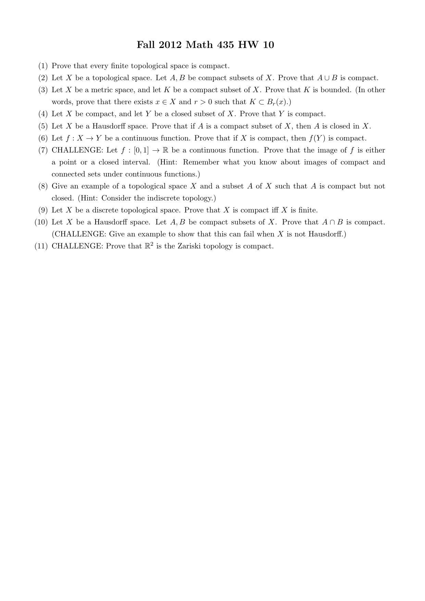
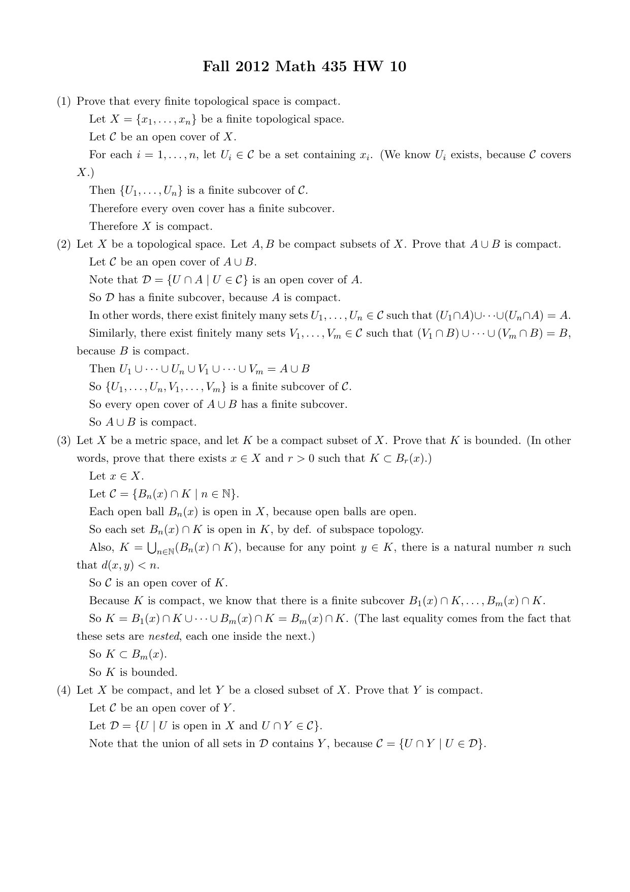
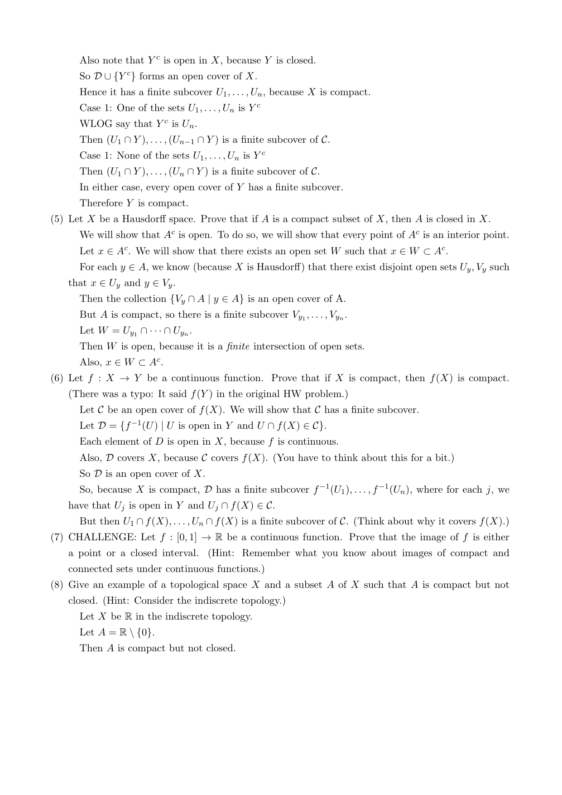
Chapter 7: backup solutions (Claude, not official)
Official files cover Section 7.1 #1, #5; Section 7.2 #1, #4, #6, #7; Worksheet #1 to #6, #8, #9 and the main part of #10. Everything below is NOT in the official files. Throughout, "compact" is Morris' Definition 7.1.7 (every open covering has a finite subcovering), and by Remark 7.1.8 a subset A of (X,τ) is compact as a subset iff it is compact as a subspace, so we may use open sets of the big space.
Proof. Recall that in the finite-closed topology the open sets are Ø and the sets whose complement in X is finite. Let A ⊆ X and let Oi, i ∈ I, be an open covering of A, so A ⊆ ⋃i∈I Oi.
If A = Ø, then any single Oi (or, if I = Ø, the empty subfamily) is a finite subcovering. So assume A ≠ Ø and pick a ∈ A. Some Oi0 contains a. Then Oi0 ≠ Ø, so by definition of the finite-closed topology X \ Oi0 is finite. Hence A \ Oi0 ⊆ X \ Oi0 is finite, say A \ Oi0 = {y1, …, ym} (possibly m = 0). Each yk ∈ A, so there is ik ∈ I with yk ∈ Oik. Then
A ⊆ Oi0 ∪ Oi1 ∪ ⋯ ∪ Oim,
because every point of A is either in Oi0 or is one of the yk. This is a finite subcovering, so A is compact. ∎
(i) (0, 1);
(ii) [0, 1);
(iii) ℚ;
(iv) ℙ;
(v) ℝ2;
(vi) the open disc D = {⟨x, y⟩ : x2 + y2 < 1} considered as a subspace of ℝ2;
(vii) the Sorgenfrey line;
(viii) C[0, 1] with the topology induced by the metric d of Example 6.1.5:
(ix) ℓ1, ℓ2, ℓ∞, c0 with the topologies induced respectively by the metrics d1, d2, d∞, and d0 of Exercises 6.1 #7.
In each part we exhibit an open covering with no finite subcovering. (Parts (i) to (vi) are subsets of ℝ or ℝ2; by Remark 7.1.8 it is enough to use open sets of ℝ or ℝ2.) In most parts the covering is an increasing sequence O1 ⊆ O2 ⊆ ⋯, and then a finite subfamily On1, …, Onk has union ON where N = max{n1, …, nk}; so it suffices to find, for each N, a point of the space not in ON.
(i) Let On = (1/n, 1) for n = 2, 3, …. Each On is open in ℝ, O2 ⊆ O3 ⊆ ⋯, and (0, 1) = ⋃n⩾2 On: if 0 < x < 1, choose n ⩾ 2 with 1/n < x. Given N ⩾ 2, the point 1/N lies in (0, 1) but not in ON = (1/N, 1). So no finite subfamily covers (0, 1), and (0, 1) is not compact. (This is also Corollary 7.2.3.)
(ii) Let On = (−1, 1 − 1/n) for n = 1, 2, …. These are open, increasing, and [0, 1) ⊆ ⋃ On: if 0 ⩽ x < 1, choose n with 1/n < 1 − x, so x < 1 − 1/n. Given N, the point 1 − 1/N ∈ [0, 1) is not in ON. So [0, 1) is not compact. (This is also Example 7.2.7.)
(iii) Let On = (−n, n), n = 1, 2, …. These are open in ℝ, increasing, and cover ℝ ⊇ ℚ (every real x satisfies |x| < n for some n). Given N, the rational number N ∈ ℚ is not in (−N, N). So ℚ is not compact.
(iv) ℙ is the set of irrational numbers. Use the same On = (−n, n). They cover ℙ. Given N, the number N + √2 is irrational (if it were rational then √2 = (N + √2) − N would be rational), and N + √2 > N, so N + √2 ∈ ℙ \ ON. So ℙ is not compact.
(v) Let On = {⟨x, y⟩ : x2 + y2 < n2}, the open disc (open ball) of radius n about the origin, n = 1, 2, …. These are open in ℝ2, increasing, and cover ℝ2 (any point has distance < n from the origin for some n). Given N, the point ⟨N, 0⟩ is not in ON since N2 is not < N2. So ℝ2 is not compact.
(vi) Let On = {⟨x, y⟩ : x2 + y2 < (1 − 1/n)2}, n = 2, 3, …, the open disc of radius 1 − 1/n about the origin. These are open in ℝ2 and increasing. They cover D: if ⟨x, y⟩ ∈ D put r = √(x2 + y2) < 1 and choose n ⩾ 2 with 1/n < 1 − r; then r < 1 − 1/n. Given N ⩾ 2, the point ⟨1 − 1/N, 0⟩ lies in D but not in ON. So D is not compact.
(vii) By Exercises 3.2 #11 the Sorgenfrey line (ℝ, τ1) has basis {[a, b) : a ∈ ℝ, b ∈ ℚ, a < b}. For each n ∈ ℤ the set [n, n + 1) is a basis element (n + 1 ∈ ℚ), hence open. Every real x lies in [⌊x⌋, ⌊x⌋ + 1), so {[n, n + 1) : n ∈ ℤ} is an open covering of ℝ. These sets are pairwise disjoint and each is nonempty, so a finite subfamily [n1, n1 + 1), …, [nk, nk + 1) misses, for example, the point M + 1 where M = max{n1, …, nk} (since M + 1 lies only in [M + 1, M + 2)). So the Sorgenfrey line is not compact.
(viii) Here d(f, g) = ∫01 |f(x) − g(x)| dx. Let 0 denote the zero function and let On = Bn(0) = {f ∈ C[0, 1] : d(f, 0) < n}, n = 1, 2, …. Open balls are open in the metric topology, the On increase, and they cover C[0, 1] because d(f, 0) is a real number for each f. Given N, the constant function g(x) = N is continuous and d(g, 0) = ∫01 N dx = N, which is not < N; so g ∉ ON. Hence (C[0, 1], d) is not compact.
(ix) Let (Z, ρ) be any one of (ℓ1, d1), (ℓ2, d2), (ℓ∞, d∞), (c0, d0), and let 0 = (0, 0, 0, …), which lies in all four sets. Let On = {x ∈ Z : ρ(x, 0) < n}, n = 1, 2, …. As in (viii) these open balls are open, increasing, and cover Z. For N ∈ ℕ let e(N) = (N, 0, 0, 0, …). This sequence has only one nonzero term, so Σ|xn| and Σxn2 converge, it is bounded, and it converges to 0; hence e(N) ∈ ℓ1, ℓ2, ℓ∞, c0. Moreover
d1(e(N), 0) = N, d2(e(N), 0) = (N2)1/2 = N, d∞(e(N), 0) = d0(e(N), 0) = sup{N, 0} = N.
So e(N) ∉ ON, and no finite subfamily covers Z. Hence none of the four spaces is compact. ∎
Remark. (iii), (iv), (v), (viii), (ix) can also be done in one line with Proposition 7.2.12 (a compact subset of a metric space is bounded), since each of these sets is unbounded; the covers above just make that argument explicit.
Answer: No. Use the basis {[a, b) : a ∈ ℝ, b ∈ ℚ, a < b} of the Sorgenfrey line (Exercises 3.2 #11). Consider the family
[1, 2) and On = [0, 1 − 1/n) for n = 2, 3, ….
Each is a basis element (right endpoints 2 and 1 − 1/n are rational), hence open. They cover [0, 1]: the point 1 lies in [1, 2); if 0 ⩽ x < 1, choose n ⩾ 2 with 1/n < 1 − x, so x ∈ [0, 1 − 1/n).
Suppose a finite subfamily covered [0, 1]. The On increase with n, so the finite subfamily is contained in {[1, 2), ON} for N the largest index used (take N = 2 if no On is used). Then [0, 1] ⊆ [1, 2) ∪ [0, 1 − 1/N). But the point 1 − 1/N lies in [0, 1] (as N ⩾ 2), is less than 1 so is not in [1, 2), and is not < 1 − 1/N so is not in ON. Contradiction. Hence [0, 1] is not a compact subset of the Sorgenfrey line. ∎
Remark. The point is that in the Sorgenfrey line the points of [0, 1) can only be approached "from the right" by the open sets [a, b), so the covering sets that reach toward 1 from the left never reach it; 1 has to be covered separately by a set that does not help near 1−.
Proof. For each i ∈ I let Oi = X \ Fi. Since Fi is closed, Oi is open. By De Morgan's law,
⋃i∈I Oi = ⋃i∈I (X \ Fi) = X \ ⋂i∈I Fi = X \ Ø = X.
So {Oi : i ∈ I} is an open covering of X. Since X is compact, there are i1, …, im ∈ I with X = Oi1 ∪ ⋯ ∪ Oim. Applying De Morgan again,
Fi1 ∩ ⋯ ∩ Fim = (X \ Oi1) ∩ ⋯ ∩ (X \ Oim) = X \ (Oi1 ∪ ⋯ ∪ Oim) = X \ X = Ø. ∎
Remark (degenerate case). If I = Ø the usual convention is ⋂i∈Ø Fi = X, so the hypothesis forces X = Ø, and then the conclusion is trivial. For I ≠ Ø the argument above gives m ⩾ 1.
Proof. Let S = f([0, 1]). Then S ≠ Ø.
Step 1: S is compact, hence closed and bounded. [0, 1] is compact (Proposition 7.1.9) and f is continuous, so S is compact (Proposition 7.2.1 applied to f : [0, 1] → S, which is continuous into the subspace S and surjective). By Proposition 7.2.10, S is closed and bounded in ℝ.
Step 2: S has a least and a greatest element. S is nonempty and bounded, so c = inf S and d = sup S exist. Since S is closed, Lemma 3.3.2 gives d ∈ S, and the same argument applied to inf (or to −S) gives c ∈ S. (This is Proposition 7.2.14.) Clearly S ⊆ [c, d].
Step 3: S ⊇ [c, d]. [0, 1] is connected (Proposition 4.3.5: a subspace of ℝ is connected iff it is an interval), and a continuous image of a connected space is connected (Chapter 5), so S is connected. Suppose some t with c < t < d is not in S. Put A = S ∩ (−∞, t) and B = S ∩ (t, ∞). These are open in the subspace S, disjoint, A ∪ B = S (because t ∉ S), c ∈ A and d ∈ B, so both are nonempty. Then A is a nonempty proper clopen subset of S (its complement in S is the open set B), contradicting connectedness of S. Hence every t ∈ (c, d) lies in S, and with c, d ∈ S we get [c, d] ⊆ S.
Therefore S = [c, d]. If c = d, then S = {c} is a point; if c < d, S is the closed interval [c, d]. ∎ (Compare Proposition 7.2.15.)
The Hausdorff part is in the official solutions; here is the CHALLENGE example.
Example. Let ℕ = {1, 2, 3, …}, let a, b be two extra points not in ℕ, and let X = ℕ ∪ {a, b}. Define
τ = {U : U ⊆ ℕ} ∪ {U ⊆ X : ℕ ⊆ U}.
τ is a topology. Ø ⊆ ℕ and ℕ ⊆ X, so Ø, X ∈ τ. For a union of members of τ: if some member contains ℕ, the union contains ℕ; otherwise every member is a subset of ℕ, and so is the union. For the intersection of two members U, V: if both contain ℕ, so does U ∩ V; otherwise one of them is ⊆ ℕ, so U ∩ V ⊆ ℕ. In all cases the result is in τ.
A = ℕ ∪ {a} is compact. Let {Oi} be an open covering of A. Some Oi0 contains a. Since a ∉ ℕ, Oi0 is not a subset of ℕ, so by definition of τ, ℕ ⊆ Oi0. Thus A ⊆ Oi0, a one-set subcovering. Likewise B = ℕ ∪ {b} is compact.
A ∩ B = ℕ is not compact. For each n ∈ ℕ, {n} ⊆ ℕ, so {n} ∈ τ. The family {{n} : n ∈ ℕ} is an open covering of ℕ, and any finite subfamily {n1}, …, {nk} misses the point max{n1, …, nk} + 1 ∈ ℕ. So ℕ is not compact.
So A, B are compact but A ∩ B is not. As the Hausdorff part guarantees, X is not Hausdorff: every open set containing a contains ℕ, and so does every open set containing b, so a and b cannot be separated by disjoint open sets. ∎
(Read: "ℝ2 in the Zariski topology is compact.") As in the course (Hatcher's notes), for a polynomial f ∈ ℝ[x, y] let Uf = {p ∈ ℝ2 : f(p) ≠ 0}. The Zariski-open sets are exactly the unions of sets Uf; equivalently the closed sets are the common zero sets Z(S) = {p : g(p) = 0 for all g ∈ S} of sets S of polynomials.
Tool (Hilbert basis theorem). Every ideal of the polynomial ring ℝ[x, y] is finitely generated. (This is a standard theorem of algebra; we use it without proof.)
Proof. Let {Oi : i ∈ I} be a Zariski-open covering of ℝ2. Each Oi is a union of sets Uf; let S be the set of all polynomials f such that Uf ⊆ Oi for some i ∈ I. Then ⋃f∈S Uf = ⋃i∈I Oi = ℝ2. It suffices to find finitely many f1, …, fk ∈ S with Uf1 ∪ ⋯ ∪ Ufk = ℝ2, because then choosing for each fj an index ij with Ufj ⊆ Oij gives the finite subcovering Oi1, …, Oik.
Note that ⋃f∈S Uf = ℝ2 says exactly: there is no point p ∈ ℝ2 with f(p) = 0 for all f ∈ S.
Let J be the ideal of ℝ[x, y] generated by S, i.e. the set of all finite sums Σ hjfj with hj ∈ ℝ[x, y], fj ∈ S. By the Hilbert basis theorem J = (g1, …, gm) for some g1, …, gm ∈ J. Each gl ∈ J is a finite combination of elements of S, so altogether only finitely many elements f1, …, fk of S occur in these expressions, and each gl ∈ (f1, …, fk).
Claim: Uf1 ∪ ⋯ ∪ Ufk = ℝ2. Suppose not: then there is p with f1(p) = ⋯ = fk(p) = 0. Each gl = Σ hljfj, so gl(p) = 0 for all l. Every element of J is Σ qlgl, so vanishes at p. In particular every f ∈ S ⊆ J vanishes at p, contradicting the previous paragraph. So the claim holds, and by the reduction above {Oi} has a finite subcovering. Hence ℝ2 with the Zariski topology is compact. ∎
Remarks. (1) Over ℝ one cannot conclude J = (1) (e.g. x2 + y2 + 1 has no real zeros); the proof above deliberately avoids needing that. (2) The same proof shows ℝn and every subspace of ℝn are compact in the Zariski topology.
Chapter 8 solutions
My worked solutions to the comprehensive-exam problem (and any class problem with no official key) follow; the instructor's official solutions to the main-textbook / worksheet problems are appended after.
Comps Fall 2004 #3 - solution
(a) We show $(X\times Y)\setminus\Gamma(f)$ is open. Let $(x,y)\notin\Gamma(f)$, so $y\neq f(x)$. As $Y$ is Hausdorff, pick disjoint open sets $V\ni y$ and $W\ni f(x)$. By continuity $f^{-1}(W)$ is open and contains $x$, so $f^{-1}(W)\times V$ is an open neighborhood of $(x,y)$ in $X\times Y$. For any $(x',y')$ in it, $f(x')\in W$ and $y'\in V$ with $W\cap V=\emptyset$, so $y'\neq f(x')$, i.e. $(x',y')\notin\Gamma(f)$. Hence the complement is open and $\Gamma(f)$ is closed.
(b) Define $\varphi:X\to\Gamma(f)$ by $\varphi(x)=(x,f(x))$. It is a bijection (its inverse is $(x,f(x))\mapsto x$). It is continuous: its two coordinate maps $x\mapsto x$ and $x\mapsto f(x)$ are continuous, so the map into the product is continuous, and its image lies in $\Gamma(f)$. Its inverse is the restriction to $\Gamma(f)$ of the projection $\pi_X:X\times Y\to X$, which is continuous. A continuous bijection with continuous inverse is a homeomorphism, so $\Gamma(f)\cong X$. ∎
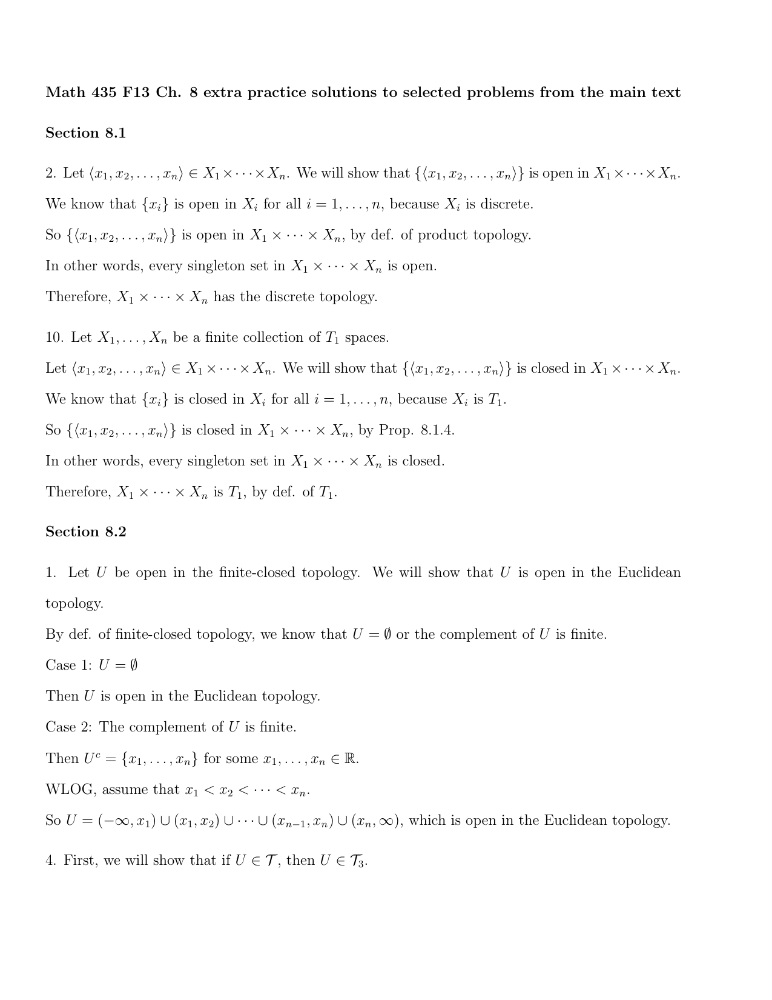
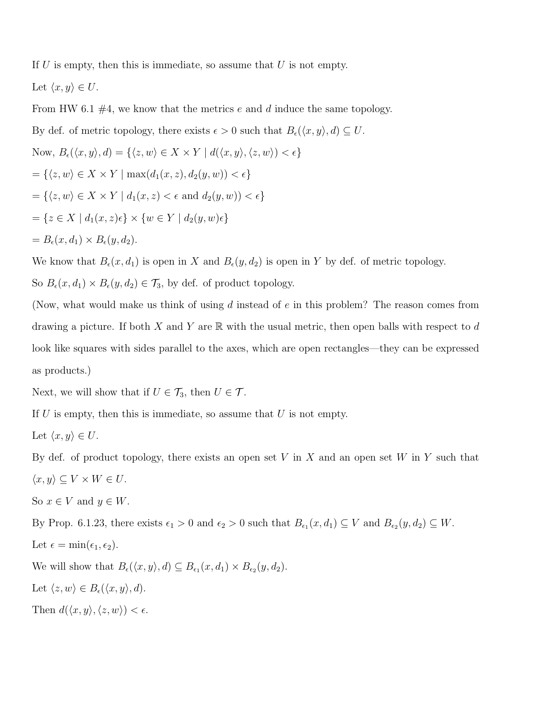
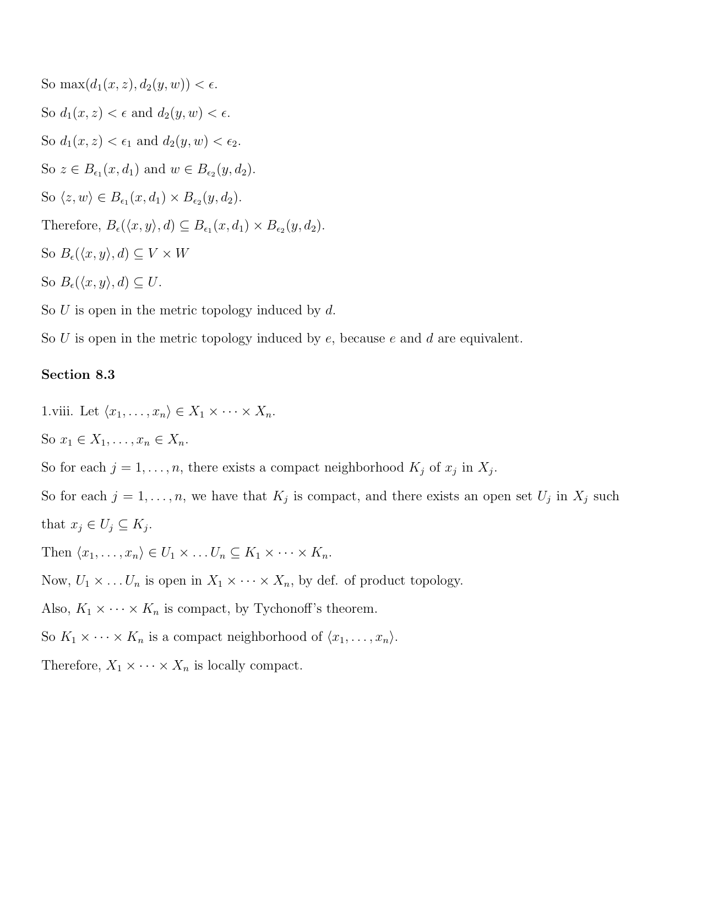
Chapter 8: backup solutions (Claude, not official)
Official file covers Section 8.1 #2, #10; Section 8.2 #1, #4. Its "8.3 #1.viii" actually proves the current book's 8.3 #1(iv) (a product of locally compact spaces is locally compact), so the current #1(viii) (the converse) is written out below. Everything below is NOT in the official file.
Facts used throughout. (a) By Definition 8.1.1 the sets O1 × ⋯ × On (Oi open in Xi) form a basis for the product topology, so a set W is open in the product iff for each x ∈ W there is such a basic set with x ∈ O1 × ⋯ × On ⊆ W; and every open set is a union of basic sets. (b) A map g into a space with basis ℬ is continuous iff g−1(B) is open for every B ∈ ℬ (since g−1 commutes with unions). (c) A bijection g is a homeomorphism iff g is continuous and g(U) is open for every open U; and since g(⋃Uk) = ⋃g(Uk), it is enough to check g(B) open for B in a basis of the domain.
Proof. In the finite-closed topology on a set Y the closed sets are exactly Y and the finite subsets of Y.
Fix a ∈ X1. The set {a} is finite, hence closed in (X1, τ1), and X2 is closed in (X2, τ2). By Proposition 8.1.4, C = {a} × X2 is closed in (X1 × X2, τ).
But C is not closed in the finite-closed topology on X1 × X2: C is infinite (it is in bijection with the infinite set X2), and C ≠ X1 × X2 (X1 is infinite, so there is b ∈ X1 with b ≠ a, and then ⟨b, y⟩ ∉ C for any y ∈ X2). So C is neither finite nor the whole space.
Hence τ has a closed set (so its complement is an open set) that the finite-closed topology does not have; therefore τ is not the finite-closed topology. ∎
Proof. Let (X1, τ1), …, (Xn, τn) be indiscrete, so τi = {Ø, Xi}, and let X = X1 × ⋯ × Xn with the product topology τ. A basic open set is O1 × ⋯ × On with each Oi ∈ {Ø, Xi}. If some Oi = Ø the product is Ø; otherwise it is X. So the basis is contained in {Ø, X}. Every member of τ is a union of basic sets, and any union of sets from {Ø, X} is Ø or X. Hence τ ⊆ {Ø, X}; since every topology on X contains Ø and X, τ = {Ø, X}, the indiscrete topology. ∎
Proof. Let (X1, τ1), …, (Xn, τn) be Hausdorff and let x = ⟨x1, …, xn⟩ ≠ y = ⟨y1, …, yn⟩ in the product. Two n-tuples are equal iff all coordinates are equal, so there is an index i with xi ≠ yi. Since Xi is Hausdorff there are open U, V in Xi with xi ∈ U, yi ∈ V, U ∩ V = Ø. Put
U′ = X1 × ⋯ × Xi−1 × U × Xi+1 × ⋯ × Xn, V′ = X1 × ⋯ × Xi−1 × V × Xi+1 × ⋯ × Xn.
Each is a product of open sets, hence open (Observations 8.1.3(ii)). Clearly x ∈ U′ and y ∈ V′. If z ∈ U′ ∩ V′ then zi ∈ U ∩ V = Ø, impossible; so U′ ∩ V′ = Ø. Hence the product is Hausdorff. ∎
Key observation. For subsets U, V of X: (U × V) ∩ D = Ø ⟺ U ∩ V = Ø. Indeed, (z, z) ∈ U × V iff z ∈ U and z ∈ V iff z ∈ U ∩ V.
(⇒) Suppose X is Hausdorff. We show (X × X) \ D is open. Let (x, y) ∉ D, i.e. x ≠ y. Choose disjoint open sets U ∋ x, V ∋ y. Then U × V is open in X × X, contains (x, y), and by the key observation (U × V) ∩ D = Ø, i.e. U × V ⊆ (X × X) \ D. So every point of (X × X) \ D has an open set around it inside (X × X) \ D; hence (X × X) \ D is a union of open sets, so it is open and D is closed.
(⇐) Suppose D is closed, so W = (X × X) \ D is open. Let x ≠ y in X. Then (x, y) ∈ W, so by Fact (a) there is a basic open set U × V (U, V open in X) with (x, y) ∈ U × V ⊆ W. Then x ∈ U, y ∈ V, and (U × V) ∩ D = Ø, so U ∩ V = Ø by the key observation. Hence X is Hausdorff. ∎
[(X1,τ1) × (X2,τ2)] × (X3, τ3) ≅ (X1,τ1) × (X2,τ2) × (X3,τ3).
Krebs' note: the intended statement is the associative law, [(X1, τ1) × (X2, τ2)] × (X3, τ3) ≅ (X1, τ1) × [(X2, τ2) × (X3, τ3)]. We prove that both bracketed products are homeomorphic to the unbracketed triple product P = X1 × X2 × X3; this proves the book's statement and, composing, the associative law.
Step 1 (left bracketing). Let L = (X1 × X2) × X3, with the product topology of the space X1 × X2 (itself carrying the product topology) and X3. Define
f : L → P, f(⟨⟨x1, x2⟩, x3⟩) = ⟨x1, x2, x3⟩.
f is a bijection (its inverse is ⟨x1, x2, x3⟩ ↦ ⟨⟨x1, x2⟩, x3⟩).
f is continuous. A basic open set of P is O1 × O2 × O3 with Oi ∈ τi, and f−1(O1 × O2 × O3) = (O1 × O2) × O3. Here O1 × O2 is open in X1 × X2, so (O1 × O2) × O3 is a basic open set of L. By Fact (b), f is continuous.
f is open. A basic open set of L is W × O3 with W open in X1 × X2 and O3 ∈ τ3. By Fact (a), W = ⋃k∈K (Ak × Bk) with Ak ∈ τ1, Bk ∈ τ2. Then
f(W × O3) = ⋃k∈K (Ak × Bk × O3),
a union of basic open sets of P, hence open. By Fact (c), f is a homeomorphism: L ≅ P. This is exactly the book's statement.
Step 2 (right bracketing). Let R = X1 × (X2 × X3) and g : R → P, g(⟨x1, ⟨x2, x3⟩⟩) = ⟨x1, x2, x3⟩. The same argument with the roles of the factors switched works: g−1(O1 × O2 × O3) = O1 × (O2 × O3) is open in R, and for a basic open set O1 × W of R with W = ⋃k(Bk × Ck) open in X2 × X3, g(O1 × W) = ⋃k(O1 × Bk × Ck) is open in P. So g is a homeomorphism: R ≅ P.
Step 3 (associativity). g−1 ∘ f : L → R, ⟨⟨x1, x2⟩, x3⟩ ↦ ⟨x1, ⟨x2, x3⟩⟩, is a composition of homeomorphisms, hence a homeomorphism. So [(X1, τ1) × (X2, τ2)] × (X3, τ3) ≅ (X1, τ1) × [(X2, τ2) × (X3, τ3)]. ∎
(X1,τ1) × (X2,τ2) ≅ (X2,τ2) × (X1,τ1). (ii) Generalize the above result to products of any finite number of topological spaces.
(i) Define s : X1 × X2 → X2 × X1 by s(⟨x1, x2⟩) = ⟨x2, x1⟩, and t : X2 × X1 → X1 × X2 by t(⟨x2, x1⟩) = ⟨x1, x2⟩. Then t ∘ s and s ∘ t are identity maps, so s is a bijection with inverse t.
s is continuous: for a basic open set O2 × O1 of X2 × X1 (Oi ∈ τi), s−1(O2 × O1) = {⟨x1, x2⟩ : x2 ∈ O2, x1 ∈ O1} = O1 × O2, which is open; apply Fact (b). By the identical argument (with indices swapped), t is continuous. So s is a homeomorphism. ∎
(ii) Generalization. Let (X1, τ1), …, (Xn, τn) be topological spaces and σ a permutation (bijection) of {1, …, n}. Then
(X1, τ1) × ⋯ × (Xn, τn) ≅ (Xσ(1), τσ(1)) × ⋯ × (Xσ(n), τσ(n)).
Proof. Let P = ∏j=1n Xj, Q = ∏k=1n Xσ(k), and define hσ : P → Q by hσ(⟨x1, …, xn⟩) = ⟨xσ(1), …, xσ(n)⟩ (the k-th coordinate of the image is xσ(k) ∈ Xσ(k)). The map Q → P that sends ⟨y1, …, yn⟩ to the tuple whose j-th coordinate is yσ−1(j) is a two-sided inverse, so hσ is a bijection.
hσ is continuous. A basic open set of Q is U1 × ⋯ × Un with Uk ∈ τσ(k). Then
hσ−1(U1 × ⋯ × Un) = {x ∈ P : xσ(k) ∈ Uk for all k} = {x ∈ P : xj ∈ Uσ−1(j) for all j} = V1 × ⋯ × Vn,
where Vj = Uσ−1(j) ∈ τj (since σ(σ−1(j)) = j). This is a product of open sets, hence open in P; by Fact (b) hσ is continuous.
hσ is open. For a basic open set V1 × ⋯ × Vn of P (Vj ∈ τj), hσ(V1 × ⋯ × Vn) = Vσ(1) × ⋯ × Vσ(n), a basic open set of Q (because x ranges over all tuples with xj ∈ Vj, so the k-th coordinate xσ(k) ranges independently over Vσ(k)). By Fact (c), hσ is a homeomorphism. ∎
(Together with #7 and induction, this means a finite product of spaces is, up to homeomorphism, independent of both the order and the bracketing of the factors.)
(i) (C1 × C2 × ⋯ × Cn)′ ⊇ C′1 × C′2 × ⋯ × C′n ;
(ii) C1 × C2 × ⋯ × Cn = C1 × C2 × ⋯ × Cn ;
(iii) if C1, C2, …, Cn are dense in (X1,τ1), (X2,τ2) , … , (Xn,τn), respectively, then C1 × C2 × ⋯ × Cn is dense in the product space (X1,τ1) × (X2,τ2) × ⋯ × (Xn,τn) ;
(iv) if (X1,τ1), (X2,τ2), …, (Xn,τn) are separable spaces, then (X1,τ1) × (X2,τ2) × ⋯ × (Xn,τn) is a separable space;
(v) for each n ⩾ 1, ℝn is a separable space.
Notation: C = C1 × ⋯ × Cn, X = X1 × ⋯ × Xn. Morris' definitions: x is a limit point of A if every open set containing x contains a point of A other than x (Definition 3.1.1); A′ is the set of limit points; A = A ∪ A′; A is dense if A = X; X is separable if it has a countable dense subset.
Lemma. x ∈ A iff every open set containing x meets A. Proof. If x ∈ A this is clear, and if x ∈ A′ every open U ∋ x contains a point of A. Conversely, suppose every open U ∋ x meets A, and x ∉ A; then the point of A in U is different from x, so x ∈ A′. ∎
(i) Let x = ⟨x1, …, xn⟩ with xi ∈ C′i for each i, and let W be open in X with x ∈ W. By Fact (a) there are Oi ∈ τi with x ∈ O1 × ⋯ × On ⊆ W. For each i, Oi is open and contains xi ∈ C′i, so there is ci ∈ Ci ∩ Oi with ci ≠ xi. Then c = ⟨c1, …, cn⟩ ∈ C ∩ W, and c ≠ x (they differ in every coordinate). So every open set containing x contains a point of C other than x, i.e. x ∈ C′. ∎
Remark: equality can fail. In ℝ × ℝ take C1 = {0}, C2 = ℝ. Then C′1 = Ø so C′1 × C′2 = Ø, but ⟨0, 0⟩ ∈ ({0} × ℝ)′, since every open set containing ⟨0, 0⟩ contains ⟨0, t⟩ for small t ≠ 0.
(ii) (⊇) Let x ∈ C1 × ⋯ × Cn and let W be open with x ∈ W; pick a basic x ∈ O1 × ⋯ × On ⊆ W. By the Lemma, each Oi (open, containing xi ∈ Ci) contains some ci ∈ Ci. Then ⟨c1, …, cn⟩ ∈ C ∩ W. So every open set containing x meets C, and x ∈ C by the Lemma.
(⊆) Let x ∈ C and fix i. Let U be open in Xi with xi ∈ U. The set pi−1(U) = X1 × ⋯ × Xi−1 × U × Xi+1 × ⋯ × Xn is open in X and contains x, so by the Lemma it contains some c ∈ C; then ci ∈ U ∩ Ci. So every open set containing xi meets Ci, i.e. xi ∈ Ci. As i was arbitrary, x ∈ C1 × ⋯ × Cn. ∎
(Alternatively for ⊆: C1 × ⋯ × Cn is closed by Proposition 8.1.4 and contains C, and C is the smallest closed set containing C.)
(iii) If each Ci is dense, Ci = Xi, so by (ii) C = C1 × ⋯ × Cn = X1 × ⋯ × Xn = X. So C is dense in X. ∎
(iv) For each i choose a countable dense subset Di of Xi. By (iii), D = D1 × ⋯ × Dn is dense in X. A finite product of countable sets is countable (by induction on n: D1 × ⋯ × Dk+1 = ⋃d∈Dk+1 (D1 × ⋯ × Dk) × {d} is a countable union of countable sets). So X has a countable dense subset and is separable. ∎
(v) ℚ is countable and dense in ℝ (Example 3.1.12), so ℝ is separable. By Observations 8.1.3(i), the euclidean topology on ℝn is the product topology on ℝ × ⋯ × ℝ (n factors), so by (iv) ℝn is separable (with countable dense subset ℚn). For n = 1 this is the statement about ℝ itself. ∎
f(y) = ⟨f1(y), f2(y), …, fn(y)⟩, is continuous if and only if every fi is continuous. [Hint: Observe that fi = pi ∘ f, where pi is the projection mapping of ∏j=1n(Xj,τj) onto (Xi, τi).]
Proof. For every y, pi(f(y)) = fi(y), so fi = pi ∘ f.
(⇒) If f is continuous, then each fi = pi ∘ f is a composition of continuous maps (pi is continuous by Proposition 8.2.5(i)), hence continuous.
(⇐) Suppose each fi is continuous. Let O1 × ⋯ × On be a basic open set of the product (Oi ∈ τi). Then
f−1(O1 × ⋯ × On) = {y : fi(y) ∈ Oi for all i} = f1−1(O1) ∩ ⋯ ∩ fn−1(On),
a finite intersection of open subsets of Y (each fi−1(Oi) is open because fi is continuous), hence open. Any open W in the product is a union ⋃k Bk of basic open sets, so f−1(W) = ⋃k f−1(Bk) is open. Hence f is continuous. ∎
…
(viii) If (X1,τ1), (X2,τ2), …, (Xn,τn) are topological spaces such that ∏i=1n(Xiτi) is locally compact, then each (Xi,τi) is locally compact.
Note on numbering. The official Ch. 8 file has a solution labelled "1.viii", but its content is "a product of locally compact spaces is locally compact", which is the current book's (iv). The current (viii) is the converse, proved here. (If Krebs meant the old-edition numbering, the official file already covers it.)
A needed hypothesis. The statement requires every Xj to be nonempty. Otherwise it is false: take X1 = Ø and X2 = ℚ. The product Ø × ℚ = Ø is (vacuously) locally compact, but ℚ is not locally compact: if K were a compact neighbourhood of 0 in ℚ, there would be ε > 0 with (−ε, ε) ∩ ℚ ⊆ K; K is compact in ℚ, hence a compact subset of ℝ, hence closed in ℝ (Proposition 7.2.5), so K ⊇ closure in ℝ of (−ε, ε) ∩ ℚ, which is [−ε, ε] and contains irrationals, contradicting K ⊆ ℚ. So assume all Xj ≠ Ø.
Recall (Definition 3.2.1) N is a neighbourhood of p if there is an open U with p ∈ U ⊆ N.
Proof. Fix i and a point a ∈ Xi. Since every Xj is nonempty, choose aj ∈ Xj for j ≠ i, and let x ∈ ∏Xj be the point with xi = a and xj = aj for j ≠ i. The product is locally compact, so x has a compact neighbourhood K: there is an open set W in the product with x ∈ W ⊆ K.
Let pi be the projection onto Xi. By Proposition 8.2.5(i), pi is continuous and an open mapping. Then:
- pi(W) is open in Xi (pi is open), and a = pi(x) ∈ pi(W);
- pi(W) ⊆ pi(K), since W ⊆ K;
- pi(K) is compact: the restriction of pi to the subspace K is a continuous surjection of the compact space K onto the subspace pi(K), so Proposition 7.2.1 applies (with Remark 7.1.8 to pass between compact subsets and compact subspaces).
So a ∈ pi(W) ⊆ pi(K) with pi(W) open: pi(K) is a compact neighbourhood of a. As a ∈ Xi was arbitrary, (Xi, τi) is locally compact. ∎
(This is also the special case of 8.3 #1(vii) with f = pi, a continuous open surjection.)
Chapter 10 solutions
My worked solutions to the comprehensive-exam problem (and any class problem with no official key) follow; the instructor's official solutions to the main-textbook / worksheet problems are appended after.
Comps Spring 2000 #4 - solution
A basic open set of the product $X=\prod_{i\in N}\{0,1\}$ has the form $\prod_i U_i$ where $U_i=X_i$ for all but finitely many $i$.
(a) Let $B=\prod_i U_i$ be a nonempty basic open set; say $U_i=X_i$ for all $i\notin\{i_1,\dots,i_k\}$. Since only finitely many coordinates are restricted and $N$ is infinite, there is an unrestricted coordinate $j$ (with $U_j=\{0,1\}$); a point of $B$ can take either value at $j$, so $B$ contains at least two points. Every nonempty open set contains a nonempty basic open set, hence at least two points. So no open subset of $X$ is a single point.
(b) Let $C\subseteq X$ be nonempty and connected. Suppose, for contradiction, $C$ has two distinct points $a\neq b$. They differ in some coordinate $k$: $a_k\neq b_k$. The projection $\pi_k:X\to X_k$ is continuous, so $\pi_k(C)$ is a connected subset of the discrete two-point space $X_k=\{0,1\}$. But $\{a_k,b_k\}=\{0,1\}\subseteq\pi_k(C)$ makes $\pi_k(C)$ a two-point subset of a discrete space - which is disconnected. This contradicts connectedness of $C$. Hence $C$ has exactly one point. ∎
Chapter 10: backup solutions (Claude, not official)
Krebs posted no official solutions for Chapter 10, so every assigned main-text problem is solved here. Conventions used throughout (all from Morris):
- Product topology (Definitions 10.1.1): the basis consists of all sets ∏i∈I Oi with Oi ∈ τi and Oi = Xi for all but finitely many i. Call these basic open sets. Every open set containing a point x contains a basic open set containing x.
- Closure: A = A ∪ A′. Fact C. x ∈ A if and only if every open set U containing x satisfies U ∩ A ≠ Ø. (If x ∈ A this is clear; if x ∈ A′, U contains a point of A. Conversely if x ∉ A and every open U ∋ x meets A, the point it meets is different from x, so x ∈ A′.) Since every open set containing x contains a basic open set containing x, it is enough to test basic open sets.
- Int(A) is the union of all open sets contained in A (Exercises 3.2 #5).
- Regular (Definitions 10.3.27): for each x ∈ X and open U ∋ x there is an open V with x ∈ V ⊆ V ⊆ U. (The printed definition reads "x ∈ V ⊆ U"; the intended meaning, as used in Proposition 10.3.29 and Lemma 10.3.30, is x ∈ V ⊆ V ⊆ U.)
- Normal (Definitions 10.3.20): disjoint closed sets have disjoint open neighbourhoods. No separation axiom such as T1 is built in.
(i) Prove that ∏i∈I(Ai, τ′i) is a subspace of ∏i∈I(Xi, τi).
(ii) Prove that ∏i∈I Ai = ∏i∈I Ai.
(iii) Prove that Int(∏i∈I Ai) ⊆ ∏i∈I(Int(Ai)).
(iv) Give an example where equality does not hold in (iii).
Write A = ∏i∈I Ai and X = ∏i∈I Xi. Since Ai ⊆ Xi, every function f with f(i) ∈ Ai for all i also has f(i) ∈ Xi, so A ⊆ X. A useful identity: for any sets Oi ⊆ Xi, (∏ Oi) ∩ A = ∏(Oi ∩ Ai), because a point x lies in both exactly when xi ∈ Oi and xi ∈ Ai for every i.
(i) Let π be the product topology on A (built from the τ′i) and σ the subspace topology on A induced by the product topology τ on X. We show π = σ.
π ⊆ σ. Take a basic π-open set ∏ O′i, where O′i ∈ τ′i and O′i = Ai for i outside a finite set J. By definition of the subspace topology on Ai, O′i = Oi ∩ Ai for some Oi ∈ τi; for i ∉ J choose Oi = Xi. Then ∏ Oi is a basic τ-open set and, by the identity above, ∏ O′i = (∏ Oi) ∩ A ∈ σ. Every π-open set is a union of such basic sets, and σ is closed under unions, so π ⊆ σ.
σ ⊆ π. Let W ∩ A ∈ σ with W ∈ τ. Write W = ⋃k∈K Bk with each Bk = ∏i Oi(k) basic. Then W ∩ A = ⋃k ∏i(Oi(k) ∩ Ai). Each Oi(k) ∩ Ai ∈ τ′i, and it equals Ai whenever Oi(k) = Xi, i.e. for all but finitely many i. So each ∏i(Oi(k) ∩ Ai) is a basic π-open set, and W ∩ A ∈ π.
Hence π = σ: the product space ∏(Ai, τ′i) is a subspace of ∏(Xi, τi). ∎
(ii) ⊆ direction for the closure: each Ai is closed in Xi, so ∏ Ai is closed in X by Proposition 10.1.3. It contains A. Since A is the smallest closed set containing A (Remark 3.1.10), A ⊆ ∏ Ai.
⊇ direction: if some Aj = Ø, then Aj = Ø (Ø is closed), so both sides are empty. Otherwise every Ai ≠ Ø. Let x ∈ ∏ Ai and let B = ∏ Oi be a basic open set containing x, with Oi = Xi for i outside the finite set J. For i ∈ J, Oi is open and contains xi ∈ Ai, so by Fact C there is yi ∈ Oi ∩ Ai. For i ∉ J choose any yi ∈ Ai (possible as Ai ≠ Ø; this uses the axiom of choice, as does the very definition of a point of an infinite product). Then y = ∏ yi ∈ B ∩ A. So every basic open set containing x meets A, and x ∈ A by Fact C.
Therefore ∏ Ai = ∏ Ai. ∎
(iii) Let x ∈ Int(A). Int(A) is open and contained in A, so there is a basic open set B = ∏ Oi with x ∈ B ⊆ A. Fix j ∈ I. We claim Oj ⊆ Aj. Let t ∈ Oj and define y by yj = t and yi = xi for i ≠ j. Since xi ∈ Oi for all i, y ∈ B ⊆ A, so t = yj ∈ Aj. Thus Oj is an open subset of Aj containing xj, so xj ∈ Int(Aj). As j was arbitrary, x ∈ ∏ Int(Ai). ∎
(iv) Take I = ℕ, Xi = ℝ (Euclidean) and Ai = (0, 1) for every i. Then Int(Ai) = (0, 1), so ∏ Int(Ai) = ∏(0, 1) ≠ Ø (it contains the point with every coordinate ½).
But Int(∏ Ai) = Ø. Indeed, if it were non-empty it would contain a non-empty basic open set B = ∏ Oi, with Oi = ℝ for all i outside a finite set J. Choose k ∉ J (possible since ℕ is infinite) and a point z ∈ B; changing the k-th coordinate of z to 5 gives a point of B (since Ok = ℝ) whose k-th coordinate is not in (0, 1), so B ⊄ ∏ Ai, a contradiction. Hence equality fails in (iii). (With finitely many factors equality does hold, so an infinite index set is essential.) ∎
1. A topological space (X, τ) is said to be a Lindelöf space if every open covering of X has a countable subcovering. Prove the following statements.
(i) Every regular Lindelöf space is normal.
[Hint: use a method like that in Lemma 10.3.30. Note that we saw in Exercises 9.4 #8 that every second countable space is Lindelöf.]
(ii) The Sorgenfrey line (ℝ, τ1) is a Lindelöf space.
(iii) If (X, τ) is a topological space which has a closed uncountable discrete subspace, then (X, τ) is not a Lindelöf space.
(iv) It follows from (iii) above and Exercises 8.1 #12 that the product space (ℝ, τ1) × (ℝ, τ1) is not a Lindelöf space.
[Now we know from (ii) and (iv) that a product of two Lindelöf spaces is not necessarily a Lindelöf space.]
(v) Verify that a topological space is compact if and only if it is a countably compact Lindelöf space. (See Exercises 7.2 #17.)
Preliminary: a closed subset of a Lindelöf space is covered by countably many members of any family of open sets of X that covers it. Let F be closed in a Lindelöf space X and let 𝒱 be a family of open subsets of X with F ⊆ ⋃𝒱. Then 𝒱 ∪ {X \ F} is an open covering of X; take a countable subcovering. The members of it other than X \ F are countably many members of 𝒱, and they cover F (points of F are not in X \ F).
(i) Let X be regular and Lindelöf, and let A, B be disjoint closed sets. If A = Ø take U = Ø, V = X (and symmetrically if B = Ø). So assume both are non-empty.
For each a ∈ A, the set X \ B is open and contains a, so by regularity there is an open Va with a ∈ Va ⊆ Va ⊆ X \ B. The Va cover A, so by the preliminary countably many of them cover A; list them as V1, V2, V3, … (repeating a set if there are only finitely many). Then A ⊆ ⋃n Vn and Vn ∩ B = Ø for all n. In the same way obtain open sets U1, U2, … with B ⊆ ⋃n Un and Un ∩ A = Ø.
Define U′n = Un \ (V1 ∪ … ∪ Vn) and V′n = Vn \ (U1 ∪ … ∪ Un). Each is an open set minus a finite union of closed sets, i.e. an open set intersected with an open set, so it is open. Put U = ⋃n U′n and V = ⋃n V′n, both open.
B ⊆ U: for b ∈ B pick n with b ∈ Un; since every Vi misses B, b ∉ V1 ∪ … ∪ Vn, so b ∈ U′n. Similarly A ⊆ V.
U ∩ V = Ø: suppose z ∈ U′n ∩ V′m. If m ≤ n, then z ∈ V′m ⊆ Vm ⊆ Vm, but z ∈ U′n excludes Vm; contradiction. If n < m, then z ∈ U′n ⊆ Un, but z ∈ V′m excludes Un; contradiction.
So A ⊆ V, B ⊆ U, U ∩ V = Ø, and X is normal. ∎
(ii) Recall (Exercises 3.2 #11) τ1 has basis {[a, b) : a ∈ ℝ, b ∈ ℚ, a < b}, and every [a, b) with a < b real is τ1-open (3.2 #11(iii)).
Let 𝒰 be a τ1-open covering of ℝ. For each x ∈ ℝ choose Ux ∈ 𝒰 with x ∈ Ux, and a basis set [a, b) with x ∈ [a, b) ⊆ Ux; since a ≤ x < b, also [x, b) ⊆ Ux. Write bx = b. So x ∈ [x, bx) ⊆ Ux, with x < bx. It suffices to find a countable set C ⊆ ℝ with ⋃x∈C [x, bx) = ℝ, for then {Ux : x ∈ C} is a countable subcovering.
Let W = ⋃x∈ℝ (x, bx) (open intervals).
Step 1: countably many (x, bx) cover W. Let 𝒬 be the set of pairs (p, q) of rationals with p < q such that (p, q) ⊆ (x, bx) for at least one x; for each such pair choose one such x = x(p,q). 𝒬 is countable. If y ∈ W, then y ∈ (x, bx) for some x; choose rationals p, q with x < p < y < q < bx. Then (p, q) ∈ 𝒬 and y ∈ (p, q) ⊆ (x(p,q), bx(p,q)). So C1 = {x(p,q) : (p, q) ∈ 𝒬} is countable and ⋃x∈C1 [x, bx) ⊇ W.
Step 2: C2 = ℝ \ W is countable. Let y < z be two points of ℝ \ W. If z < by then z ∈ (y, by) ⊆ W, which is false; so by ≤ z and the open intervals (y, by) and (z, bz) are disjoint. Each (y, by) is a non-empty open interval, so contains a rational qy; by disjointness, y ↦ qy is one-to-one from ℝ \ W into ℚ. Hence ℝ \ W is countable.
Now C = C1 ∪ C2 is countable, and ⋃x∈C [x, bx) contains W (Step 1) and every point y ∈ C2 (as y ∈ [y, by)), i.e. all of ℝ. So (ℝ, τ1) is Lindelöf. ∎
(iii) Let D be a closed, uncountable subset of X whose subspace topology is discrete. For each d ∈ D, {d} is open in D, so there is Od ∈ τ with Od ∩ D = {d}. Then 𝒰 = {Od : d ∈ D} ∪ {X \ D} is an open covering of X (X \ D is open as D is closed). Let 𝒱 ⊆ 𝒰 be any subcovering. For each d ∈ D, the only member of 𝒰 containing d is Od (X \ D misses D, and Od′ ∩ D = {d′} for d′ ≠ d), so Od ∈ 𝒱. The sets Od are pairwise distinct (their traces on D differ), so 𝒱 is uncountable. Thus 𝒰 has no countable subcovering and X is not Lindelöf. ∎
(iv) Let τ2 be the product topology on ℝ2 = (ℝ, τ1) × (ℝ, τ1) and L = {⟨x, y⟩ : x + y = 0}. By Exercises 8.1 #12 (iii) and (iv), L is closed in (ℝ2, τ2) and its subspace topology is discrete. For completeness:
• L is closed: ℝ2 \ L = {⟨x, y⟩ : x + y ≠ 0} is Euclidean-open (the function ⟨x, y⟩ ↦ x + y is continuous), hence a union of Euclidean products (a, b) × (c, d); each such product is τ2-open because (a, b), (c, d) ∈ τ1 (3.2 #11(ii)). So ℝ2 \ L ∈ τ2.
• L is discrete: for ⟨a, −a⟩ ∈ L, the set [a, a + 1) × [−a, −a + 1) is τ2-open, and a point ⟨x, −x⟩ of L lies in it iff a ≤ x < a + 1 and −a ≤ −x < −a + 1, i.e. a ≤ x and x ≤ a, i.e. x = a. So its intersection with L is {⟨a, −a⟩}.
• L is uncountable, since x ↦ ⟨x, −x⟩ is a bijection ℝ → L.
By (iii), (ℝ, τ1) × (ℝ, τ1) is not Lindelöf. ∎
(v) Recall (Exercises 7.2 #17) X is countably compact if every countable open covering has a finite subcovering.
If X is compact: every open covering, countable or not, has a finite subcovering, so X is countably compact; and a finite subcovering is countable, so X is Lindelöf.
Conversely, let X be countably compact and Lindelöf, and let 𝒰 be an open covering. Lindelöf gives a countable subcovering 𝒰0; 𝒰0 is a countable open covering, so countable compactness gives a finite subcovering of 𝒰0, which is a finite subcovering of 𝒰. So X is compact. ∎
Let (X, τ) be normal and A a closed subset with the subspace topology τA. Let C, D be disjoint closed subsets of (A, τA). Then A \ C is open in A, so A \ C = A ∩ W for some W ∈ τ, and C = A ∩ (X \ W), an intersection of two closed subsets of X. So C is closed in X; likewise D is closed in X. As C ∩ D = Ø and X is normal, there are U, V ∈ τ with C ⊆ U, D ⊆ V and U ∩ V = Ø. Then U ∩ A and V ∩ A are open in (A, τA), contain C and D respectively (C, D ⊆ A), and are disjoint. So (A, τA) is normal. ∎
Let d be a metric inducing τ, and write B(x, r) = {y : d(x, y) < r}. Open balls are open, and a set U is open iff for each x ∈ U some B(x, ε) ⊆ U.
(i) ⇒ (ii). Assume X is Lindelöf. For each n ∈ ℕ, {B(x, 1/n) : x ∈ X} is an open covering, so there is a countable Cn ⊆ X with X = ⋃c∈Cn B(c, 1/n). Let C = ⋃n Cn, a countable set. Let U be a non-empty open set; pick y ∈ U and ε > 0 with B(y, ε) ⊆ U, then n with 1/n < ε. Some c ∈ Cn has y ∈ B(c, 1/n), so d(c, y) < 1/n < ε and c ∈ B(y, ε) ⊆ U. Thus every non-empty open set meets C, so C is dense (Proposition 3.1.15) and X is separable.
(ii) ⇒ (iii). Let D be a countable dense set and ℬ = {B(c, 1/n) : c ∈ D, n ∈ ℕ}, a countable family of open sets. Let U be open and x ∈ U; choose ε > 0 with B(x, ε) ⊆ U and n with 2/n < ε. B(x, 1/n) is non-empty and open, so it contains some c ∈ D (Proposition 3.1.15). Then x ∈ B(c, 1/n), and for y ∈ B(c, 1/n), d(x, y) ≤ d(x, c) + d(c, y) < 2/n < ε, so B(c, 1/n) ⊆ B(x, ε) ⊆ U. By Proposition 2.3.2, ℬ is a basis, so X is second countable.
(iii) ⇒ (i) (Lindelöf's Theorem; this part does not need a metric). Let ℬ = {B1, B2, …} be a countable basis and 𝒰 an open covering. Let K be the set of indices k such that Bk is contained in at least one member of 𝒰, and for each k ∈ K choose Uk ∈ 𝒰 with Bk ⊆ Uk. If x ∈ X, then x ∈ U for some U ∈ 𝒰 and there is Bk with x ∈ Bk ⊆ U; so k ∈ K and x ∈ Uk. Hence {Uk : k ∈ K} is a countable subcovering and X is Lindelöf.
So (i) ⇒ (ii) ⇒ (iii) ⇒ (i). ∎
8. A topological space (X, τ) is said to satisfy the first axiom of countability (or to be first countable if for each x ∈ X, there exists a countable family Ui, i ∈ ℕ of open sets containing x, such that if V ∈ τ and x ∈ V, then V ⊇ Un′ for some n.
(i) Prove that every metrizable space is first countable.
(ii) Verify that every second countable space is first countable, but that the converse is false. [Hint: Consider discrete spaces.]
(iii) If {(Xi, τi) : i ∈ ℕ}, is a countable family of first countable spaces, prove that ∏i=1∞(Xi, τi) is first countable.
(iv) Verify that every subspace of a first countable space is first countable.
(v) Let X be any uncountable set. Prove that the cube IX is not first countable, and hence is not metrizable.
[Note that IX is an example of a [compact Hausdorff and hence] normal space which is not metrizable.]
(vi) Generalize (v) above to show that if J is any uncountable set and each (X, τj) is a topological space with more than one point, then ∏j∈J(Xj, τj) is not metrizable.
Call a family as in the definition a countable local base at x. (The "Un′" in the book is a typo for Un.) A finite family can be listed as a sequence by repeating a member, so "countable" may mean finite or countably infinite.
(i) Let d be a metric inducing τ and x ∈ X. Put Un = B(x, 1/n), n ∈ ℕ; each is open and contains x. If V ∈ τ and x ∈ V, there is ε > 0 with B(x, ε) ⊆ V; for n > 1/ε, Un = B(x, 1/n) ⊆ B(x, ε) ⊆ V. So X is first countable. ∎
(ii) Let ℬ be a countable basis and x ∈ X. X is open, so x lies in some member of ℬ (Proposition 2.3.2); hence ℬx = {B ∈ ℬ : x ∈ B} is a non-empty countable family of open sets containing x. If V ∈ τ and x ∈ V, Proposition 2.3.2 gives B ∈ ℬ with x ∈ B ⊆ V, and this B belongs to ℬx. So ℬx is a countable local base at x, and X is first countable.
The converse is false. Let X be an uncountable set with the discrete topology. For each x, the single set U1 = {x} is a local base at x (every open V ∋ x contains {x}), so X is first countable. But X is not second countable: if ℬ is any basis and x ∈ X, the open set {x} is a union of members of ℬ, and the only non-empty set that can occur in such a union is {x} itself; so {x} ∈ ℬ for every x, and ℬ is uncountable (this is Exercises 2.2 #4(ii)). ∎
(iii) Let X = ∏i=1∞ Xi with the product topology, whose basis consists of the sets ∏ Oi with Oi ∈ τi and Oi = Xi for all but finitely many i. Fix x = ⟨x1, x2, …⟩ and, for each i, a countable local base {Ui,n : n ∈ ℕ} at xi in Xi. For N ∈ ℕ and (n1, …, nN) ∈ ℕN let
W(N; n1, …, nN) = U1,n1 × … × UN,nN × XN+1 × XN+2 × … .
Each W is a basic open set containing x, and the family of all W is countable (a countable union over N of the countable sets ℕN). If V is open and x ∈ V, there is a basic set ∏ Oi with x ∈ ∏ Oi ⊆ V and Oi = Xi for all i > N, for some N. For i ≤ N, Oi is open and contains xi, so Oi ⊇ Ui,ni for some ni. Then W(N; n1, …, nN) ⊆ ∏ Oi ⊆ V. So X is first countable. ∎
(iv) Let Y ⊆ X with the subspace topology, y ∈ Y, and {Un} a countable local base at y in X. The sets Un ∩ Y are open in Y and contain y. If V is open in Y with y ∈ V, then V = W ∩ Y for some open W in X; y ∈ W, so W ⊇ Un for some n, and V ⊇ Un ∩ Y. So {Un ∩ Y} is a countable local base at y in Y. ∎
(vi) first, then (v) as a special case.
Lemma. Let J be uncountable and let each (Xj, τj) be a T1-space with at least two points. Then P = ∏j∈J Xj is not first countable.
Proof. For each j choose distinct aj, bj ∈ Xj, and let x ∈ P have xj = aj for all j. Suppose {Un : n ∈ ℕ} were a countable local base at x. Each Un contains a basic open set Bn = ∏ Oj(n) containing x, where Oj(n) = Xj for j outside a finite set Fn. The set F = ⋃n Fn is countable, and J is uncountable, so pick k ∈ J \ F. Since Xk is T1, {bk} is closed, so V = pk−1(Xk \ {bk}) is open in P (pk is continuous, Proposition 10.1.5), and x ∈ V because ak ≠ bk. For every n, let y be x with its k-th coordinate replaced by bk; since k ∉ Fn, Ok(n) = Xk and y ∈ Bn ⊆ Un, while y ∉ V. So no Un is contained in V, a contradiction. □
(vi) Let J be uncountable and each Xj have more than one point. Suppose P = ∏ Xj were metrizable. Metrizable spaces are Hausdorff, and every subspace of a Hausdorff space is Hausdorff. Each Xj is non-empty, so P ≠ Ø, and by Proposition 10.1.6 each Xj is homeomorphic to a subspace of P; hence each Xj is Hausdorff, in particular T1. By the Lemma, P is not first countable, contradicting (i). So P is not metrizable. ∎
(v) IX = ∏a∈X Ia with each Ia homeomorphic to [0, 1], which is a T1-space (indeed Hausdorff) with more than one point. X is uncountable, so by the Lemma IX is not first countable, and by (i) it is not metrizable. ∎
[Hint: Let x = ∏i∈I xi ∈ ∏i∈I Xi. Let S consists of the set of all points in ∏i∈I Xi which differ from x = ∏i∈I xi in at most a finite number of coordinates. Prove that CX(x) ⊇ S. Then show that S is dense in ∏i∈I(Xi, τi). Finally use the fact that CX(x) is a closed set.]
Let P = ∏i∈I Xi. If some Xi is empty then P = Ø, whose only subsets are Ø = P, so P is connected. Assume every Xi ≠ Ø and fix x ∈ P. Facts used: (a) a continuous image of a connected space is connected (Proposition 5.2.1); (b) if a family of connected subspaces has a point in common, its union is connected (Exercises 5.2 #4); (c) if A is connected and A ⊆ B ⊆ A, then B is connected (Exercises 5.2 #5).
Step 1: one coordinate at a time. For z ∈ P and k ∈ I define gz,k : Xk → P by letting gz,k(t) be the point with k-th coordinate t and i-th coordinate zi for i ≠ k. Then pi ∘ gz,k is constant for i ≠ k and the identity for i = k, so it is continuous for every i, and gz,k is continuous by Proposition 10.1.8. Hence L(z, k) = gz,k(Xk) is connected by (a). It contains z (take t = zk) and every point that differs from z only in coordinate k.
Step 2: each y ∈ S lies in a connected set containing x. Let y ∈ S differ from x exactly in the coordinates k1, …, km (if m = 0, y = x and {x} is connected). Put z0 = x and let zr be obtained from zr−1 by changing coordinate kr to ykr; so zm = y. Let Lr = L(zr−1, kr), which is connected and contains both zr−1 and zr. By induction, Kr = L1 ∪ … ∪ Lr is connected: K1 = L1, and Kr = Kr−1 ∪ Lr where both are connected and share the point zr−1, so (b) applies. Thus Ky = Km is connected and contains x and y. (So y ∈ CX(x), which is the hint's CX(x) ⊇ S.)
Step 3: S is connected. S = ⋃y∈S Ky: each Ky ⊆ S, because every point of each Lr differs from x in at most the finitely many coordinates k1, …, km; and y ∈ Ky. All Ky contain x, so S is connected by (b).
Step 4: S is dense in P. Let B = ∏ Oi be a non-empty basic open set, with Oi = Xi outside a finite set J; each Oi ≠ Ø. Choose y with yi ∈ Oi for i ∈ J and yi = xi for i ∉ J. Then y ∈ B and y differs from x in at most the finitely many coordinates in J, so y ∈ S ∩ B. Every non-empty open set contains a non-empty basic open set, so every non-empty open set meets S, and S = P by Proposition 3.1.15.
Step 5. S is connected and S ⊆ P ⊆ S = P, so P is connected by (c). (Equivalently, as in the hint: S ⊆ CX(x), CX(x) is closed, so P = S ⊆ CX(x), and CX(x) is connected by Exercises 5.2 #9.) ∎